![Figure 2.2. The IK comparison. The left panel shows one fixed cost over joint coordinates, its two target-reaching configurations, and the accepted iterates from the shared start. The right panel compares undamped Gauss–Newton, two fixed damping values, adaptive LM and gradient descent. Adaptive LM starts with the same damping as the moderate fixed-damping run and reduces it after useful model predictions. The dotted line marks the task tolerance. The horizontal axis counts accepted optimization updates, not physical time.](lectures/03-D1-optimization-1/fig/ik_iterates.png)
A robot reaching toward an object needs a candidate joint configuration. That configuration must place its gripper at the desired target while meeting the task’s geometric requirements. This chapter develops methods to compute and check such a configuration. The first calculation uses only the two-link arm’s tip position. Its small matrices make the numerical steps visible. Later examples apply the same methods to the Panda.
We first measure task error with a cost and choose updates from local slope and curvature. We then add constraints and stopping tests. The successive guesses are part of a computation; they do not yet specify a safe robot motion or commands that track it.
This detailed reference develops the intermediate algebra, additional cases and complete computations. The companion Chapter 02 essentials follows the same methods in a shorter main reading.
| Part | What the computation will do |
|---|---|
| 1. Optimization fundamentals | Turn a task error into a scalar cost; choose and check changes of the decision variables. |
| 2. Newton and numerical inverse kinematics (IK) | Use curvature and the task’s residual to construct and safeguard repeated joint updates. |
| 3. Constrained optimization | Enforce geometric requirements, interpret multipliers, and construct and check constrained solvers. |
The chapter builds on forward kinematics (FK) and the Jacobian in Kinematic foundations for robotics. It introduces the further mathematical tools before using them. Core passages construct the methods; optional reference passages supply deeper proofs and extensions. Appendix A collects numerical implementations, Appendix B describes demonstrations, and Appendix C gives source and lecture correspondence.
The motion-planning continuation follows Deck 06. Session 4.3 introduces configuration space, paths, validity checks and motion optimization with KOMO. Session 4.4 adds sampling-based planning, refinement and revalidation. A future two-part essentials note will connect this planning material to elementary forces, torques, dynamics and control. Its second part can begin from either a KOMO or a sampled path. Extended contact and manipulation remain optional future material; the complete continuation has not yet been written.
We want to change the two-link arm’s joint angles so that its tip reaches a target. The kinematics reading ended with one proposed joint update. Here we check what that update predicts, evaluate what it actually produces in the kinematic model, and define a number that measures the remaining error. This provides the starting point for choosing and checking further updates.
You need the forward-kinematics map and its Jacobian from sessions 2.3–2.4. The formulas are repeated below. Matrix multiplication predicts a task change, and a linear solve finds the joint change that gives that prediction. No optimization algorithm is assumed yet.
The arm moves in a plane. Its fixed base is the world origin, with horizontal coordinate x and vertical coordinate y. The lengths are
l_1=0.4\ \mathrm m,\qquad l_2=0.3\ \mathrm m.
The joint vector \mathbf q contains the shoulder angle q_1 and the elbow angle q_2. Positive angles turn counterclockwise. The elbow angle is relative to the first link, so the second link’s world angle is the sum of the two joint angles. Our task concerns the tip position only; it does not specify the tip’s orientation. We leave out joint limits and obstacles for this first calculation.
Forward kinematics (FK) maps a joint configuration to that tip position:
\mathbf p=\varphi(\mathbf q)= \begin{bmatrix} l_1\cos q_1+l_2\cos(q_1+q_2)\\ l_1\sin q_1+l_2\sin(q_1+q_2) \end{bmatrix}. \tag{1.1}
We start from the configuration \mathbf q^{(0)} and use the target \mathbf y^*:
\mathbf q^{(0)}= \begin{bmatrix}\pi/6\\\pi/4\end{bmatrix}\ \mathrm{rad} =\begin{bmatrix}30^\circ\\45^\circ\end{bmatrix}, \qquad \mathbf y^*=\begin{bmatrix}0.5\\0.2\end{bmatrix}\ \mathrm m.
The parenthesized superscript labels a configuration guess. It does not represent a time step. All derivatives and computations use radians; degrees help us judge the size of a joint change.
Substituting into (1.1) gives the current tip:
\mathbf p^{(0)}= \begin{bmatrix} 0.4\cos 30^\circ+0.3\cos 75^\circ\\ 0.4\sin 30^\circ+0.3\sin 75^\circ \end{bmatrix} \approx \begin{bmatrix}0.424\\0.490\end{bmatrix}\ \mathrm m.
The displacement needed to reach the target is
\mathbf e^{(0)}=\mathbf y^*-\mathbf p^{(0)} \approx\begin{bmatrix}0.076\\-0.290\end{bmatrix}\ \mathrm m. \tag{1.2}
The tip must move right and down. This target is reachable by the ideal arm: its distance from the base is about 0.539 m, between the fully folded distance of 0.1 m and the fully extended distance of 0.7 m. The calculation below tests a proposed update, rather than testing whether the target exists in the workspace.
For a small joint increment \boldsymbol\delta, the Jacobian predicts the tip displacement. This increment is the \Delta\mathbf q of the kinematics reading, written with the optimization notation:
\varphi(\mathbf q^{(0)}+\boldsymbol\delta) \approx\mathbf p^{(0)}+\mathbf J^{(0)}\boldsymbol\delta, \qquad \mathbf J^{(0)}=\mathbf J(\mathbf q^{(0)}). \tag{1.3}
The position Jacobian differentiates the two coordinates in (1.1):
\mathbf J(\mathbf q)= \begin{bmatrix} -l_1\sin q_1-l_2\sin(q_1+q_2)&-l_2\sin(q_1+q_2)\\ l_1\cos q_1+l_2\cos(q_1+q_2)&l_2\cos(q_1+q_2) \end{bmatrix}.
Its two columns describe the effects of the two joints. At the starting configuration,
\mathbf J^{(0)}\approx \begin{bmatrix} -0.490&-0.290\\ 0.424& 0.078 \end{bmatrix}\ \mathrm{m/rad}.
Multiplying this matrix by a joint increment in radians gives a predicted tip displacement in meters. We ask that prediction to equal the displacement in (1.2). This gives the linear system
\mathbf J^{(0)}\boldsymbol\delta=\mathbf e^{(0)}. \tag{1.4}
Here the matrix is square and invertible. Its determinant is about 0.085 in squared meters per squared radian. A linear solve gives
\boldsymbol\delta\approx \begin{bmatrix}-0.920\\1.293\end{bmatrix}\ \mathrm{rad} \approx\begin{bmatrix}-52.72^\circ\\74.09^\circ\end{bmatrix}. \tag{1.5}
The components solve the two simultaneous equations for horizontal and vertical displacement. Multiplying the matrix by the computed update reproduces \mathbf e^{(0)}. Therefore the local model predicts
\mathbf p_{\mathrm{pred}} =\mathbf p^{(0)}+\mathbf J^{(0)}\boldsymbol\delta =\mathbf p^{(0)}+\mathbf e^{(0)} =\mathbf y^*. \tag{1.6}
The linear equation has been solved to numerical precision. The approximation lies in (1.3), which replaces the nonlinear FK map by its local linear model. The proposed elbow change is about 74 degrees, so it requires a check beyond that local prediction.
Adding the proposed update to the starting configuration gives the new guess:
\mathbf q^{(1)}=\mathbf q^{(0)}+\boldsymbol\delta \approx\begin{bmatrix}-22.72^\circ\\119.09^\circ\end{bmatrix}.
The sum of its two angles is about 96.37 degrees. Evaluate (1.1) again at this configuration:
\begin{aligned} \mathbf p^{(1)}&=\varphi(\mathbf q^{(1)})\\ &\approx \begin{bmatrix} 0.4\cos(-22.72^\circ)+0.3\cos(96.37^\circ)\\ 0.4\sin(-22.72^\circ)+0.3\sin(96.37^\circ) \end{bmatrix}\\ &\approx\begin{bmatrix}0.336\\0.144\end{bmatrix}\ \mathrm m. \end{aligned} \tag{1.7}
This is the tip position computed by FK. It differs from the target that the local model predicted. Its remaining displacement is
\mathbf e^{(1)}=\mathbf y^*-\mathbf p^{(1)} \approx\begin{bmatrix}0.164\\0.056\end{bmatrix}\ \mathrm m, \qquad \lVert\mathbf e^{(1)}\rVert\approx0.174\ \mathrm m.
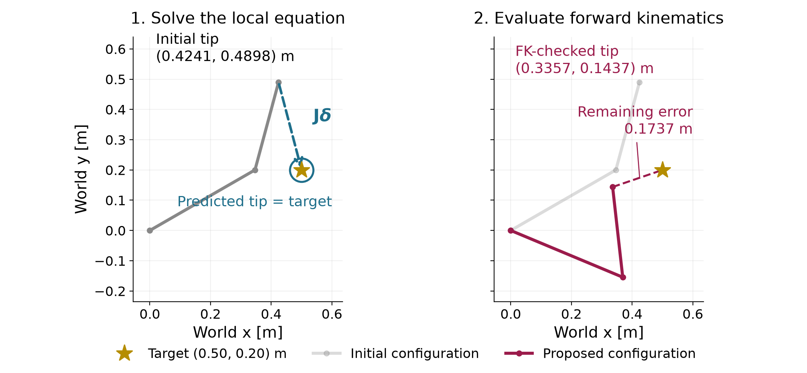
The update improves the distance from 0.300 m to 0.174 m. It does not solve the finite-target problem in one step. The mismatch comes from applying a local approximation over a large change of configuration. There is no elapsed time or joint-velocity command in this calculation.
The displacement has two components. We need one number to compare candidate configurations by how closely their tips reach the target. First define a vector of coordinate errors, called the residual:
\mathbf r(\mathbf q)=\varphi(\mathbf q)-\mathbf y^*=-\mathbf e(\mathbf q). \tag{1.8}
This residual has the opposite sign to the target-minus-tip displacement. Reversing the sign changes the vector’s direction but leaves its length unchanged.
Let r_x and r_y denote its horizontal and vertical components. Squaring and adding them gives a nonnegative scalar. We use half that sum as the cost:
f(\mathbf q)=\tfrac12\lVert\mathbf r(\mathbf q)\rVert^2 =\tfrac12\left(r_x(\mathbf q)^2+r_y(\mathbf q)^2\right). \tag{1.9}
Both components are in meters, so the cost is in squared meters. Multiplication by the positive constant one half leaves the minimizing configurations unchanged. It will cancel the factor of two when we differentiate the squared error later.
For this example, the two costs are
\begin{aligned} f(\mathbf q^{(0)}) &\approx\tfrac12\left((-0.076)^2+0.290^2\right) \approx4.487\times10^{-2}\ \mathrm m^2,\\ f(\mathbf q^{(1)}) &\approx\tfrac12\left((-0.164)^2+(-0.056)^2\right) \approx1.509\times10^{-2}\ \mathrm m^2. \end{aligned}
The local prediction and the checked result must be kept separate:
| Evaluation | Tip position in world coordinates (m) | Distance to target (m) | Half squared distance (m²) |
|---|---|---|---|
| FK at the initial guess | (0.424,\ 0.490) | 0.300 | 4.487\times10^{-2} |
| Local prediction for the proposed update | (0.500,\ 0.200) | 0 | 0 |
| FK at the proposed guess | (0.336,\ 0.144) | 0.174 | 1.509\times10^{-2} |
The zero in the middle row scores the predicted point. It is not the evaluated cost at the proposed joint configuration.
The joint angles are the quantities we can choose. We seek a configuration that minimizes the cost in (1.9):
\underset{\mathbf q\in\mathbb R^2}{\operatorname{minimize}} \quad f(\mathbf q) =\tfrac12\lVert\varphi(\mathbf q)-\mathbf y^*\rVert^2. \tag{1.10}
This formulation states the desired result; it does not yet specify an algorithm for finding it. Since this target is reachable in the ideal model, a configuration with zero cost exists. The positive cost of our new guess says only that the guess still misses the target.
A numerical method will propose an update from its current guess, evaluate the result, and decide whether and how to continue. Equation (1.4) supplied one such proposal. Later sections derive other proposals and rules for accepting or shortening them. The observed cost decrease here does not guarantee that the same full-step rule decreases the cost from every start or reaches a target after repetition.
In a manipulation system, this calculation can supply a candidate grasp configuration. A learned proposal could also supply that candidate, and FK can check its task error. A low position error alone establishes neither a suitable grasp orientation nor a safe route to it. The configuration requirements motivate this chapter’s constraints. Finding a safe route continues in the Motion optimization with KOMO (session 4.3) and Sampling-based motion planning (session 4.4).
The staged prediction/FK comparison makes the mismatch in Figure 1.1 visible in two reveals. Appendix B describes the optional visit.
The numerical example for this subsection is indexed in Appendix A (§1.1).
Answers. (1) The equation describes a local linear approximation of FK. Solving that approximation exactly does not make it exact for a large finite joint change. (2) The proposed configuration has a smaller tip distance in this example. Its positive cost and 0.174 m remaining distance show that it has not reached the target. (3) Squaring removes the sign, so the cost is unchanged. With the current-tip-minus-target residual, the same local equation is
\mathbf J^{(0)}\boldsymbol\delta=-\mathbf r(\mathbf q^{(0)}).
The checked update gives a scalar measure of progress, but it does not tell us which nearby change to choose. We next describe that choice using the slope and curvature of a cost surface.
The arm’s cost lets us compare two configurations after evaluating them. To choose a useful next configuration, we also need to describe how the cost changes nearby. We will calculate that change for a simple two-variable cost. Its surface makes the slope and curvature visible before we use them in an optimization method.
This subsection uses the scalar-cost idea from §1.1 and elementary algebra. It introduces derivatives by comparing nearby cost values, then applies the same idea to the cost along a line. It also recalls the cosine form of the dot product. By the end, you should be able to calculate the gradient and Hessian of this example, read their meaning in the figures, and use them to predict a cost change.
Let the vector \mathbf z collect the two numbers we can choose. Both coordinates and the cost are dimensionless in this example. We use the same function and starting point:
f(\mathbf z)=z_1^2+10z_2^2, \qquad \mathbf z=\begin{bmatrix}z_1\\z_2\end{bmatrix}, \qquad \mathbf z^{(0)}=\begin{bmatrix}3\\2\end{bmatrix}. \tag{1.11}
Here f names this simple cost. Section 1.1 used the same general symbol for the arm’s cost, half the squared distance to the target. The two functions have different shapes and units. For the arm, the decision coordinates will again be joint angles, and the cost will be in squared meters.
At the starting point, the cost is
f(3,2)=3^2+10(2^2)=9+40=49.
Draw the cost above every pair of decision coordinates. The resulting surface has the shape of a bowl. Its height is the cost; its two horizontal axes contain the choices being scored. Every squared term is nonnegative, so the smallest possible cost is zero. Both terms vanish together only at the origin.
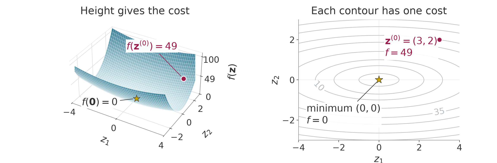
A curve connecting points with the same cost is called a contour. The right panel shows these curves from above. For example, the contour labeled 10 satisfies
z_1^2+10z_2^2=10.
Its intersections with the coordinate axes are
\begin{aligned} z_2=0&\quad\Longrightarrow\quad z_1=\pm\sqrt{10}\approx\pm3.162,\\ z_1=0&\quad\Longrightarrow\quad z_2=\pm1. \end{aligned}
Thus the contour is narrower along the second coordinate. Starting from the origin, a smaller change in that coordinate reaches the same cost. At our current point, however, we need the local rate of cost change. We find it by examining one coordinate at a time.
Hold the second coordinate fixed at its current value. The cost becomes a function of the first coordinate alone:
f(z_1,2)=z_1^2+40.
Let \varepsilon be a small, nonzero signed change in the coordinate. Starting from the first-coordinate value 3, expand the square and subtract the old cost:
\begin{aligned} f(3+\varepsilon,2)-f(3,2) &=(3+\varepsilon)^2+40-49\\ &=9+6\varepsilon+\varepsilon^2+40-49\\ &=6\varepsilon+\varepsilon^2. \end{aligned} \tag{1.12}
Divide by the coordinate change to obtain the average slope over that interval:
\frac{f(3+\varepsilon,2)-f(3,2)}{\varepsilon} =6+\varepsilon.
For a change of 0.1, the cost rises from 49 to 49.61, so the average slope is 6.1. For a change of 0.01, the cost is 49.0601 and the average slope is 6.01. As the change approaches zero, the average slope approaches 6. This limiting slope is the partial derivative with respect to the first coordinate:
\left.\frac{\partial f}{\partial z_1}\right|_{\mathbf z=\mathbf z^{(0)}} =\lim_{\varepsilon\to0} \frac{f(3+\varepsilon,2)-f(3,2)}{\varepsilon} =6. \tag{1.13}
The word “partial” means that the other coordinate stays fixed. A tangent line through the current point has this limiting slope. It approximates this one-coordinate slice of the cost near the point.
Now hold the first coordinate fixed and change the second:
f(3,z_2)=9+10z_2^2.
The corresponding calculation gives
\begin{aligned} f(3,2+\varepsilon)-f(3,2) &=9+10(2+\varepsilon)^2-49\\ &=9+40+40\varepsilon+10\varepsilon^2-49\\ &=40\varepsilon+10\varepsilon^2,\\ \frac{f(3,2+\varepsilon)-f(3,2)}{\varepsilon} &=40+10\varepsilon. \end{aligned} \tag{1.14}
Its limiting slope is therefore 40. The following numbers show the two average slopes approaching their limits. Each row changes only the named coordinate.
| Coordinate changed | Change \varepsilon | New cost | Average slope |
|---|---|---|---|
| First | 0.1 | 49.61 | 6.1 |
| First | 0.01 | 49.0601 | 6.01 |
| Second | 0.1 | 53.1 | 41 |
| Second | 0.01 | 49.401 | 40.1 |
The second-coordinate slope is larger at this point. The coefficient 10 affects that slope, but the coordinate’s current value also matters. Replacing the starting values 3 and 2 by arbitrary coordinate values in the same calculation gives
\begin{aligned} \frac{f(z_1+\varepsilon,z_2)-f(z_1,z_2)}{\varepsilon} &=\frac{2z_1\varepsilon+\varepsilon^2}{\varepsilon} =2z_1+\varepsilon,\\ \frac{f(z_1,z_2+\varepsilon)-f(z_1,z_2)}{\varepsilon} &=\frac{20z_2\varepsilon+10\varepsilon^2}{\varepsilon} =20z_2+10\varepsilon. \end{aligned}
Letting the signed change approach zero gives the slopes at any point:
\frac{\partial f}{\partial z_1}=2z_1, \qquad \frac{\partial f}{\partial z_2}=20z_2.
Put the partial derivatives in coordinate order. The resulting vector is the gradient:
\nabla f(\mathbf z)= \begin{bmatrix}\partial f/\partial z_1\\\partial f/\partial z_2\end{bmatrix} =\begin{bmatrix}2z_1\\20z_2\end{bmatrix}, \qquad \nabla f(\mathbf z^{(0)})=\begin{bmatrix}6\\40\end{bmatrix}. \tag{1.15}
Each entry says how sensitive the scalar cost is to one decision coordinate. Let \boldsymbol\delta collect the two coordinate increments. To change both coordinates, first change the first one and then the second. The total change is the sum of the changes along these two parts:
\begin{aligned} f(3+\delta_1,2)-f(3,2)&=6\delta_1+\delta_1^2,\\ f(3+\delta_1,2+\delta_2)-f(3+\delta_1,2)&=40\delta_2+10\delta_2^2. \end{aligned}
The second change does not depend on the new first-coordinate value because the two square terms are separate. Adding cancels the intermediate cost. Retaining only the terms proportional to the increments gives the first-order prediction. The squared terms become smaller relative to the length of the increment as that length approaches zero. This produces
\begin{aligned} f(\mathbf z^{(0)}+\boldsymbol\delta)-f(\mathbf z^{(0)}) &\approx6\delta_1+40\delta_2\\ &=\nabla f(\mathbf z^{(0)})^\top\boldsymbol\delta. \end{aligned} \tag{1.16}
For a general cost, continuous partial derivatives near the current point are enough to justify this first-order approximation. Here “continuous” means that the derivatives approach their current values as the coordinates approach the current point. For a general cost, the second change starts where the first one ended, so its slope is evaluated at that shifted point. Continuity makes that slope approach its starting value as both changes shrink. Later, (1.20) keeps the bowl’s squared terms as well.
We can also explain the direction of the gradient. For a nonzero gradient and a nonzero trial increment, let \vartheta be the angle between them. The dot product equals the product of their lengths times the cosine of this angle:
\nabla f(\mathbf z^{(0)})^\top\boldsymbol\delta =\|\nabla f(\mathbf z^{(0)})\|\,\|\boldsymbol\delta\|\cos\vartheta.
These are Euclidean lengths, computed from the square root of the sum of squared components. At the current point the gradient is fixed. Among increments of equal length, the expression is largest when the cosine is one, so the increment points along the gradient. This is the direction of greatest first-order cost increase.
Along a constant-cost contour, the cost’s rate of change is zero. Applying the first-order expression to a tangent vector at the current point gives a zero dot product with the gradient. So the gradient is perpendicular to the contour’s tangent there. A chord between two points on a curved contour can have a different direction from this tangent. These properties describe the gradient’s direction. Section 1.3 chooses how far an optimizer moves against it.
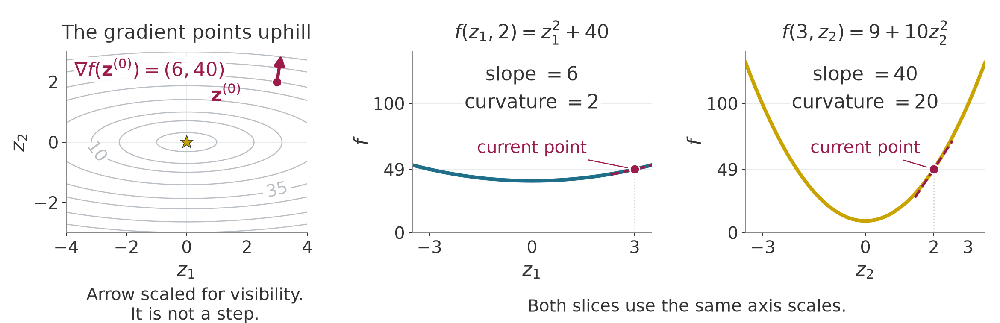
The first-coordinate slope is 6 at the current point. If that coordinate increases by 0.1, the slope at the new point is
2(3.1)=6.2.
This endpoint slope differs from the average slope 6.1 over the interval in the table. The change in slope per unit coordinate change is
\frac{6.2-6}{0.1}=2.
The second-coordinate slope at its new point is
20(2.1)=42.
Its average slope over the interval was 41. Its change in slope per unit coordinate change is
\frac{42-40}{0.1}=20.
These rates are the coordinate curvatures. Here they are constant because each slope depends linearly on its coordinate. In general, we differentiate the slopes to obtain their rates of change. Collect those derivatives in the Hessian matrix:
\mathbf H(\mathbf z)=\nabla^2 f(\mathbf z)= \begin{bmatrix} \dfrac{\partial(2z_1)}{\partial z_1}& \dfrac{\partial(2z_1)}{\partial z_2}\\[10pt] \dfrac{\partial(20z_2)}{\partial z_1}& \dfrac{\partial(20z_2)}{\partial z_2} \end{bmatrix} =\begin{bmatrix}2&0\\0&20\end{bmatrix}. \tag{1.17}
Row i names the slope being differentiated. Column j names the coordinate being changed. In this example, changing the second coordinate does not change the first slope, and changing the first coordinate does not change the second slope. That explains the zero off-diagonal entries. Coupled cost terms can give nonzero off-diagonal entries.
For a scalar cost with continuous second derivatives, the Hessian is symmetric. With d decision coordinates, the gradient has d entries and the Hessian has d rows and d columns. The current gradient entries 6 and 40 describe slopes; the Hessian entries 2 and 20 describe changes of slopes. They answer different questions about the same point.
To inspect curvature along a chosen line, fix a nonzero trial increment \boldsymbol\delta. Scale it by a real number \alpha. A scale of zero gives the current point; a scale of one gives the trial endpoint. Values of either sign trace the line. Section 1.3 will use a positive scale to choose a trial step’s length after choosing its direction. Section 1.4 will test that trial before accepting an update. The scale here is a coordinate along the line, independent of physical time. Substituting the points into the bowl gives
\begin{aligned} f(\mathbf z^{(0)}+\alpha\boldsymbol\delta) &=(3+\alpha\delta_1)^2+10(2+\alpha\delta_2)^2\\ &=9+6\alpha\delta_1+\alpha^2\delta_1^2 +40+40\alpha\delta_2+10\alpha^2\delta_2^2\\ &=49+\alpha(6\delta_1+40\delta_2) +\alpha^2(\delta_1^2+10\delta_2^2). \end{aligned}
Only \alpha varies in this one-variable function. Differentiating it twice gives its slope and then its rate of slope change:
\begin{aligned} \frac{d}{d\alpha}f(\mathbf z^{(0)}+\alpha\boldsymbol\delta) &=6\delta_1+40\delta_2+2\alpha(\delta_1^2+10\delta_2^2),\\ \frac{d^2}{d\alpha^2}f(\mathbf z^{(0)}+\alpha\boldsymbol\delta) &=2\delta_1^2+20\delta_2^2. \end{aligned}
At zero scale, the first derivative equals the first-order cost change in (1.16).
The same second derivative comes from multiplying the Hessian by the trial increment on both sides:
\begin{aligned} \boldsymbol\delta^\top\mathbf H\boldsymbol\delta &=\begin{bmatrix}\delta_1&\delta_2\end{bmatrix} \begin{bmatrix}2&0\\0&20\end{bmatrix} \begin{bmatrix}\delta_1\\\delta_2\end{bmatrix}\\ &=2\delta_1^2+20\delta_2^2>0. \end{aligned} \tag{1.18}
Both coefficients are positive, neither squared term is negative, and at least one term is positive for any nonzero increment. So this bowl curves upward along every line. The expression describes the second derivative with respect to the line’s scale. Multiplying the direction vector by two multiplies this second derivative by four; compare unit-length vectors when comparing curvature per unit distance.
For any scalar cost with continuous second derivatives, differentiating its restriction to a line twice gives this Hessian expression at the base point, where the line’s scale is zero. An expression with a vector on both sides of a matrix in this way is called a quadratic form.
A symmetric matrix is positive definite when its quadratic form is strictly positive for every nonzero vector. We write this condition as
\mathbf H\succ0.
Positive curvature alone does not make our current point a minimum. Its gradient is nonzero, so small changes can still reduce the cost. At the origin, both slopes vanish:
\nabla f(\mathbf0)=\begin{bmatrix}0\\0\end{bmatrix}.
A point with zero gradient is called stationary. A point whose cost is no larger than that of every sufficiently nearby point is a local minimum. If the comparison holds over the entire domain, it is a global minimum. The origin is the unique global minimum of our bowl because the sum of squares is zero there and positive everywhere else.
Suppose the cost has continuous first derivatives near an interior point of an unconstrained problem. Every sufficiently small increment, in any direction, is then allowed. At a local minimum there, the gradient must be zero because a nonzero gradient would give a negative first-order change in the opposite direction.
With continuous second derivatives, a local minimum \mathbf z under these same assumptions must also have nonnegative curvature along every line:
\boldsymbol\delta^\top\mathbf H(\mathbf z)\boldsymbol\delta\ge0 \qquad\text{for every }\boldsymbol\delta.
The gradient is zero there, so each line starts with zero slope. Negative curvature would make the cost decrease for a sufficiently small move along that line, contradicting a local minimum. Zero gradient and nonnegative curvature are necessary conditions; they do not by themselves establish a minimum.
A zero gradient alone can even occur where the cost falls in one direction and rises in another. Consider the separate cost
f_{\mathrm s}(\mathbf z)=z_1^2-z_2^2, \qquad \nabla f_{\mathrm s}(\mathbf z)=\begin{bmatrix}2z_1\\-2z_2\end{bmatrix}. \tag{1.19}
The subscript marks the cost used for this counterexample. Differentiating its two slopes gives
\nabla^2 f_{\mathrm s}(\mathbf z) =\begin{bmatrix}2&0\\0&-2\end{bmatrix}.
The curvature is positive along the first coordinate and negative along the second. Its gradient is zero at the origin, but its cost increases in one coordinate direction and decreases in the other:
f_{\mathrm s}(0,0)=0, \qquad f_{\mathrm s}(0.1,0)=0.01, \qquad f_{\mathrm s}(0,0.1)=-0.01.
Replacing 0.1 by any nonzero small change preserves these opposite signs. So the origin is neither a local minimum nor a local maximum. It is a saddle point. The Hessian also establishes this conclusion because, at a stationary point, curvature of both signs gives nearby increases and decreases. Having a Hessian that is not positive definite does not establish a saddle. At a stationary point, negative curvature in every nonzero direction makes every other sufficiently nearby point have lower cost, so the point is a local maximum. If some directions have zero curvature, the Hessian alone may not classify the stationary point.
Return to the cost change predicted in (1.16). Expand the same bowl around the current point, now retaining the squared terms:
\begin{aligned} f(3+\delta_1,2+\delta_2) &=(3+\delta_1)^2+10(2+\delta_2)^2\\ &=9+6\delta_1+\delta_1^2+40+40\delta_2+10\delta_2^2\\ &=49+(6\delta_1+40\delta_2)+(\delta_1^2+10\delta_2^2). \end{aligned} \tag{1.20}
The constant term is the current cost. The linear term contains the gradient. The remaining term equals half the Hessian quadratic form:
f(\mathbf z^{(0)}+\boldsymbol\delta) =f(\mathbf z^{(0)}) +\nabla f(\mathbf z^{(0)})^\top\boldsymbol\delta +\tfrac12\boldsymbol\delta^\top\mathbf H\boldsymbol\delta. \tag{1.21}
This identity is exact for the bowl. For example, choose an increment whose two components are both 0.1. The linear prediction and the curvature correction are
\begin{aligned} \boldsymbol\delta&=\begin{bmatrix}0.1\\0.1\end{bmatrix},\\ \nabla f(\mathbf z^{(0)})^\top\boldsymbol\delta &=6(0.1)+40(0.1)=4.6,\\ \tfrac12\boldsymbol\delta^\top\mathbf H\boldsymbol\delta &=(0.1)^2+10(0.1)^2=0.11. \end{aligned}
The linear model predicts a cost of 53.6. Adding curvature gives 53.71, which agrees with direct evaluation:
f(3.1,2.1)=3.1^2+10(2.1^2)=53.71.
For a cost with continuous second derivatives near the current point, retaining the constant, linear and quadratic terms gives a second-order Taylor model:
f(\mathbf z+\boldsymbol\delta) \approx f(\mathbf z)+\nabla f(\mathbf z)^\top\boldsymbol\delta +\tfrac12\boldsymbol\delta^\top\mathbf H(\mathbf z)\boldsymbol\delta. \tag{1.22}
Here the derivatives are evaluated at the point around which the model is built. The omitted higher-order behavior matters for a finite change. A large change can therefore give a poor prediction, as the local FK model did in §1.1. On the arm, the gradient has units of squared meters per radian and the Hessian has units of squared meters per squared radian. Multiplying by the joint increments in radians makes both change terms have the cost’s units.
The quadratic model (1.22) uses the same local-approximation idea as §1.1, applied to a different function. The Jacobian there collects slopes of the vector-valued FK map and predicts a tip position. Here the gradient and Hessian describe a scalar cost and predict its value. The relationship between a linearized residual and a quadratic cost model will be derived with Gauss–Newton in §2.2.
For a fixed target and cost function, changing the candidate configuration changes where the derivatives are evaluated. It does not change the cost function. The arm’s local slopes and curvatures generally vary between candidate configurations, so its local model must be rebuilt at the new guess. These are numerical guesses; they do not describe an executed robot motion. The bowl’s Hessian is constant, so its quadratic model is exact everywhere, although its gradient changes with the point.
At a stationary point, the linear term is zero. If the Hessian is positive definite, the quadratic term is positive for every nonzero increment. With continuous second derivatives, the upward curvature persists in all directions throughout a sufficiently small neighborhood. Along each line segment from the point, the slope starts at zero. Positive curvature makes that slope increase, so the cost rises along the segment. Every distinct point in that neighborhood has greater cost. This is a strict local minimum.
The bowl’s origin meets both conditions: its gradient is zero and its Hessian is positive definite. Its exact quadratic expression proves that every nonzero increment raises the cost. At the starting point, the same Hessian is positive definite but the gradient is nonzero, so the linear term can still lower the cost. This explains why curvature alone does not identify a minimum.
For a general nonlinear cost, the test of zero gradient and a positive-definite Hessian establishes a strict local minimum. It does not classify every stationary point or give a global-minimum certificate. A method using local models can reach different solutions from different initial guesses; its update rule and stopping tests also affect the outcome. The method may stall or stop at another kind of stationary point. Its iterates may also fail to approach a single point as updates continue. Section 1.3 shows this last outcome even on the bowl, when a poorly chosen step size makes one coordinate alternate indefinitely.
The arm supplies a concrete example of multiple solutions. Chapter 01 §5.2 found two elbow configurations that reach the target \mathbf y^* of §1.1. Both are global minima of the position cost because each has zero target error. So a cost can have several global minima, and local methods started in different places can reach different ones.
In Motion optimization with KOMO (session 4.3), the decision variable \mathbf z will contain all free configurations of a trajectory. The gradient and Hessian of its cost describe how that scalar cost changes when its coordinates change. Their dimensions grow, but they still describe local changes in one fixed problem.
The numerical example for this subsection is indexed in Appendix A (§1.2).
Answers. (1) The slices pass through the same point but change different decision coordinates. Their partial derivatives measure cost change in those different directions, so the slopes can differ at that one point. (2) A sufficiently small change in the first coordinate changes the cost by approximately six times that change. It changes the first slope by twice that change. (3) The starting gradient is nonzero, so its linear term allows a cost decrease. At the origin the gradient is zero and the positive quadratic term makes every nonzero increment increase the cost. (4) The point is stationary. It can be a minimum, a maximum or a saddle; the gradient alone does not decide. (5) The bowl is quadratic, so its expansion has no terms beyond the constant, linear and quadratic terms. The nonlinear arm generally has higher-order behavior that its local quadratic model leaves out.
The gradient and Hessian describe local changes in one fixed cost. We next use the gradient to choose a direction and study how far to move along it.
We can now describe how a cost changes near the current point. We still need a rule that uses that description to choose the next point. On the bowl, moving against the gradient initially lowers the cost. Taking too much of that move can cross the valley and finish at a higher cost. This subsection calculates both outcomes and explains why the two coordinate curvatures limit a shared step size.
We use §1.2’s gradient, slope along a line and Hessian. Repeated updates will produce powers of the same coordinate factors, as derived below. We also introduce the Hessian’s eigenvalues through the two coordinate axes before using their ratio. The example stays dimensionless and uses the same bowl and start:
f(\mathbf z)=z_1^2+10z_2^2, \qquad \mathbf z^{(0)}=\begin{bmatrix}3\\2\end{bmatrix}, \qquad f(\mathbf z^{(0)})=49.
First choose a vector \mathbf d that specifies the relative changes of the coordinates. This vector takes the place of §1.2’s chosen trial increment in the line calculation. The scalar \alpha still scales the chosen vector. We now choose a positive scale, so the proposed increment is
\alpha\mathbf d.
Adding it to the current point gives the trial candidate:
\mathbf z_{\mathrm{trial}}=\mathbf z+\alpha\mathbf d. \tag{1.23}
The search direction need not have unit length. The distance between the current and trial points is the length of the scaled vector:
\|\alpha\mathbf d\|=\alpha\|\mathbf d\|.
Holding the direction vector fixed and halving the scale therefore halves the move. The parameter \alpha is often called the step size even when it is the scale of a vector whose length need not be one. Its value alone then does not give the distance moved. These are changes of numerical candidates. The scale does not represent elapsed time or an executed robot motion.
Substituting the proposed increment into the first-order model gives
f(\mathbf z+\alpha\mathbf d)-f(\mathbf z) \approx\alpha\nabla f(\mathbf z)^\top\mathbf d. \tag{1.24}
The dot product is the slope of the cost along the chosen line at zero scale. If it is negative, the cost falls initially as the scale increases. Assume continuous first derivatives near the current point, as after (1.16). The first-order change is the positive scale times a fixed negative number. The approximation error shrinks faster than the scale, so for sufficiently small positive scales it cannot cancel that decrease. Such a vector is called a descent direction:
\nabla f(\mathbf z)^\top\mathbf d<0.
This test describes the initial slope. The cost can rise again farther along the same line, so a descent direction still needs a suitable step size.
Section 1.2 showed that the gradient points toward the greatest first-order cost increase among increments of equal length. Its opposite points toward the greatest first-order decrease in these Euclidean coordinates. Choosing that opposite vector gives gradient descent:
\begin{aligned} \mathbf d&=-\nabla f(\mathbf z),\\ \nabla f(\mathbf z)^\top\mathbf d &=-\|\nabla f(\mathbf z)\|^2<0 \quad\text{when }\nabla f(\mathbf z)\ne\mathbf0. \end{aligned} \tag{1.25}
At a stationary point the proposed direction is zero. The update then stays there, regardless of whether the point is a minimum. The stationary-point distinctions in §1.2 still apply.
At our starting point, the gradient is the vector of slopes 6 and 40. With a scale of 0.01, the calculation is
\begin{aligned} \mathbf d&=\begin{bmatrix}-6\\-40\end{bmatrix}, &\alpha\mathbf d&=0.01\begin{bmatrix}-6\\-40\end{bmatrix} =\begin{bmatrix}-0.06\\-0.4\end{bmatrix},\\ \mathbf z_{\mathrm{trial}}&=\begin{bmatrix}3\\2\end{bmatrix} +\begin{bmatrix}-0.06\\-0.4\end{bmatrix} =\begin{bmatrix}2.94\\1.6\end{bmatrix}. \end{aligned}
Evaluating the cost and the increment length gives
\begin{aligned} f(\mathbf z_{\mathrm{trial}}) &=2.94^2+10(1.6^2)=8.6436+25.6=34.2436,\\ \|\alpha\mathbf d\| &=\sqrt{0.06^2+0.4^2}=\sqrt{0.1636}\approx0.4045. \end{aligned}
The cost has fallen from 49. The scale 0.01 multiplies both components. All quantities are dimensionless here. For a joint-angle cost, the scale must also supply the units needed to turn the gradient into a joint increment.
We repeat the same construction at each new candidate. Let the parenthesized superscript i count completed updates, with zero denoting the start. For a fixed step size, the rule is
\mathbf z^{(i+1)} =\mathbf z^{(i)}-\alpha\nabla f(\mathbf z^{(i)}). \tag{1.26}
Each right-hand side uses the current point. The next gradient is evaluated after the update. The index counts completed numerical updates.
The complete fixed-step procedure takes a starting point, a positive scale, a number of updates, and functions that evaluate the cost and gradient. It returns the sequence of candidates and their evaluated costs:
This procedure applies each fixed-step update even if its cost rises. Section 1.4 will add a test that can reject a trial and try a smaller scale. A fixed update budget makes the cases below comparable; exhausting it is not a claim that the task has succeeded.
Insert the bowl’s two slopes into (1.26) and factor each current coordinate:
\begin{aligned} z_1^{(i+1)} &=z_1^{(i)}-\alpha\bigl(2z_1^{(i)}\bigr) =(1-2\alpha)z_1^{(i)},\\ z_2^{(i+1)} &=z_2^{(i)}-\alpha\bigl(20z_2^{(i)}\bigr) =(1-20\alpha)z_2^{(i)}. \end{aligned} \tag{1.27}
Each factor is the number by which an update multiplies its coordinate. A factor between zero and one gives the fraction that remains. The larger second-coordinate curvature makes its factor change ten times as fast when we change the shared scale.
With a scale of 0.05, the factors are
1-2(0.05)=0.9, \qquad 1-20(0.05)=0.
The new point and its evaluated cost are
\mathbf z^{(1)}=\begin{bmatrix}0.9\cdot3\\0\cdot2\end{bmatrix} =\begin{bmatrix}2.7\\0\end{bmatrix}, \qquad f(\mathbf z^{(1)})=2.7^2=7.29.
The second coordinate reaches its minimizing value immediately. The first coordinate keeps 90 percent of its previous value on each subsequent update.
To set the first coordinate to zero in one update instead, we would need a scale of 0.5. Starting again at the original point gives
\begin{aligned} 1-2(0.5)&=0,&1-20(0.5)&=-9,\\ \mathbf z^{(1)}&=\begin{bmatrix}0\cdot3\\-9\cdot2\end{bmatrix} =\begin{bmatrix}0\\-18\end{bmatrix}, &f(\mathbf z^{(1)})&=10(-18)^2=3240. \end{aligned}
The second coordinate crosses zero and ends much farther from it. This update uses the same descent direction as before, but its length raises the cost. Setting both coordinates to zero from this start would require the scale to equal both 0.5 and 0.05. A single scale cannot do that in one update.
For a fixed scale, the factors in (1.27) stay constant. Applying the first factor twice gives
z_1^{(2)}=(1-2\alpha)z_1^{(1)} =(1-2\alpha)^2z_1^{(0)}.
Each further update adds another copy of the factor. The same argument for the second coordinate gives
z_1^{(i)}=(1-2\alpha)^i z_1^{(0)}, \qquad z_2^{(i)}=(1-20\alpha)^i z_2^{(0)}. \tag{1.28}
A factor with magnitude below one has powers that approach zero. A negative factor alternates the coordinate’s sign on each update. Its magnitude determines whether those alternations shrink, stay the same size or grow. A zero coordinate stays zero under every factor, so the condition below concerns nonzero initial coordinates, or a guarantee that covers every starting point.
For both coordinates to shrink toward zero from our start, both magnitudes must be below one. Solving the two inequalities gives
\begin{aligned} |1-2\alpha|<1 &\quad\Longleftrightarrow\quad -1<1-2\alpha<1\\ &\quad\Longleftrightarrow\quad -2<-2\alpha<0\\ &\quad\Longleftrightarrow\quad 0<\alpha<1,\\[4pt] |1-20\alpha|<1 &\quad\Longleftrightarrow\quad -1<1-20\alpha<1\\ &\quad\Longleftrightarrow\quad -2<-20\alpha<0\\ &\quad\Longleftrightarrow\quad 0<\alpha<0.1. \end{aligned}
The shared scale must satisfy both, so the second coordinate imposes the tighter limit:
0<\alpha<0.1. \tag{1.29}
The following cases all start at the same point. Their factors reproduce the shrinking, oscillation and divergence.
| Scale \alpha | First-coordinate factor | Second-coordinate factor | Behavior from the stated start |
|---|---|---|---|
| 0.02 | 0.96 | 0.60 | Both coordinates shrink without changing sign. |
| 0.05 | 0.90 | 0 | The second becomes zero; the first shrinks. |
| 0.08 | 0.84 | -0.60 | The second alternates with shrinking magnitude. |
| 0.10 | 0.80 | -1 | The second alternates without shrinking. |
| 0.11 | 0.78 | -1.20 | The second alternates with growing magnitude. |
With a scale of 0.08, crossing zero is compatible with convergence because the second coordinate retains only 60 percent of its magnitude. At 0.10 it alternates between 2 and −2 indefinitely. The first coordinate still shrinks, so the cost decreases toward 40 because (1.28) gives
f(\mathbf z^{(i)})=9(0.8)^{2i}+10(-1)^{2i}(2^2) =9(0.64)^i+40.
The iterates do not converge to a point, and the gradient does not approach zero. A decreasing cost alone therefore does not establish successful minimization.
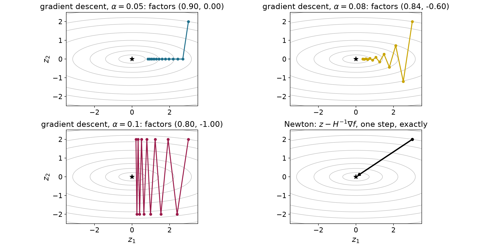
An interactive comparison repeats the same rule with several scales. The coordinate factors predict the shrinking alternation and persistent oscillation seen in Figure 1.4. Appendix B gives the starting state and controls.
Figure 1.4’s contours are narrower along the second coordinate, which has the larger curvature. We can now check whether a direction between the axes curves more or less than either axis direction.
For this comparison only, choose a direction of unit length, so
d_1^2+d_2^2=1.
Section 1.2’s line-curvature calculation then gives
\begin{aligned} \mathbf d^\top\mathbf H\mathbf d &=2d_1^2+20d_2^2\\ &=2(1-d_2^2)+20d_2^2\\ &=2+18d_2^2. \end{aligned} \tag{1.30}
The squared second component lies between zero and one. The curvature therefore ranges from 2 along the first coordinate to 20 along the second. No unit direction has curvature outside that interval. Normalizing the direction matters because doubling an unnormalized direction would multiply this expression by four.
The Hessian maps each coordinate-axis vector to a multiple of itself:
\mathbf H\begin{bmatrix}1\\0\end{bmatrix} =2\begin{bmatrix}1\\0\end{bmatrix}, \qquad \mathbf H\begin{bmatrix}0\\1\end{bmatrix} =20\begin{bmatrix}0\\1\end{bmatrix}.
A nonzero vector that the matrix maps to a scalar multiple of itself is an eigenvector. That scalar is its eigenvalue. Here the two unit coordinate axes are eigenvectors, and their eigenvalues are the extreme curvatures. For a symmetric positive-definite Hessian, the ratio of largest to smallest eigenvalue is its Euclidean condition number. For this bowl,
\operatorname{cond}(\mathbf H)=\frac{20}{2}=10. \tag{1.31}
The ratio compares slope changes per unit distance. The current slope values 6 and 40 do not enter it. It is fixed for this bowl because the Hessian is constant. We name the matrix in the notation because a condition number describes that matrix in the chosen coordinates. Rescaling a coordinate can change the ratio.
We can choose a fixed scale that makes the slower coordinate shrink as fast as possible. The precise criterion is to minimize the larger remaining magnitude:
\min_{\alpha>0}\max\bigl\{|1-2\alpha|,\ |1-20\alpha|\bigr\}. \tag{1.32}
Below 0.05, both factors are positive and the first is larger. Increasing the scale reduces that larger factor. Between 0.05 and 0.10, the first factor stays positive and its magnitude decreases. The second factor is negative and its magnitude increases from zero. Before they cross, the first controls the maximum; after they cross, the second does. Their crossing therefore minimizes the larger magnitude. At or above 0.10 the second magnitude is at least one. Such scales do worse than a scale strictly between zero and 0.10, where both magnitudes are below one.
Write \alpha^* for the scale that minimizes the larger factor magnitude. The superscript star identifies this chosen scale. At the crossing the factors have equal magnitudes and opposite signs, so
\begin{aligned} 1-2\alpha&=-(1-20\alpha)\\ &=-1+20\alpha,\\ 2&=22\alpha,\\ \alpha^*&=\frac1{11}\approx0.0909. \end{aligned} \tag{1.33}
Use the exact fraction for the scale chosen by (1.32) in the calculations below. Substituting it into the two factors gives
\begin{aligned} 1-\frac{2}{11}&=\frac{9}{11},\\[6pt] 1-\frac{20}{11}&=-\frac{9}{11}. \end{aligned}
Both coordinate magnitudes keep the same fraction on each update. Since the cost squares those coordinates, its remaining fraction is the square:
\begin{aligned} f(\mathbf z^{(i+1)}) &=\left(\frac9{11}z_1^{(i)}\right)^2 +10\left(-\frac9{11}z_2^{(i)}\right)^2\\ &=\frac{81}{121}\left((z_1^{(i)})^2+10(z_2^{(i)})^2\right)\\ &=\frac{81}{121}f(\mathbf z^{(i)}). \end{aligned} \tag{1.34}
Repeating this identity from the initial cost gives
f(\mathbf z^{(i)})=49\left(\frac{81}{121}\right)^i. \tag{1.35}
For a worked comparison, count updates until the cost first falls below one millionth. The values near that crossing are
| Completed updates | Cost at the exact scale 1/11 |
|---|---|
| 0 | 49 |
| 1 | 32.802 |
| 44 | 1.049\times10^{-6} |
| 45 | 7.026\times10^{-7} |
The cost decreases on every update, so it first falls below one millionth after 45 updates. This is a count for the stated bowl, start and exact scale. The cost target serves this comparison. Robot-task stopping rules will be developed in §2.5.
The scale 0.05 gave a much lower first cost, 7.29, by removing the second coordinate immediately. So the balanced scale is best for the largest coordinate factor; it need not give the best cost after a chosen number of updates from this particular start.
We can repeat this argument for any two-coordinate bowl of the form
f(\mathbf z)=\tfrac12(H_{11}z_1^2+H_{22}z_2^2), \qquad 0<H_{11}\le H_{22}.
The coefficients are fixed, and the minimum is at the origin. We number the coordinates so that the first has the smaller curvature. The entries H_{11} and H_{22} are also the smallest and largest eigenvalues of this diagonal Hessian.
Differentiating the squares gives the slopes and the constant diagonal Hessian:
\nabla f(\mathbf z)=\begin{bmatrix}H_{11}z_1\\H_{22}z_2\end{bmatrix}, \qquad \mathbf H=\begin{bmatrix}H_{11}&0\\0&H_{22}\end{bmatrix}.
Substituting these slopes into (1.26) gives both coordinate factors:
\begin{aligned} z_1^{(i+1)}&=z_1^{(i)}-\alpha H_{11}z_1^{(i)} =(1-\alpha H_{11})z_1^{(i)},\\ z_2^{(i+1)}&=z_2^{(i)}-\alpha H_{22}z_2^{(i)} =(1-\alpha H_{22})z_2^{(i)}. \end{aligned}
The magnitude calculation used in (1.29) now gives
\begin{aligned} |1-\alpha H_{11}|<1&\quad\Longleftrightarrow\quad0<\alpha<2/H_{11},\\ |1-\alpha H_{22}|<1&\quad\Longleftrightarrow\quad0<\alpha<2/H_{22}. \end{aligned}
The larger curvature gives the tighter bound. A shared scale that makes both coordinates approach zero from every start must satisfy
0<\alpha<\frac{\mathstrut 2}{H_{22}}.
Setting a factor to zero removes that coordinate in one update. The required scales are the reciprocals of the corresponding curvatures:
\alpha=\frac1{H_{11}}\quad\text{for the first coordinate}, \qquad \alpha=\frac1{H_{22}}\quad\text{for the second}.
The balanced scale follows by making the factor magnitudes equal:
\begin{aligned} 1-\alpha H_{11}&=-(1-\alpha H_{22}),\\ 2&=\alpha(H_{11}+H_{22}),\\ \alpha^*&=\frac{2}{H_{11}+H_{22}}. \end{aligned}
Substitute it into the nonnegative smaller-curvature factor and combine the fractions:
1-\alpha^*H_{11} =1-\frac{2H_{11}}{H_{11}+H_{22}} =\frac{H_{22}-H_{11}}{H_{22}+H_{11}}.
Dividing numerator and denominator by the smaller curvature now gives
\frac{H_{22}-H_{11}} {H_{22}+H_{11}} =\frac{H_{22}/H_{11}-1} {H_{22}/H_{11}+1} =\frac{\operatorname{cond}(\mathbf H)-1} {\operatorname{cond}(\mathbf H)+1}.
For our ratio of ten, this is nine elevenths. As the curvature mismatch grows, the fraction approaches one, so each update removes a smaller fraction of the slowest coordinate’s distance from zero. This explains the slow progress of fixed-step gradient descent on a narrow valley. This argument uses a positive-definite quadratic with a diagonal Hessian. A coupled quadratic needs a change to eigenvector coordinates, which we do not develop here.
We want the cost never to rise, the gradient to approach zero, and a change of coordinate scales to avoid slowing the method. The first is called monotone decrease. The second is convergence toward stationarity. The third is robustness to coordinate rescaling.
Choosing an arbitrary fixed positive scale guarantees none of these properties. At scale 0.5 our first cost rises. At scale 0.10 the gradient never approaches zero. Changing a coordinate’s units changes its curvature and therefore the step-size bound and the rate just derived. A suitable fixed scale does give decreasing cost and convergence on this bowl, under the stated bounds.
Section 1.4 will test evaluated costs to enforce sufficient decrease. Its stationarity claim needs additional assumptions stated there. Section 2.1 will use curvature to construct Newton’s direction and explain its response to coordinate rescaling. Armijo alone does not supply that third property.
The numerical example for this subsection is indexed in Appendix A (§1.3).
f(\mathbf z)=z_1^2+100z_2^2.
Answers. (1) The increment and its length are halved; the direction is unchanged. The length also depends on the direction vector’s norm. (2) Its dot product with the gradient is the negative squared gradient norm. This controls the initial slope, while curvature can make the cost rise farther along the line. (3) The magnitudes are 0.60 and 1.20, so repeated values shrink in the first case and grow in the second. (4) The second coordinate keeps alternating between two nonzero values; the iterates do not converge and the cost approaches 40 instead of zero. (5) It minimizes the larger coordinate-factor magnitude. A scale of 0.05 instead removes the initially costly second coordinate in one update. (6) The curvatures are 2 and 200, so their ratio is 100. The balanced scale is one over 101, and both factor magnitudes are 99 over 101.
The coordinate factors explain why one fixed scale can oscillate or diverge. We next evaluate trial costs before accepting a scale.
Section 1.3 found useful fixed scales by inspecting the bowl’s curvatures. For a nonlinear robot cost, those curvatures can vary as the candidate changes. We need a way to choose a useful step at the current point. We can evaluate the cost at a trial point and compare the result with the decrease predicted by the local slope. If the trial fails this comparison, we shorten it before changing the current point.
This subsection uses the first-order model and descent direction from §§1.2–1.3. It introduces a test for sufficient decrease, works through rejected and accepted trials, and turns that test into a repeated gradient-descent algorithm.
At the current point, choose a direction whose initial slope is negative:
\nabla f(\mathbf z)^\top\mathbf d<0.
For a positive scale, the first-order model predicts the trial cost
f(\mathbf z)+\alpha\nabla f(\mathbf z)^\top\mathbf d. \tag{1.36}
The predicted decrease is the current cost minus this prediction. It is positive because the directional slope is negative. Requiring the actual cost to reach the tangent prediction would be too demanding on an upward-curving bowl because the curve lies above its tangent. We instead require some fraction of the predicted decrease. Let c be that fraction, strictly between zero and one. This numerical example uses 0.01, or one percent.
Writing the decrease requirement and rearranging gives
\begin{aligned} f(\mathbf z)-f(\mathbf z+\alpha\mathbf d) &\ge c\bigl[-\alpha\nabla f(\mathbf z)^\top\mathbf d\bigr],\\ f(\mathbf z+\alpha\mathbf d) &\le f(\mathbf z)+c\alpha\nabla f(\mathbf z)^\top\mathbf d, \qquad 0<c<1. \end{aligned} \tag{1.37}
The second line is the Armijo sufficient-decrease condition. Its right-hand side is the acceptance threshold. It lies below the current cost, so a trial that passes makes the cost strictly smaller. It lies above the tangent prediction, leaving room for the curve’s upward departure from that tangent. The test requires at least the chosen fraction of the predicted decrease. An accepted step can give a much larger decrease.
The point, direction, current cost and gradient stay fixed during this search. Only the scale and trial point change. If the test fails, halve the scale and evaluate again. This repeated shortening is called backtracking. The search ends at the first trial that passes. It need not find the minimum along the line.
Assume continuous first derivatives near the current point and a strict descent direction. The first-order approximation error then shrinks faster than the positive scale. Subtracting the Armijo threshold from the actual trial cost separates the negative leading term from that error:
\begin{aligned} &f(\mathbf z+\alpha\mathbf d) -\bigl[f(\mathbf z)+c\alpha\nabla f(\mathbf z)^\top\mathbf d\bigr]\\ &\quad=(1-c)\alpha\nabla f(\mathbf z)^\top\mathbf d +\bigl[f(\mathbf z+\alpha\mathbf d)-f(\mathbf z) -\alpha\nabla f(\mathbf z)^\top\mathbf d\bigr]. \end{aligned} \tag{1.38}
The bracket on the last line is the first-order approximation error. For small enough scales, its magnitude is less than the magnitude of the negative term on that line. Their sum is therefore negative, which makes the trial pass. Halving any positive initial scale repeatedly approaches zero, so it reaches this accepting range after finitely many trials.
This is an exact-arithmetic statement with no lower cutoff on the scale. It assumes that the cost is defined with continuous first derivatives near the current point. An implementation can stop after a failed trial reaches a chosen small-scale threshold, called the scale floor. It can also stop when its evaluation budget is exhausted. These stopping rules can prevent it from reaching a passing trial.
Return to the same dimensionless bowl and start. The purpose of this calculation is to see four rejected candidates followed by one accepted update. The current point remains fixed until that acceptance.
The starting cost, gradient, direction and directional slope are
\begin{aligned} f(\mathbf z^{(0)})&=49, &\nabla f(\mathbf z^{(0)})&=\begin{bmatrix}6\\40\end{bmatrix},\\ \mathbf d&=\begin{bmatrix}-6\\-40\end{bmatrix}, &\nabla f(\mathbf z^{(0)})^\top\mathbf d &=-36-1600=-1636. \end{aligned}
Substitute the trial coordinates into the original cost:
\begin{aligned} f(\mathbf z^{(0)}+\alpha\mathbf d) &=(3-6\alpha)^2+10(2-40\alpha)^2\\ &=9-36\alpha+36\alpha^2\\ &\quad+40-1600\alpha+16000\alpha^2\\ &=49-1636\alpha+16036\alpha^2. \end{aligned} \tag{1.39}
The first-order prediction and acceptance threshold are different lines:
\begin{aligned} \text{tangent prediction}&=49-1636\alpha,\\ \text{Armijo threshold}&=49+0.01\alpha(-1636) =49-16.36\alpha. \end{aligned} \tag{1.40}
Start with scale one and halve each rejected scale. Evaluating (1.39) and (1.40) gives the table below. The numbers are exact for these decimal scales.
| Trial scale | Evaluated cost | Acceptance threshold | Result |
|---|---|---|---|
| 1 | 14449 | 32.64 | Reject. |
| 0.5 | 3240 | 40.82 | Reject. |
| 0.25 | 642.25 | 44.91 | Reject. |
| 0.125 | 95.0625 | 46.955 | Reject. |
| 0.0625 | 9.390625 | 47.9775 | Accept. |
At the last trial, the evaluated cost is below the threshold. We have used five trial-cost evaluations and the single gradient at the starting point. A rejected trial is an evaluation at a candidate, not a completed optimizer update.
Write \mathbf s for the increment that passed the test. Its value and the accepted new point are
\begin{aligned} \mathbf s&=0.0625\begin{bmatrix}-6\\-40\end{bmatrix} =\begin{bmatrix}-0.375\\-2.5\end{bmatrix},\\ \mathbf z^{(1)}&=\begin{bmatrix}3\\2\end{bmatrix}+\mathbf s =\begin{bmatrix}2.625\\-0.5\end{bmatrix},\\ f(\mathbf z^{(1)})&=2.625^2+10(-0.5)^2 =6.890625+2.5=9.390625. \end{aligned} \tag{1.41}
The tangent predicts a decrease of 102.25 at this scale. Armijo requires only one percent of that amount, 1.0225. The actual decrease is 39.609375, so the test passes comfortably. The tangent prediction is
49-102.25=-53.25.
This negative prediction cannot be the true value of a sum-of-squares cost.
We can now evaluate the termination argument (1.38) exactly for this first search. For a positive scale, subtract the threshold (1.40) from the evaluated cost (1.39):
\begin{aligned} f(\mathbf z^{(0)}+\alpha\mathbf d)-\text{threshold} &=-1619.64\alpha+16036\alpha^2,\\ \text{the trial passes} &\quad\Longleftrightarrow\quad 0<\alpha\le\frac{1619.64}{16036} \approx0.10100025. \end{aligned}
The negative linear term dominates the positive quadratic term at sufficiently small scales. At 0.125 the quadratic contribution is 250.5625 and the linear term’s magnitude is only 202.455, so the trial fails. At 0.0625 those values are 62.640625 and 101.2275, so it passes. The ratio in the display is the exact boundary.
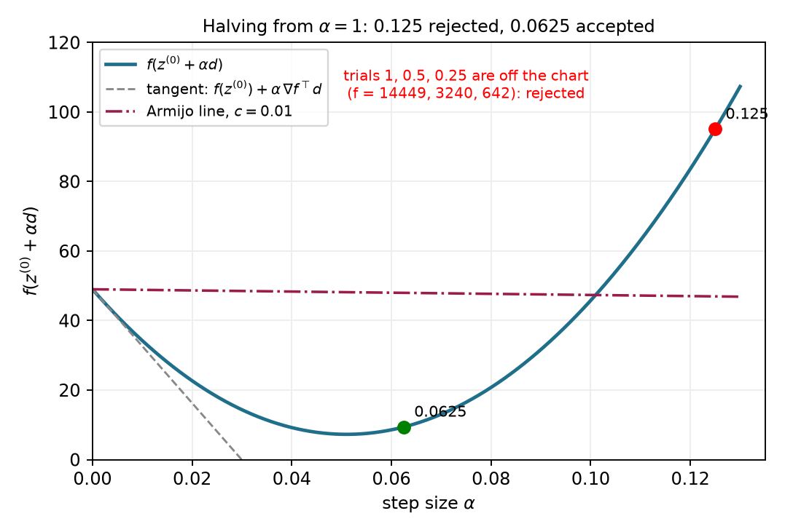
The figure also shows that the accepted scale need not minimize cost along the line. Armijo stops when sufficient decrease is established. Finding the exact line minimum would solve a different subproblem.
After accepting the new point, recompute its gradient. Reusing the old gradient would continue along the old line. Gradient descent instead follows the local slope at the new point. On this bowl, the Hessian remains constant, but the gradient and the line being searched change.
For the next search, start with the previous accepted scale multiplied by 1.2. This small growth lets the method try longer steps when they become useful. The grown trial must still pass the acceptance test (1.37). The next search’s initial trial is chosen by the rule
\text{next initial trial scale} =1.2\,(\text{previous accepted scale}). \tag{1.42}
The first six searches are listed below. A search uses one or more trial evaluations and produces one accepted update.
| Completed update | Initial trial scale | Accepted scale | Trial evaluations |
|---|---|---|---|
| 1 | 1 | 0.0625 | 5 |
| 2 | 0.075 | 0.075 | 1 |
| 3 | 0.09 | 0.09 | 1 |
| 4 | 0.108 | 0.108 | 1 |
| 5 | 0.1296 | 0.1296 | 1 |
| 6 | 0.15552 | 0.07776 | 2 |
The fourth and fifth accepted scales exceed 0.1. Section 1.3 showed that repeating a fixed scale of 0.1 or more prevents a nonzero second coordinate from shrinking. Here update 5 increases that coordinate’s magnitude from 0.232 to about 0.369, but the first coordinate shrinks enough that the total cost falls from about 2.596 to 2.493. Armijo tests that single update from the current point. The next search halves its grown trial. Larger scales may be accepted again later, but each accepted update must satisfy sufficient decrease at its own starting point.
The growth rule is specific to this gradient-descent example. A Newton-type direction already proposes a full model step, so its line search usually restarts at scale one. Part 2 will explain that distinction. Neither convention makes a scale of one a universal upper bound for all direction rules and coordinate units.
We can now specify a complete finite calculation. Its inputs are a starting point, cost and gradient functions, a positive initial scale, the fraction c, a scale floor \alpha_{\mathrm{floor}}, and budgets for accepted updates and trial evaluations. Its outputs are the accepted points, the trial records and the reason it stopped. This worked version uses exact zero-gradient detection; §2.5 will develop approximate task and stationarity tests.
The mathematical loop has four steps:
The implementation adds checks because arithmetic and evaluation budgets are finite. A nonfinite value is infinity or an undefined numerical result such as NaN, which means “not a number.” Before searching, the algorithm checks that the current point, cost, gradient, direction and directional slope are finite. It also checks that the slope is negative. A nonfinite current value or a direction whose slope is not negative stops the search with the corresponding report. A failed trial evaluation or a nonfinite trial cost or threshold instead rejects that trial.
Acceptance requires finite trial values, sufficient decrease and a trial point different from the stored point. After a rejection, the function checks the following safeguards in this order:
Every failed search leaves the current point unchanged. After a successful search, the algorithm checks the accepted-update budget before starting another search. Different implementations use different floors and budgets. The arm implementation uses the same tested-floor policy; Appendix A records the differences among implementations.
A short accepted increment indicates little movement. It does not by itself show that the gradient or task error is small. A zero gradient establishes stationarity, which §1.2 distinguished from a minimum. Exhausting either budget reports how the calculation ended, without claiming that the task is complete.
The floor is a software choice. We can make it stop a search even when a smaller trial would pass. The following example keeps the same bowl and start and only rescales the direction. It demonstrates why a floor rejection must not be reported as proof of stationarity.
Multiply the usual negative gradient by a large positive factor:
\begin{aligned} \mathbf d&=-2^{17}\nabla f(\mathbf z^{(0)}),\\ \nabla f(\mathbf z^{(0)})^\top\mathbf d &=-2^{17}\|\nabla f(\mathbf z^{(0)})\|^2<0. \end{aligned} \tag{1.43}
The direction is still strictly downhill initially. Start from scale one, halve after rejection, and set the scale floor to one millionth. The first halved scale at or below that floor is two to the power minus twenty. Multiplying it by the factor in the direction gives an effective ordinary gradient-descent scale of one eighth:
2^{-20}2^{17}=2^{-3}=0.125.
That trial has cost 95.0625 and threshold 46.955, so it fails just as the 0.125 row did in the first table. The implementation returns stalled and keeps the initial point. One more halving would give
2^{-21}2^{17}=2^{-4}=0.0625.
That trial passes with cost 9.390625 and threshold 47.9775. The numerical calculation compares the one-millionth floor with a disabled floor and confirms the different outcomes. A scale floor depends on how the direction is represented. A sufficiently small trial exists here, but the chosen stopping rule prevents this run from reaching it.
Every accepted Armijo step along a strict descent direction decreases the cost. This proves the monotone property from §1.3. It does not give robustness to a change of coordinate scales. Rescaling one coordinate relative to the others generally changes the gradient direction expressed in the original coordinates. Changing its scalar length, whether by shrinking or growing it, cannot undo that direction change. The test also does not by itself prove that arbitrary descent directions will approach stationarity. Their progress can become too small while the gradient remains nonzero.
For gradient descent, there is a stronger result under additional assumptions. Suppose the cost is bounded below and there is a fixed bound on how fast its gradient changes in a region containing the searched line segments. In exact arithmetic, with no floor or finite trial or update budget, backtracking using a fixed positive initial trial or the growth rule above then makes the gradient norm approach zero. This is the conditional stationarity property introduced in §1.3. It does not assert that the iterates approach one point or that the point is a minimum.
The gradient-change assumption is called a Lipschitz gradient. A single positive, finite constant L_{\nabla f} bounds the change between any two points \mathbf a and \mathbf b in a region containing every searched line segment:
\|\nabla f(\mathbf a)-\nabla f(\mathbf b)\| \le L_{\nabla f}\|\mathbf a-\mathbf b\|.
Hold the current point fixed and choose the direction
\mathbf d=-\nabla f(\mathbf z).
A nonnegative scale t moves a distance equal to t times the direction’s norm. The Lipschitz bound limits the change in gradient along that segment. Taking a dot product with the fixed direction gives the slope-error bound
\begin{aligned} &\frac{d}{dt}f(\mathbf z+t\mathbf d) -\nabla f(\mathbf z)^\top\mathbf d\\ &\qquad= [\nabla f(\mathbf z+t\mathbf d)-\nabla f(\mathbf z)]^\top\mathbf d\\ &\qquad\le L_{\nabla f}t\|\mathbf d\|^2 =L_{\nabla f}t\|\nabla f(\mathbf z)\|^2. \end{aligned}
Integrating this slope error from zero to \alpha bounds the error in the cost prediction. The fundamental theorem of calculus gives
\begin{aligned} &f(\mathbf z-\alpha\nabla f(\mathbf z))-f(\mathbf z) +\alpha\|\nabla f(\mathbf z)\|^2\\ &\qquad\le\int_0^\alpha L_{\nabla f}t\|\nabla f(\mathbf z)\|^2\,dt =\tfrac12L_{\nabla f}\alpha^2\|\nabla f(\mathbf z)\|^2. \end{aligned}
At a nonstationary point, comparison with the required decrease in (1.37) gives a sufficient passing range:
\begin{aligned} 1-\tfrac12L_{\nabla f}\alpha&\ge c,\\ 0<\alpha&\le\frac{2(1-c)}{L_{\nabla f}}. \end{aligned}
Let \alpha_{\mathrm{init}}^{(i)} be the initial trial at iterate i, and let \alpha^{(i)} be the accepted scale. If the initial trial passes, these two scales are equal. Otherwise, the last rejected scale is twice the accepted scale. Every rejected positive scale exceeds the sufficient passing bound above. Therefore
2\alpha^{(i)}>\frac{2(1-c)}{L_{\nabla f}} \quad\Longrightarrow\quad \alpha^{(i)}>\frac{1-c}{L_{\nabla f}}.
Combining the passing-initial-trial and rejected-trial cases gives
\alpha^{(i)}\ge \min\!\left\{\alpha_{\mathrm{init}}^{(i)}, \frac{1-c}{L_{\nabla f}}\right\}.
A fixed positive initial trial gives one positive lower bound for every search. The growth rule preserves the same bound because the next initial trial is larger than the preceding accepted scale. Starting with the first search and applying that observation repeatedly gives
\alpha^{(i)}\ge\alpha_{\min} :=\min\!\left\{\alpha_{\mathrm{init}}^{(0)}, \frac{1-c}{L_{\nabla f}}\right\}>0.
Finally, sum (1.37) over N accepted updates. Each intermediate cost cancels the same cost from the next update. Since the objective has a lower bound,
c\alpha_{\min}\sum_{i=0}^{N-1}\|\nabla f(\mathbf z^{(i)})\|^2 \le f(\mathbf z^{(0)})-f(\mathbf z^{(N)}) \le f(\mathbf z^{(0)})-\inf f.
The right-hand side is finite and independent of N. The nonnegative terms in the sum must therefore approach zero, so the gradient norm approaches zero. This argument assumes exact arithmetic and no floor or finite budget. Wolfe conditions and bracket-and-zoom search are optional extensions discussed in Appendix C.
The optional Armijo comparison separates each accepted scale from the next search’s initial trial. Accepted updates remain inside the initial bowl contour, while their path still zigzags. Adapting the scale controls decrease without changing the negative-gradient direction. Appendix B gives the optional experiment.
The numerical example for this subsection is indexed in Appendix A (§1.4).
Answers. (1) The current point, cost, gradient and direction remain fixed. The gradient is recomputed after an update is accepted. (2) At 0.125, the quadratic contribution 250.5625 exceeds the negative linear term’s magnitude 202.455. At 0.0625, the quadratic contribution 62.640625 is smaller than 101.2275. These comparisons explain the rejection and acceptance. The accepted cost must meet the sufficient-decrease threshold, which lies above the tangent prediction. (3) The accepted scale produced the preceding update; the next initial trial is its grown proposal. If that proposal fails, halving gives 0.07776. (4) A passing scale can lie below the implementation’s last allowed trial, as (1.43) demonstrates. (5) Decrease describes progress in cost. Task error and stationarity tests answer different questions, and their outcomes must be reported separately.
Backtracking checks a proposed direction through actual cost evaluations. We next construct the arm’s cost gradient so that the same test can guide joint updates.
The bowl made a gradient easy to calculate. For the arm, the cost is a function of a position, and that position is itself a function of joint angles. We need to carry the position error through this dependence to find a joint update. The Jacobian from the kinematics reading supplies that connection.
Retain the fixed target and the residual convention from §1.1:
\mathbf r(\mathbf q)=\varphi(\mathbf q)-\mathbf y^*,\qquad f(\mathbf q)=\tfrac12\mathbf r(\mathbf q)^\top\mathbf r(\mathbf q). \tag{1.44}
For the planar position task, this means f=\tfrac12(r_x^2+r_y^2). For each joint j, the scalar chain rule gives
\frac{\partial f}{\partial q_j} =r_x\frac{\partial r_x}{\partial q_j} +r_y\frac{\partial r_y}{\partial q_j} =r_xJ_{xj}+r_yJ_{yj}.
The last equality uses the fixed target: differentiating the residual is the same as differentiating FK. Each column of \mathbf J describes the tip motion caused by one joint; its rows correspond to the two task-motion components. Stacking the two cost derivatives as a column therefore gives
\nabla f(\mathbf q) =\begin{bmatrix}J_{x1}r_x+J_{y1}r_y\\J_{x2}r_x+J_{y2}r_y\end{bmatrix} =\mathbf J(\mathbf q)^\top\mathbf r(\mathbf q). \tag{1.45}
More generally, an m-component task and n joints give an m\times n Jacobian. Its transpose maps the m residual components into n cost derivatives. No inverse is required; the formula also applies when the Jacobian is rectangular or rank deficient.
We can now use the same descent rule as on the bowl:
\begin{aligned} \mathbf d&=-\mathbf J^\top\mathbf r=\mathbf J^\top\mathbf e,\\ \mathbf q^{(i+1)}&=\mathbf q^{(i)}+\alpha\mathbf d,\qquad\mathbf e=\mathbf y^*-\varphi(\mathbf q). \end{aligned} \tag{1.46}
The displacement and residual conventions describe the same update: the negative gradient uses -\mathbf J^\top\mathbf r, or equivalently \mathbf J^\top\mathbf e. This method is called Jacobian-transpose inverse kinematics. The Jacobian and residual are reevaluated after an accepted update, while the target and the cost function remain fixed.
Return to \mathbf q^{(0)}=(30^\circ,45^\circ) and \mathbf y^*=(0.5,0.2)\ \mathrm m. The position Jacobian in §1.1 and the residual in (1.44) give
\mathbf J^{(0)}\approx \begin{bmatrix}-0.490&-0.290\\ 0.424&0.078\end{bmatrix} \ \mathrm{m/rad},\qquad \mathbf r^{(0)}\approx\begin{bmatrix}-0.076\\0.290\end{bmatrix}\ \mathrm m,
\begin{aligned} \nabla f^{(0)}&\approx\begin{bmatrix} (-0.490)(-0.076)+(0.424)(0.290)\\ (-0.290)(-0.076)+(0.078)(0.290) \end{bmatrix}\\ &\approx\begin{bmatrix}0.160\\0.045\end{bmatrix}\ \mathrm{m^2/rad}. \end{aligned}
The cost has units of squared meters, so a gradient-descent scale has units \mathrm{rad^2/m^2}. Multiplying this scale by \mathbf d gives a joint increment in radians. The numerical value \alpha=1 consequently means a particular conversion between cost derivatives and angles; it is not one second of motion.
At the initial point, f=4.487\times10^{-2}\ \mathrm{m^2}. For numerical scale one, the negative-gradient increment is approximately (-0.160,-0.045)\ \mathrm{rad}, or (-9.172^\circ,-2.550^\circ). Its Armijo threshold, using c=0.01, is
\begin{aligned} f(\mathbf q^{(0)})+c\alpha\nabla f^\top\mathbf d\\ &\approx4.487\times10^{-2}-0.01(2.761\times10^{-2})\\ &\approx4.459\times10^{-2}\ \mathrm{m^2}. \end{aligned}
Evaluate the actual FK and cost at the proposed configuration:
| Quantity | Before the update | After the accepted update |
|---|---|---|
| Joint angles (degrees) | (30,45) | (20.828,42.450) |
| Tip position (m) | (0.424,0.490) | (0.509,0.410) |
| Distance to target (m) | 0.300 | 0.210 |
| Cost (m²) | 4.487\times10^{-2} | 2.213\times10^{-2} |
The evaluated cost lies below the threshold, so the first trial is accepted. It reduces the distance from about 30 cm to 21 cm. It does not solve the task in one update.
Section 1.1’s local equation proposed a different increment, (-52.719^\circ,74.088^\circ). Its direction is about 70.1^\circ away from this negative gradient. Armijo accepts scale one for that proposal too. The acceptance test can check either direction; it does not select which direction uses the kinematic information better. Part 2 develops that choice.
Perturb joint j by h radians, evaluate the scalar cost twice, and form
\frac{f(\mathbf q+h\mathbf e_j)-f(\mathbf q-h\mathbf e_j)}{2h} \approx \frac{\partial f}{\partial q_j}, \tag{1.47}
where \mathbf e_j is the coordinate vector with a one in position j. For h=10^{-6}\ \mathrm{rad}, the largest component difference from (1.45) is about 9.1\times10^{-12}\ \mathrm{m^2/rad} in this computation. Central differences check the cost derivative through actual FK evaluations; they do not reuse the analytic Jacobian formula. Extremely small h would eventually amplify floating-point cancellation.
The numerical example for this subsection is indexed in Appendix A (§1.5).
The first gradient-descent update can also be compared with the arm’s FK result interactively. Its initial trial passes and reduces the distance without completing the task. Appendix B describes the visit.
At the straight configuration \mathbf q=(0,0), consider the reachable target (0.5,0)\ \mathrm m. The tip is (0.7,0), so
\mathbf r=\begin{bmatrix}0.2\\0\end{bmatrix}\ \mathrm m, \qquad \mathbf J=\begin{bmatrix}0&0\\0.7&0.3\end{bmatrix}\ \mathrm{m/rad}, \qquad \mathbf J^\top\mathbf r=\mathbf0.
Both joints move the straight arm’s tip vertically to first order. The remaining error is horizontal, so it has zero dot product with both Jacobian columns. The cost has zero first-order change even though the tip misses by 20 cm. Bending the arm can reduce that error through higher-order changes. This example explains why task error and stationarity need separate tests; §2.5 works through their stopping outcomes.
Answers. (1) \mathbf J^\top\mathbf e. (2) 3\times7 and 7\times1; only multiplication by the transpose is needed. (3) Neither follows from Armijo acceptance; it establishes the specified cost decrease. (4) At that configuration the nonzero residual is perpendicular to every available first-order tip-motion direction.
The Jacobian transpose supplies a descent direction from the task error. We next use curvature to choose a direction that accounts for different local scales.
The bowl of §1.3 required two different coordinate scales. Its first coordinate needed a scale of 0.5 to reach zero in one step, while its second needed 0.05. Gradient descent used one scale for both. We now use the curvature matrix to choose a proposed step that accounts for both directions. The same construction will then expose a difficulty on the arm’s nonlinear cost.
We use the local quadratic model from §1.2. Assume that the cost has continuous second derivatives near the current point. Freeze the current decision vector \mathbf z while choosing the increment \boldsymbol\delta. The model is
m(\boldsymbol\delta) =f(\mathbf z)+\nabla f(\mathbf z)^\top\boldsymbol\delta +\frac12\boldsymbol\delta^\top\mathbf H(\mathbf z)\boldsymbol\delta, \qquad \mathbf H=\nabla^2f. \tag{2.1}
This model is a function of the proposed increment. Its value at zero is the current cost. Its slope and curvature at zero agree with the actual cost’s slope and curvature at the current point. For a nonlinear objective, the model is rebuilt after each accepted update; the underlying objective stays fixed.
The constant term contributes no derivative. The derivative of the linear term is the current gradient. To differentiate the quadratic term, write it as a sum:
\frac12\boldsymbol\delta^\top\mathbf H\boldsymbol\delta =\frac12\sum_{j=1}^d\sum_{k=1}^d H_{jk}\delta_j\delta_k.
Differentiating with respect to coordinate \delta_l collects the terms in which either index is l. The Hessian is symmetric, so
\begin{aligned} \frac{\partial}{\partial\delta_l} \left(\frac12\boldsymbol\delta^\top\mathbf H\boldsymbol\delta\right) &=\frac12\sum_k H_{lk}\delta_k+ \frac12\sum_j H_{jl}\delta_j\\ &=\sum_k H_{lk}\delta_k. \end{aligned}
Stacking these derivatives gives the stationary-model equation:
\nabla_{\boldsymbol\delta}m =\nabla f+\mathbf H\boldsymbol\delta=\mathbf0, \qquad \mathbf H\boldsymbol\delta=-\nabla f. \tag{2.2}
When the Hessian is invertible, this system has one solution. That proposed increment is Newton’s step:
\boldsymbol\delta_{\mathrm N}=-\mathbf H^{-1}\nabla f. \tag{2.3}
The inverse expresses the mathematics. Code solves (2.2) directly with a linear-system solve; it does not construct an inverse. If the Hessian is positive definite, the stationary point is the unique minimum of the quadratic model. Invertibility alone establishes a stationary point, without establishing a minimum.
The proposed step becomes the search direction. A line search can shorten it:
\mathbf d=\boldsymbol\delta_{\mathrm N},\qquad \mathbf s=\alpha\mathbf d,\qquad \mathbf z^{(i+1)}=\mathbf z^{(i)}+\mathbf s. \tag{2.4}
For a Newton-type direction, the natural first trial has scale one. The direction already has the units of the decision variables, so this scale is dimensionless. It differs from the gradient-descent scale whose units must turn a gradient into an increment.
At the familiar starting point, the bowl’s gradient and Hessian are
\mathbf z^{(0)}=\begin{bmatrix}3\\2\end{bmatrix},\qquad \nabla f=\begin{bmatrix}6\\40\end{bmatrix},\qquad \mathbf H=\begin{bmatrix}2&0\\0&20\end{bmatrix}.
Equation (2.2) therefore gives
\begin{bmatrix}2&0\\0&20\end{bmatrix} \begin{bmatrix}\delta_1\\\delta_2\end{bmatrix} =-\begin{bmatrix}6\\40\end{bmatrix}, \qquad \boldsymbol\delta_{\mathrm N}=\begin{bmatrix}-3\\-2\end{bmatrix}.
The full step reaches the origin and reduces the cost from 49 to zero. Each gradient component is divided by its own curvature. This is the coordinate scaling that one gradient-descent step size could not provide.
Figure 2.1 contrasts the full Newton step with the fixed-scale gradient paths.
For a general positive-definite quadratic, write
f(\mathbf z)=\frac12\mathbf z^\top\mathbf A\mathbf z +\mathbf b^\top\mathbf z, \qquad \mathbf A=\mathbf A^\top\succ0.
Its gradient is the matrix product plus the linear coefficient, and its Hessian is the constant matrix. Substitution gives
\begin{aligned} \mathbf z+\boldsymbol\delta_{\mathrm N} &=\mathbf z-\mathbf A^{-1}(\mathbf A\mathbf z+\mathbf b)\\ &=\mathbf z-\mathbf z-\mathbf A^{-1}\mathbf b\\ &=-\mathbf A^{-1}\mathbf b. \end{aligned}
Thus any starting point reaches the quadratic’s unique minimum in one exact full step. For a nonlinear cost the model is approximate, so this one-step conclusion no longer follows.
Positive-definite curvature gives a useful sign test. Multiply (2.2) on the left by the proposed step’s transpose:
\nabla f^\top\boldsymbol\delta_{\mathrm N} =-\boldsymbol\delta_{\mathrm N}^\top\mathbf H\boldsymbol\delta_{\mathrm N}<0 \quad\text{when }\nabla f\ne\mathbf0,\ \mathbf H\succ0. \tag{2.5}
The direction is downhill at the current point. Armijo can then look for a sufficiently short acceptable step. This sign does not guarantee that the full step is acceptable.
The saddle from §1.2 makes the curvature requirement visible. Here the objective and start are
f_s(\mathbf z)=z_1^2-z_2^2, \qquad \mathbf z=\begin{bmatrix}0.5\\1\end{bmatrix}, \qquad f_s(\mathbf z)=-0.75.
Its gradient and Hessian are
\nabla f_s=\begin{bmatrix}1\\-2\end{bmatrix},\qquad \mathbf H=\operatorname{diag}(2,-2).
The Newton step is
\boldsymbol\delta_{\mathrm N}=\begin{bmatrix}-0.5\\-1\end{bmatrix}, \qquad \nabla f_s^\top\boldsymbol\delta_{\mathrm N} =-0.5+2=1.5.
It points uphill and lands on the saddle at the origin, increasing the cost to zero. The exact quadratic model has no minimum. Solving for its zero gradient has found its stationary point. An indefinite Hessian can also produce a descent direction at some points, so the problem is the absence of a guarantee.
We can make the model curve upward by adding positive diagonal curvature:
(\mathbf H+\rho\mathbf I)\boldsymbol\delta=-\nabla f, \qquad \rho>0. \tag{2.6}
This changes the model by adding half the squared step norm times the coefficient \rho. The coefficient must be large enough to make every eigenvalue positive. For the saddle, the two new curvatures are the original curvatures plus this coefficient:
2+\rho,\qquad -2+\rho.
Both are positive exactly when the coefficient exceeds 2. The same starting point gives the following comparison.
| Proposed step | Increment \boldsymbol\delta | Initial slope \nabla f_s^\top\boldsymbol\delta | Interpretation |
|---|---|---|---|
| Raw Newton | (-0.5,-1) | 1.5 | The direction climbs. |
| Regularized, \rho=1 | (-1/3,-2) | 11/3 | The added curvature is insufficient. |
| Regularized, \rho=3 | (-0.2,2) | -4.2 | The direction descends. |
The last full step reaches the point with coordinates 0.3 and 3, where the cost is −8.91. The saddle objective is unbounded below, so this example tests the direction rather than convergence to a minimum. With a sufficiently large coefficient, (2.6) approaches a scaled gradient step:
\boldsymbol\delta\approx-\frac1\rho\nabla f.
Consider a one-dimensional cost whose local curvature is positive at the starting point:
\begin{aligned} f(z)&=0.1z^4-z^2-z+5,\\ f'(z)&=0.4z^3-2z-1,\\ f''(z)&=1.2z^2-2. \end{aligned}
At the start 1.45, the curvature is positive but small. Direct substitution gives
\begin{aligned} f&\approx1.890,\qquad f'\approx-2.681,\\ f''&=0.523,\qquad \delta_{\mathrm N}\approx5.125. \end{aligned}
The direction descends locally. Its full step reaches about 6.575, where the cost is 142.116. The fitted parabola is a poor description that far from its base point. With Armijo’s coefficient 0.01, halving gives
| Trial scale \alpha | Evaluated cost | Armijo upper bound | Result |
|---|---|---|---|
| 1 | 142.116 | 1.752 | Reject. |
| 0.5 | 10.812 | 1.821 | Reject. |
| 0.25 | 0.374 | 1.855 | Accept. |
Regularization controls the model used to propose a direction. A line search checks the actual objective along that direction. We need both roles because positive model curvature does not make a nonlinear model exact.
An interactive comparison repeats a raw and a regularized Newton update from one fixed start near a maximum. The raw update approaches the maximum; regularization produces a downhill direction. Appendix B gives this optional comparison.
The arm’s exact Hessian at our original start has one negative eigenvalue. Unprotected Newton takes five updates to approximately
\mathbf q=\begin{bmatrix}21.801^\circ\\0^\circ\end{bmatrix}, \quad \varphi(\mathbf q)=\begin{bmatrix}0.650\\0.260\end{bmatrix}\ \mathrm m.
The arm points toward the target but extends past it. The task error is 0.161 m, while the gradient norm is about 10^{-17}\ \mathrm{m^2/rad}. Its Hessian has one negative and one positive eigenvalue, approximately −0.024 and 0.442 in squared meters per squared radian. Newton has reached a saddle of the task cost. The first update lowers the cost; later updates increase it toward that stationary point. A small gradient alone does not establish task completion or a minimum.
Newton’s fast convergence claim concerns a different situation. Suppose the solution is a strict minimum with a positive-definite Hessian, the Hessian is locally Lipschitz continuous, the start is sufficiently close, and full Newton steps are taken with accurate solves. Then there is a constant C_{\mathrm N} such that
\lVert\mathbf z^{(i+1)}-\mathbf z^*\rVert \le C_{\mathrm N}\lVert\mathbf z^{(i)}-\mathbf z^*\rVert^2. \tag{2.7}
This is quadratic convergence. The constant carries the units needed to make the inequality meaningful. The statement describes a local rate, not a promise from an arbitrary start. Computing the exact Hessian also requires second derivatives of the residual map. The next subsection uses the squared-error structure to construct a model using first derivatives alone.
Optional reference on a change of coordinates. Newton’s proposed step is unchanged geometrically by an invertible linear reparameterization. Write the old coordinates as a matrix \mathbf T times new coordinates \mathbf w:
\mathbf z=\mathbf T\mathbf w,\qquad \nabla_{\mathbf w}f=\mathbf T^\top\nabla_{\mathbf z}f,\qquad \mathbf H_{\mathbf w}=\mathbf T^\top\mathbf H_{\mathbf z}\mathbf T.
The transformed Newton system gives
\mathbf T^\top\mathbf H_{\mathbf z}\mathbf T\boldsymbol\delta_{\mathbf w} =-\mathbf T^\top\nabla_{\mathbf z}f \quad\Longrightarrow\quad \mathbf H_{\mathbf z}(\mathbf T\boldsymbol\delta_{\mathbf w}) =-\nabla_{\mathbf z}f.
Thus the increment expressed back in the original coordinates is the original Newton increment. This is an exact-arithmetic property of the unregularized step. A poorly conditioned matrix can still reduce floating-point accuracy, and adding the same identity-matrix regularizer in differently scaled coordinates generally changes the method.
The numerical example for this subsection is indexed in Appendix A (§2.1).
Answers. The bowl’s local model is the exact cost, and its positive-definite Hessian makes the model’s stationary point its minimum. An invertible Hessian only gives a unique solution of the Newton system; the saddle produces an uphill direction. The scalar example has positive curvature and a downhill direction, but its full step increases the actual cost. A separate acceptance test is therefore still needed.
Newton uses the cost’s full curvature, so unsuitable curvature needs a safeguard. The squared task error offers another local model whose curvature is always nonnegative.
The arm’s cost is built from two position errors. We can predict those errors with the Jacobian before constructing a quadratic cost. This gives a model whose curvature never points downward and whose construction needs only first derivatives of forward kinematics.
Let the residual have m components and the decision vector have n components. For the position task, the residual is current position minus target position:
\mathbf r(\mathbf q)=\varphi(\mathbf q)-\mathbf y^*, \qquad f(\mathbf q)=\frac12\lVert\mathbf r(\mathbf q)\rVert^2.
The two-link example has two task coordinates and two joints. A position task on the Panda has three task coordinates and seven joints. The residual Jacobian has one row per task component and one column per decision coordinate:
\mathbf J_r=\frac{\partial\mathbf r}{\partial\mathbf q} \in\mathbb R^{m\times n}.
For a fixed position target, this is the position Jacobian already used in §1.5. We write it as \mathbf J for that task. All quantities in the following model are evaluated at the current iterate, which remains fixed while the increment is chosen.
The first-order residual model predicts
\mathbf r(\mathbf q+\boldsymbol\delta) \approx\mathbf r+\mathbf J\boldsymbol\delta. \tag{2.8}
We choose the step that minimizes the squared length of this predicted residual. The resulting linear least-squares problem minimizes
\begin{aligned} m(\boldsymbol\delta) &=\frac12\lVert\mathbf r+\mathbf J\boldsymbol\delta\rVert^2\\ &=\frac12(\mathbf r+\mathbf J\boldsymbol\delta)^\top (\mathbf r+\mathbf J\boldsymbol\delta)\\ &=\frac12\mathbf r^\top\mathbf r +\mathbf r^\top\mathbf J\boldsymbol\delta +\frac12\boldsymbol\delta^\top\mathbf J^\top\mathbf J\boldsymbol\delta. \end{aligned} \tag{2.9}
The two cross terms in the second line are equal because each is the transpose of the same scalar. Their halves therefore combine into the middle term of the final line. The residual model is linear in the increment, and its squared length is quadratic in that increment.
Differentiating this quadratic gives
\begin{aligned} \nabla_{\boldsymbol\delta}m &=\mathbf J^\top\mathbf r +\mathbf J^\top\mathbf J\boldsymbol\delta,\\ \nabla_{\boldsymbol\delta}m=\mathbf0 &\quad\Longrightarrow\quad (\mathbf J^\top\mathbf J)\boldsymbol\delta =-\mathbf J^\top\mathbf r. \end{aligned} \tag{2.10}
These are the normal equations. Their solution is a Gauss–Newton step for the original nonlinear least-squares problem. After accepting an update, we evaluate the actual residual and Jacobian again and build a new model.
For a general residual map, replace the position Jacobian in (2.8)–(2.10) by its residual Jacobian. The construction applies to orientation errors and other differentiable features as well, provided their definitions, dimensions and weights are stated.
For inverse kinematics, the general decision vector is the joint vector, so we now write \mathbf q in place of \mathbf z and n in place of d. The residual is the tip position minus its target.
At the original configuration, the residual, normal matrix and gradient are
\mathbf r\approx \begin{bmatrix}-0.076\\0.290\end{bmatrix}\ \mathrm m.
\mathbf J^\top\mathbf J\approx \begin{bmatrix}0.420&0.175\\0.175&0.090\end{bmatrix} \ \mathrm{m^2/rad^2},
\mathbf J^\top\mathbf r\approx \begin{bmatrix}0.160\\0.045\end{bmatrix}\ \mathrm{m^2/rad}.
Solving (2.10) gives
\boldsymbol\delta\approx \begin{bmatrix}-0.920\\1.293\end{bmatrix}\ \mathrm{rad} =\begin{bmatrix}-52.719^\circ\\74.089^\circ\end{bmatrix}.
This is the proposed update from §1.1. Because this particular Jacobian is square and invertible, multiply (2.10) by the inverse of its transpose to obtain
\mathbf J\boldsymbol\delta=-\mathbf r=\mathbf e, \qquad \boldsymbol\delta=\mathbf J^{-1}\mathbf e.
The opening calculation solved this square system directly. The least-squares derivation explains what the update optimizes and extends it to rectangular Jacobians. At this square start, its predicted residual is zero. The actual residual norm after the full step is 0.174 m because forward kinematics is nonlinear.
The direction is still useful. With the Armijo coefficient 0.01, its full step passes the actual-cost check:
\begin{aligned} \nabla f^\top\boldsymbol\delta&=-8.974\times10^{-2},\\ f(\mathbf q+\boldsymbol\delta)&=1.509\times10^{-2},\\ f(\mathbf q)+0.01\nabla f^\top\boldsymbol\delta&=4.397\times10^{-2}. \end{aligned}
The cost decreases enough even though the prediction is imperfect. Armijo tests sufficient cost decrease, so it does not require the predicted tip to equal the actual tip or impose a separate maximum joint change.
We derived the step from a linearized residual. We can now compare it with Newton’s exact-curvature construction. Differentiate the original squared-error cost component by component:
f=\frac12\sum_{k=1}^m r_k^2, \qquad \nabla f=\sum_{k=1}^m r_k\nabla r_k =\mathbf J_r^\top\mathbf r.
Differentiate each product once more. One derivative acts on the residual coefficient, and the other acts on its gradient:
\nabla(r_k\nabla r_k) =\nabla r_k\nabla r_k^\top+r_k\nabla^2r_k.
Summing gives the exact Hessian:
\mathbf H =\underbrace{\mathbf J_r^\top\mathbf J_r}_{\text{linearized-residual curvature}} +\underbrace{\sum_{k=1}^m r_k\nabla^2r_k}_{\text{residual-curvature term}}. \tag{2.11}
The Gauss–Newton model contains the first term. Linearizing the residual removed the second-derivative contribution before the squared cost was formed. Thus the missing term follows from the model construction.
The arm makes the difference numerical. At its original start, the exact Hessian is
\mathbf H\approx \begin{bmatrix}0.310&0.097\\0.097&1.193\times10^{-2}\end{bmatrix} \ \mathrm{m^2/rad^2}.
The exact Hessian has eigenvalues approximately −0.017 and 0.339. The Gauss–Newton matrix has eigenvalues 0.015 and 0.495. The residual-curvature term is large enough to change the sign of one curvature direction here. These are two models of one fixed cost at one configuration.
Near a zero-residual solution, the second term in (2.11) tends to zero if the residual’s second derivatives remain bounded. The models then approach each other. Near a regular zero-residual solution, suitable smoothness and a close start give Gauss–Newton a local quadratic convergence rate. A small residual alone is insufficient: the Jacobian must also retain the rank needed for a well-posed local solve. We examine the singular reach-boundary case in §2.5. When residual remains at a solution, the omitted term can remain important.
For every increment, the quadratic form of the Gauss–Newton matrix is a squared norm:
\boldsymbol\delta^\top\mathbf J_r^\top\mathbf J_r\boldsymbol\delta =\lVert\mathbf J_r\boldsymbol\delta\rVert^2\ge0. \tag{2.12}
The matrix is therefore positive semidefinite. The model has no direction of negative curvature. If the Jacobian has full column rank, every nonzero increment changes the linearized residual, so the squared norm is positive. Then the matrix is positive definite and the minimizing step is unique.
If the Jacobian lacks full column rank, some nonzero increments produce no linearized task change. They lie in its null space. Adding any such increment to a minimizing step leaves the predicted residual unchanged, so the model has multiple minimizing steps. This happens at singular configurations of the two-link arm and for every three-dimensional position task on a seven-joint arm.
The normal equations remain consistent in this case. Their right-hand side is orthogonal to the Jacobian’s null space, which is also the null space of its normal matrix. For a symmetric matrix, that orthogonal subspace is its range. Thus the right-hand side lies in the normal matrix’s range. A singular matrix prevents the inverse formula from selecting a unique answer; it does not remove the least-squares minimizers.
The Moore–Penrose pseudoinverse selects the minimizing step with smallest Euclidean norm:
\boldsymbol\delta=-\mathbf J_r^+\mathbf r. \tag{2.13}
Solving the rectangular least-squares problem directly avoids forming the normal matrix, whose condition number is the square of the Jacobian’s condition number at full column rank. Appendix A gives the numerical implementation choices.
Any solution of (2.10) also satisfies
\nabla f^\top\boldsymbol\delta =-\boldsymbol\delta^\top\mathbf J_r^\top\mathbf J_r\boldsymbol\delta =-\lVert\mathbf J_r\boldsymbol\delta\rVert^2. \tag{2.14}
At a nonstationary point this quantity is strictly negative. Indeed, if the predicted task change were zero, the normal equations would force the gradient to be zero as well. Gauss–Newton therefore gives a descent direction whenever the gradient is nonzero, even when a minimum-norm choice is needed. A line search can still be necessary because the original residual map is nonlinear.
At a stationary point, the minimum-norm proposed step is zero. That point may be a minimum, a saddle or a maximum of the original cost. Removing negative curvature from the local model does not remove undesirable stationary points from the nonlinear problem.
The numerical example for this subsection is indexed in Appendix A (§2.2).
Answers. The step minimizes the squared length of the linearized residual, given by (2.9). The Jacobian maps seven joint increments to three position increments and has a nontrivial null space, so several steps can give the same predicted task change. Positive semidefiniteness describes the local least-squares model. The true cost also has the residual-curvature term in (2.11), and its stationary point can still be a saddle or a maximum.
The linearized residual gives a useful local step, but a weak or missing task direction can make that step large or nonunique. A penalty on the proposed increment addresses both problems.
The undamped first update asks the elbow to move about 74 degrees. Its linear model predicts perfect task completion, but the actual tip still misses by 17.4 cm. Armijo accepts this full update because the cost decreases enough. We can instead ask the model to balance predicted task progress against the size of the joint change.
Add a squared-step penalty to the least-squares model:
m_\rho(\boldsymbol\delta) =\frac12\lVert\mathbf r+\mathbf J\boldsymbol\delta\rVert^2 +\frac12\rho\lVert\boldsymbol\delta\rVert^2, \qquad \rho>0. \tag{2.15}
The coefficient \rho is the damping parameter. With position residuals in meters and joint increments in radians, its units are squared meters per squared radian. Both terms then have the squared-meter units of the cost. The numerical meaning of a damping value therefore depends on the task’s units and scaling.
The derivative of the extra term is the damping coefficient times the increment. Adding it to the normal-equation derivative gives
\begin{aligned} \nabla_{\boldsymbol\delta}m_\rho &=\mathbf J^\top\mathbf r+ \mathbf J^\top\mathbf J\boldsymbol\delta+\rho\boldsymbol\delta,\\ \nabla_{\boldsymbol\delta}m_\rho=\mathbf0 &\quad\Longrightarrow\quad (\mathbf J^\top\mathbf J+\rho\mathbf I)\boldsymbol\delta =-\mathbf J^\top\mathbf r. \end{aligned} \tag{2.16}
For a nonzero vector \mathbf v, the new matrix satisfies
\mathbf v^\top(\mathbf J^\top\mathbf J+\rho\mathbf I)\mathbf v =\lVert\mathbf J\mathbf v\rVert^2+\rho\lVert\mathbf v\rVert^2>0.
It is positive definite for every Jacobian when the coefficient is positive. The damped system therefore has a unique solution even when the Jacobian is singular or the arm has more joints than task coordinates. Unlike the exact Newton Hessian in §2.1, the undamped Gauss–Newton matrix has no negative curvature to overcome. Any positive damping makes its zero-curvature directions positive.
Multiplying (2.16) by the proposed step gives
\nabla f^\top\boldsymbol\delta =-\lVert\mathbf J\boldsymbol\delta\rVert^2 -\rho\lVert\boldsymbol\delta\rVert^2<0 \quad\text{when }\nabla f\ne\mathbf0. \tag{2.17}
Thus the damped direction descends at a nonstationary point. Its full step can still fail on the nonlinear objective, so it can be combined with Armijo.
Keep the initial configuration at 30 and 45 degrees and the target at 0.5 and 0.2 meters. The only change in the following calculation is the damping coefficient. The predicted residual uses the linearized map. The actual residual uses forward kinematics after the proposed full step.
| Damping \rho | Proposed increment (degrees) | Predicted residual norm (m) | Actual residual norm (m) |
|---|---|---|---|
| 0 | (-52.719,74.089) | 0 | 0.174 |
| 0.05 | (-23.821,11.537) | 0.147 | 0.115 |
| 0.5 | (-9.697,-1.448) | 0.217 | 0.208 |
For the middle row, the normal equations become
\begin{bmatrix} 0.470&0.175\\ 0.175&0.140 \end{bmatrix} \boldsymbol\delta =-\begin{bmatrix}0.160\\0.045\end{bmatrix}, \qquad \boldsymbol\delta\approx \begin{bmatrix}-0.416\\0.201\end{bmatrix}\ \mathrm{rad}.
The damped model accepts predicted error in exchange for a smaller change. Its actual error is smaller than the undamped proposal’s actual error in this example. That ordering is an observed consequence of the nonlinear geometry; it does not follow just from increasing damping.
All three proposals pass Armijo with the full scale one and coefficient 0.01. Their actual costs are approximately 1.509\times10^{-2}, 6.634\times10^{-3} and 2.168\times10^{-2}, below the respective bounds 4.397\times10^{-2}, 4.429\times10^{-2} and 4.459\times10^{-2}. Here line search leaves each proposal unchanged. Damping changes the proposal before that acceptance check.
The Jacobian maps a joint increment to a predicted task displacement. Some unit joint directions produce large task displacements, while others produce small ones. The gains along the orthogonal directions that separate this mapping are called its singular values.
For each nonzero gain \sigma_k, let \mathbf v_k be a unit joint direction and \mathbf u_k its unit task direction. These paired directions satisfy
\mathbf J\mathbf v_k=\sigma_k\mathbf u_k, \qquad \mathbf J^\top\mathbf u_k=\sigma_k\mathbf v_k, \qquad \mathbf J^\top\mathbf J\mathbf v_k=\sigma_k^2\mathbf v_k. \tag{2.18}
The vectors in each set are orthonormal. This is the geometric content of the singular-value decomposition needed here. A gain has units of meters per radian for our position task. A small gain means that a unit joint change along that direction barely moves the tip in the linear model.
Project the damped system onto the joint direction in (2.18):
(\sigma_k^2+\rho)\mathbf v_k^\top\boldsymbol\delta =-\sigma_k\mathbf u_k^\top\mathbf r.
Therefore the step component is
\mathbf v_k^\top\boldsymbol\delta =-\frac{\sigma_k}{\sigma_k^2+\rho}\, \mathbf u_k^\top\mathbf r. \tag{2.19}
Without damping, the multiplier of the residual component is the reciprocal gain. A small nonzero gain can then require a large joint change. With fixed positive damping, the multiplier tends to zero as the gain tends to zero. The model declines to make a large change along a nearly ineffective direction.
The factor in (2.19) is bounded. The nonnegative square below gives the bound without assuming that the Jacobian has full rank:
(\sigma_k-\sqrt\rho)^2\ge0 \quad\Longrightarrow\quad \sigma_k^2+\rho\ge2\sigma_k\sqrt\rho \quad\Longrightarrow\quad \frac{\sigma_k}{\sigma_k^2+\rho}\le\frac1{2\sqrt\rho}.
For a joint direction \mathbf v in the Jacobian’s null space, projecting the damped system gives
\rho\mathbf v^\top\boldsymbol\delta=0.
Thus the proposed step has no component in these remaining joint directions. Since the nonzero-gain task and joint directions are orthonormal, this also bounds the whole proposed step:
\lVert\boldsymbol\delta\rVert \le\frac{\lVert\mathbf r\rVert}{2\sqrt\rho}. \tag{2.20}
This is a bound on the local proposal for a chosen damping value. It is not a joint-limit constraint or a collision condition.
For vanishing damping, the step approaches the minimum-norm undamped least-squares step. For very large damping, the identity term dominates the system and
\boldsymbol\delta\approx-\frac1\rho\mathbf J^\top\mathbf r =-\frac1\rho\nabla f.
Thus large damping gives a short gradient-like step. The choice of damping changes both the length and, generally, the direction of the proposal. A line search changes only its scale.
For a linear residual map, the model predicts the residual after a full step exactly. Project that new residual onto a nonzero-gain task direction:
\begin{aligned} \mathbf u_k^\top\mathbf r_{\mathrm{new}} &=\mathbf u_k^\top\mathbf r+ \sigma_k\mathbf v_k^\top\boldsymbol\delta\\ &=\left(1-\frac{\sigma_k^2}{\sigma_k^2+\rho}\right) \mathbf u_k^\top\mathbf r\\ &=\frac\rho{\sigma_k^2+\rho}\, \mathbf u_k^\top\mathbf r. \end{aligned} \tag{2.21}
The factor is between zero and one. A weak direction has a factor close to one and loses little of its residual on each update. A residual component outside the Jacobian’s range cannot change under this linear model at all.
For nonlinear IK, (2.21) describes local behavior near a regular zero-residual solution when full steps are used and the Jacobian changes little between updates. It is not a global rate bound. Near the two-link target solution, the smallest squared singular value is approximately 4.13\times10^{-2}. A fixed damping value of 0.05 gives a slow-direction factor about 0.548; 0.5 gives about 0.924. The complete runs from the original start reach a task tolerance of 10^{-6}\ \mathrm m in 21 and 165 updates, respectively. The undamped run needs five. These counts include the early nonlinear updates as well as the later local regime.
Keeping damping large everywhere therefore sacrifices late progress even when the model has become accurate. Levenberg–Marquardt methods adapt damping during the solve. This example first tries the damped full step. If the actual cost decreases, it accepts the step and divides damping by ten for the next proposal. If the cost fails to decrease, multiply damping by ten and retry from the same configuration. Its safeguards bound the damping values and the iteration count.
Starting with 0.05, this example reaches the target in four accepted updates, with residuals approximately 0.115, 9.4\times10^{-3}, 8.7\times10^{-5} and 1.2\times10^{-7}\ \mathrm m. This particular rule uses a decrease test rather than Armijo and does not represent every Levenberg–Marquardt solver. Its purpose here is to show why damping can be large when the model is poor and smaller as the local approximation improves.
The numerical example for this subsection is indexed in Appendix A (§2.3).
Answers. The Gauss–Newton matrix already has nonnegative curvature, so any positive diagonal addition makes every direction positive. The saddle’s negative curvature had magnitude two. Predicted error belongs to a local linear model; the first-step table shows the undamped prediction is better while its actual residual is worse than the middle damped row. Close to a regular solution, fixed damping still retains the residual fraction in (2.21). Large damping makes that fraction close to one.
Damping controls the proposed motion without changing the original task objective. We next separate that role from task priorities and a preference for a fixed posture.
A position task may require greater accuracy horizontally than vertically. We may also want one joint to change less than another while choosing a local update. These choices enter different parts of the computation. A third choice, preferring a fixed posture throughout the solve, changes the objective itself. We derive all three roles so that the same squared notation does not hide their different effects.
For a symmetric positive-definite matrix \mathbf K, define a weighted squared norm by
\lVert\mathbf r\rVert_{\mathbf K}^2 :=\mathbf r^\top\mathbf K\mathbf r.
The task matrix has one row and column per task component. In a position-only task it can use dimensionless weights, leaving the cost in squared meters. A diagonal entry of four multiplies the corresponding squared error by four; equivalently it multiplies that residual component by two before squaring. If position and orientation residuals are combined, their scales must first state how meters and radians contribute to a common cost.
Let the symmetric positive-semidefinite matrix \mathbf D weight joint increments. It has one row and column per joint. For our position cost and revolute joints, its entries carry squared meters per squared radian. We choose the local step by minimizing
\begin{aligned} m(\boldsymbol\delta) &=\frac12\lVert\mathbf r+\mathbf J\boldsymbol\delta\rVert_{\mathbf K}^2 +\frac12\lVert\boldsymbol\delta\rVert_{\mathbf D}^2,\\ \mathbf r&=\varphi(\mathbf q^{(i)})-\mathbf y^*, \qquad\mathbf J=\mathbf J(\mathbf q^{(i)}). \end{aligned} \tag{2.22}
The dimensions are
\mathbf r\in\mathbb R^m,\quad \boldsymbol\delta\in\mathbb R^n,\quad \mathbf J\in\mathbb R^{m\times n},\quad \mathbf K\in\mathbb R^{m\times m},\quad \mathbf D\in\mathbb R^{n\times n}.
The residual and Jacobian are fixed while the increment is optimized. The task weight describes which errors matter; the step weight describes which proposed joint changes are expensive in this local model.
Expanding the model exposes all terms that depend on the increment:
m(\boldsymbol\delta) =\frac12\mathbf r^\top\mathbf K\mathbf r +\mathbf r^\top\mathbf K\mathbf J\boldsymbol\delta +\frac12\boldsymbol\delta^\top (\mathbf J^\top\mathbf K\mathbf J+\mathbf D)\boldsymbol\delta.
Using symmetry as in §2.1, its derivative is
\nabla_{\boldsymbol\delta}m =\mathbf J^\top\mathbf K\mathbf r +(\mathbf J^\top\mathbf K\mathbf J+\mathbf D)\boldsymbol\delta.
The stationary-model equation therefore becomes
(\mathbf J^\top\mathbf K\mathbf J+\mathbf D)\boldsymbol\delta =-\mathbf J^\top\mathbf K\mathbf r. \tag{2.23}
For any joint vector \mathbf v, the matrix’s quadratic form is
\mathbf v^\top(\mathbf J^\top\mathbf K\mathbf J+\mathbf D)\mathbf v =\lVert\mathbf J\mathbf v\rVert_{\mathbf K}^2 +\mathbf v^\top\mathbf D\mathbf v.
It is positive definite if the step weight is positive definite. It is also positive definite when the step weight is zero and the Jacobian has full column rank, because we assumed that the task weight is positive definite. More generally, no nonzero joint direction may be both invisible to the task and unpenalized by the step weight. When this condition holds, (2.23) has a unique solution.
The matrix mapping desired displacement into the proposed joint increment is the weighted, damped inverse:
\mathbf J^\sharp :=(\mathbf J^\top\mathbf K\mathbf J+\mathbf D)^{-1}\mathbf J^\top\mathbf K. \tag{2.24}
It gives the proposed increment
\boldsymbol\delta=\mathbf J^\sharp(\mathbf y^*-\varphi(\mathbf q^{(i)})).
Its dimensions are joint coordinates by task coordinates. The proposed update may again be shortened by line search. If it is accepted at full scale, adding it to the current iterate gives the damped IK formula from the kinematics reading. Here the target displacement is measured in meters; no physical time step or commanded joint velocity is implied.
At our usual two-link start, choose
\mathbf K=\operatorname{diag}(4,1),\qquad \mathbf D=\operatorname{diag}(0.05,0.1).
Horizontal position error receives four times the weight of vertical error. An equal-sized elbow increment costs twice as much as a shoulder increment in the local step penalty. Using the same residual and Jacobian as §2.2 gives
\mathbf J^\top\mathbf K\mathbf J+\mathbf D \approx \begin{bmatrix}1.189&0.601\\0.601&0.442\end{bmatrix},
-\mathbf J^\top\mathbf K\mathbf r \approx\begin{bmatrix}-0.272\\-0.111\end{bmatrix}.
Solving yields
\boldsymbol\delta\approx \begin{bmatrix}-0.326\\0.192\end{bmatrix}\ \mathrm{rad} =\begin{bmatrix}-18.654^\circ\\11.024^\circ\end{bmatrix}.
The predicted residual and actual residual after the full proposal are
\mathbf r+\mathbf J\boldsymbol\delta \approx\begin{bmatrix}2.776\times10^{-2}\\0.167\end{bmatrix}\ \mathrm m,
\varphi(\mathbf q+\boldsymbol\delta)-\mathbf y^* \approx\begin{bmatrix}7.619\times10^{-3}\\0.156\end{bmatrix}\ \mathrm m.
The actual weighted task cost decreases from 5.352\times10^{-2} to 1.222\times10^{-2} squared meters. The weighted gradient’s directional slope is −6.718\times10^{-2} squared meters, and the scale-one Armijo bound is 5.285\times10^{-2}\ \mathrm m^2, so this full proposal also passes Armijo with coefficient 0.01. In this comparison the line search evaluates the weighted task cost, because the task weight is part of that objective.
The step penalty in (2.22) penalizes movement away from the current iterate. Its reference changes after every accepted update. Suppose instead that the task should favor a fixed posture \mathbf q_{\mathrm{ref}}. Then the objective is
f_{\mathrm{posture}}(\mathbf q) =\frac12\lVert\varphi(\mathbf q)-\mathbf y^*\rVert_{\mathbf K}^2 +\frac12\lVert\mathbf q-\mathbf q_{\mathrm{ref}}\rVert_{\mathbf D}^2. \tag{2.25}
The reference posture is held fixed throughout the solve. It is distinct from the initial guess and from every later iterate. The same matrix letter is used here to make the comparison direct; it weights a different quantity.
The kinematics reading writes this fixed reference as \mathbf q_0. Here \mathbf q_{\mathrm{ref}} distinguishes it from the initial guess \mathbf q^{(0)} and from the first trajectory knot used later.
At the current iterate, substitute the proposed configuration into the posture term and linearize only the forward-kinematics term:
\begin{aligned} m_{\mathrm{posture}}(\boldsymbol\delta) &=\frac12\lVert\mathbf r+\mathbf J\boldsymbol\delta\rVert_{\mathbf K}^2\\ &\quad+\frac12\lVert\mathbf q^{(i)}-\mathbf q_{\mathrm{ref}} +\boldsymbol\delta\rVert_{\mathbf D}^2. \end{aligned}
Differentiating the second term now contributes a constant posture gradient as well as a step term. The resulting equation is
(\mathbf J^\top\mathbf K\mathbf J+\mathbf D)\boldsymbol\delta =-\mathbf J^\top\mathbf K\mathbf r -\mathbf D(\mathbf q^{(i)}-\mathbf q_{\mathrm{ref}}). \tag{2.26}
The matrix on the left matches (2.23), but the right-hand side contains an additional request to return toward the fixed posture. A line search for this problem evaluates the full objective in (2.25).
A scalar example isolates the difference. Let the task map return its single coordinate, let the target be one, and use unit task and step weights. All quantities in this example are dimensionless. Starting from zero, the moving step penalty gives
2\delta=1-q^{(i)},\qquad q^{(i+1)}=\frac{q^{(i)}+1}{2}.
The iterates are zero, one half, three quarters and seven eighths, approaching the exact target one. If the preferred posture stays fixed at zero, the objective becomes
\begin{aligned} f_{\mathrm{posture}}(q)&=\frac12(q-1)^2+\frac12q^2,\\ f'_{\mathrm{posture}}(q)&=2q-1. \end{aligned}
Its unique minimum is one half. The first updates agree because the first iterate equals the reference posture. The second updates differ because the moving step reference has changed while the posture reference has not.
The step matrix is the left-hand matrix of (2.23). For a fixed weighted task objective and an invertible step matrix, (2.23) gives the fixed-point equivalence
\boldsymbol\delta=\mathbf0 \quad\Longleftrightarrow\quad \mathbf J^\top\mathbf K\mathbf r=\mathbf0. \tag{2.27}
The step weight does not appear on the right. It changes the updates and can change which stationary point is reached, but it does not change this set of fixed points. A fixed-posture objective instead requires the sum of task and posture gradients to vanish. Its optimum can retain task error even when the target itself is reachable.
Several earlier methods follow by choosing weights and rank assumptions.
| Conditions | Resulting proposed step |
|---|---|
| Square invertible Jacobian, zero step weight | \mathbf J^{-1}(\mathbf y^*-\varphi), independent of a positive-definite task weight. |
| Unit task weight, isotropic step weight \rho\mathbf I | The damped Gauss–Newton step of §2.3. |
| Isotropic task weight growing without bound, unit step weight | The minimum-norm least-squares step \mathbf J^+(\mathbf y^*-\varphi). |
| Positive-definite nonuniform step weight | A unique model step that makes some joint changes more costly than others. |
The third row follows by dividing (2.23) by the growing scalar task weight. The effective damping tends to zero, so (2.19) approaches the pseudoinverse gain on each nonzero singular direction. At full row rank, the limiting step achieves every linearized task displacement exactly. If the Jacobian lacks full row rank, an unattainable residual component remains.
An anisotropic task weight can change that unattainable-error compromise. For example, a scalar increment mapped to two identical task components has Jacobian
\mathbf J=\begin{bmatrix}1\\1\end{bmatrix}.
With equal task weights, its pseudoinverse averages the requested components with coefficients one half and one half. With weights one and four, the weighted least-squares solution uses coefficients one fifth and four fifths. Increasing both weights together preserves that weighted compromise. It does not recover the unweighted pseudoinverse when the task rows are dependent.
When both weight matrices are positive definite, an equivalent form is
\mathbf J^\sharp =\mathbf D^{-1}\mathbf J^\top \left(\mathbf J\mathbf D^{-1}\mathbf J^\top+\mathbf K^{-1}\right)^{-1}. \tag{2.28}
To verify it, multiply the candidate by the step matrix on the left. First,
(\mathbf J^\top\mathbf K\mathbf J+\mathbf D) \mathbf D^{-1}\mathbf J^\top =\mathbf J^\top\mathbf K \left(\mathbf J\mathbf D^{-1}\mathbf J^\top+\mathbf K^{-1}\right).
Multiplying by the inverse of the parenthesized matrix cancels that factor and leaves the right-hand matrix of (2.24). Since the step matrix is invertible, the two expressions agree. This is the relevant form of the Woodbury identity. It replaces a joint-space solve with a task-space solve, which can be cheaper when there are many more joints than task coordinates. Implementation should use linear solves rather than form these inverses.
The numerical example for this subsection is indexed in Appendix A (§2.4).
Answers. The extra right-hand term is the negative posture gradient in (2.26). Starting from zero, the moving penalty’s second iterate is three quarters, while the fixed-posture objective stays at one half. With a positive-definite task weight, a zero step weight gives a unique step exactly when the Jacobian has full column rank.
The weighted equations distinguish a step penalty from a fixed posture objective. Repeating their updates now requires explicit acceptance and stopping rules.
A useful first update does not finish the IK problem. We must recompute the kinematics at every accepted configuration, continue while the chosen method makes progress, and report what its final state establishes. This subsection compares four situations on the same two-link arm: an ordinary reachable target, a reachable target with a bad stationary start, a target on the reach boundary, and a target outside the reachable set.
For an unweighted position task, the repeated proposed step is
(\mathbf J(\mathbf q^{(i)})^\top\mathbf J(\mathbf q^{(i)}) +\rho\mathbf I)\boldsymbol\delta^{(i)} =-\mathbf J(\mathbf q^{(i)})^\top\mathbf r(\mathbf q^{(i)}). \tag{2.29}
The Jacobian, residual and proposed step all depend on the current iterate. When using line search, restart the trial scale at one for every such proposal. If a scale passes Armijo, the accepted increment is the proposed step times that scale. Reusing the old Jacobian after a large update would solve a different local problem than (2.29).
Algorithm: repeated damped Gauss–Newton. The inputs are the target, initial joint configuration, damping, iteration budget and stopping tolerances. The outputs are the configuration history and a status word.
stalled.limit
if the iteration budget is exhausted.The iteration checks task completion and stationarity after an update; a general production solver should also check the initial state before proposing its first step. The implementation’s undamped direct normal solve requires a nonsingular matrix. At an exactly rank-deficient initial state, use the minimum-norm or damped choice already derived rather than trying to invert a singular normal matrix.
Task completion compares the residual norm with a positive task tolerance:
\lVert\mathbf r\rVert<\varepsilon_{\mathrm{task}}, \qquad\varepsilon_{\mathrm{task}}=10^{-6}\ \mathrm m. \tag{2.30}
The subscript distinguishes the task tolerance from the coordinate perturbations used earlier. This tolerance describes the numerical examples; it is not a universal robot accuracy claim.
When task error remains, the implementation tests whether the gradient is small relative to the sizes of the Jacobian and residual:
\lVert\mathbf J^\top\mathbf r\rVert \le\varepsilon_g\lVert\mathbf J\rVert_F\lVert\mathbf r\rVert, \qquad\varepsilon_g=10^{-8}. \tag{2.31}
The Frobenius norm of the Jacobian is the square root of the sum of squares of all its entries:
\lVert\mathbf J\rVert_F =\sqrt{\sum_{j=1}^m\sum_{k=1}^n J_{jk}^2}.
Both sides of (2.31) have gradient units, so its tolerance is dimensionless. For a weighted task cost, apply the test to the residual and Jacobian after multiplying both by the positive-definite square root of the task weight. For diagonal weights this means multiplying each row by the square root of its weight. A uniform positive scaling of the objective then scales both sides equally.
| Status | What the run established |
|---|---|
solved |
The task-error test (2.30) passed. |
stationary |
Task error remained, but the relative gradient test (2.31) passed. |
stalled |
The line search rejected its last permitted trial and retained the current configuration. |
limit |
The allowed number of updates was used without another outcome. |
There is also a numerical guard labeled diverged: the
code stops if the residual becomes nonfinite or an update exceeds 1,000
radians. Nonfinite means that the computation produced infinity or an
undefined numerical value. This guard describes an unusable computation,
not a mathematical proof of divergence. None of these statuses certifies
global optimality or target unreachability. The code does not use a
small-step stopping test in the comparisons below.
Optional limitation of the relative gradient test. A weak task direction can leave significant error while (2.31) passes. For example,
\mathbf J=\operatorname{diag}(1,10^{-9}),\qquad \mathbf r=\begin{bmatrix}0\\1\end{bmatrix}
gives a ratio of approximately one billionth, below the chosen tolerance. Yet the residual is parallel to the second Jacobian column. The ratio is therefore not an angle to the Jacobian’s range, and it differs from a test that normalizes each column separately. Reporting task error alongside the gradient prevents a stationarity label from hiding this failure to complete the task.
Keep the target at 0.5 and 0.2 meters and start at 30 and 45 degrees. The undamped run produces the following iterates. Its full proposed steps also pass Armijo, so protecting this run does not change the table.
| Accepted update i | Configuration (degrees) | Residual norm (m) | Accepted step norm (rad) |
|---|---|---|---|
| 0 | (30.000,45.000) | 0.300 | No update yet. |
| 1 | (-22.719,119.088) | 0.174 | 1.587 |
| 2 | (-16.530,84.529) | 3.589\times10^{-2} | 0.613 |
| 3 | (-11.550,80.733) | 1.519\times10^{-3} | 0.109 |
| 4 | (-11.518,80.407) | 3.96\times10^{-6} | 5.7\times10^{-3} |
| 5 | (-11.517,80.406) | 2.03\times10^{-11} | 1.60\times10^{-5} |
The last task error passes (2.30). The first step was large, so the local quadratic-rate description did not govern the entire run. Later residuals fall rapidly. Starting with the first accepted iterate, the successive ratios of the next residual norm to the square of the current norm are about 1.19, 1.18, 1.72 and 1.30 per meter. These observed ratios illustrate the local quadratic rate without identifying a residual with its square.
Figure 2.2 compares the accepted joint iterates and their task errors.
The adaptive curve uses actual versus predicted task-cost reduction, as described in Deck 04 notes §3.5. It reaches the tolerance in seven updates, compared with five for undamped Gauss–Newton and 21 for the same initial damping held fixed. All its trials are accepted in this example. These counts describe this target, starting configuration and damping rule; they do not establish a general ranking.
Starting instead at 60 and −45 degrees reaches the other target configuration, approximately 55.120 and −80.406 degrees, in four undamped updates. Damping can also change which solution is reached from a given start. Its fixed-point set does not imply that every initial condition selects the same member.
Now place the arm at the fully stretched configuration and put the target closer to the base on the same line:
\mathbf q=\begin{bmatrix}0\\0\end{bmatrix},\qquad \varphi(\mathbf q)=\begin{bmatrix}0.7\\0\end{bmatrix}\ \mathrm m, \qquad \mathbf y^*=\begin{bmatrix}0.5\\0\end{bmatrix}\ \mathrm m.
The residual points horizontally, while both Jacobian columns point vertically:
\mathbf r=\begin{bmatrix}0.2\\0\end{bmatrix}\ \mathrm m, \qquad \mathbf J=\begin{bmatrix}0&0\\0.7&0.3\end{bmatrix}\ \mathrm{m/rad}, \qquad \mathbf J^\top\mathbf r=\mathbf0.
No first-order joint motion reduces the horizontal error at this
exact configuration. The minimum-norm Gauss–Newton step, every
positively damped step and the gradient step are all zero. A damped run
reports stationary with 0.2 m of task error.
The target is nevertheless reachable. Two solutions are approximately −36.87 and 90 degrees, or 36.87 and −90 degrees. The exact Hessian at the stretched start has eigenvalues approximately −0.029 and 0.409, so this stationary point is a saddle. Bending the arm can reduce the error through second-order motion that the first-order residual model misses.
Figure 2.3 shows why a horizontal error can coexist with a zero cost gradient.
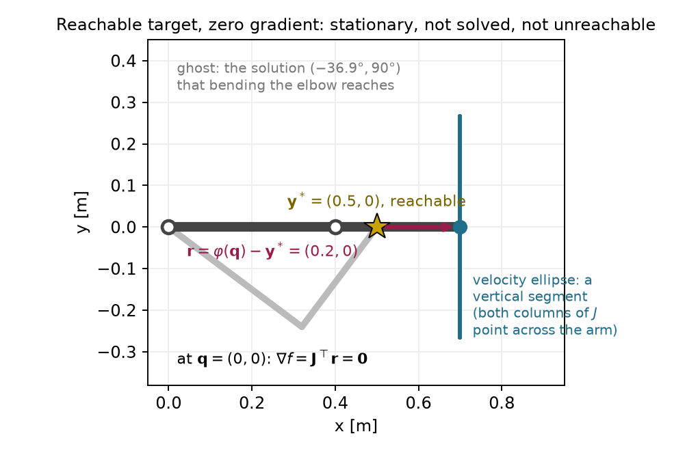
Perturbing the elbow to ten degrees lets a protected solve leave this start. With Armijo, the undamped method reaches the target in four accepted updates; the first accepted step is 1.81 rad. With damping 0.01 and full steps, the run needs eight updates, with every step below 0.84 rad. Unprotected Gauss–Newton takes an initial 7.26-rad step from the same perturbed start. A perturbation can expose useful first-order motion, but near-singular geometry still calls for step control.
Move the target to 0.7 m on the horizontal axis and restore the original 30- and 45-degree start. This target requires the fully stretched arm. The undamped run reaches the task tolerance after eleven updates. Its later iterates show a different pattern:
| Update i | Elbow angle (degrees) | Residual norm (m) |
|---|---|---|
| 4 | 14.764 | 5.73\times10^{-3} |
| 5 | 7.372 | 1.42\times10^{-3} |
| 6 | 3.684 | 3.54\times10^{-4} |
| 7 | 1.842 | 8.86\times10^{-5} |
| 8 | 0.921 | 2.21\times10^{-5} |
| 9 | 0.460 | 5.54\times10^{-6} |
| 10 | 0.230 | 1.38\times10^{-6} |
| 11 | 0.115 | 3.46\times10^{-7} |
The elbow angle approximately halves and the residual approximately divides by four. This is linear convergence: a roughly fixed fraction remains at each step. A factor of one quarter is fast compared with some linear rates, but it is still different from squaring the current error.
The arm’s radial distance follows directly from its two link vectors:
\lVert\varphi(\mathbf q)\rVert^2 =l_1^2+l_2^2+2l_1l_2\cos q_2.
Let the reach shortfall be the fully stretched length minus this distance. Multiplying by the sum of those distances gives
\begin{aligned} l_1+l_2-\lVert\varphi(\mathbf q)\rVert &=\frac{(l_1+l_2)^2-\lVert\varphi(\mathbf q)\rVert^2} {l_1+l_2+\lVert\varphi(\mathbf q)\rVert}\\ &=\frac{2l_1l_2(1-\cos q_2)} {l_1+l_2+\lVert\varphi(\mathbf q)\rVert}\\ &\approx\frac{l_1l_2}{2(l_1+l_2)}q_2^2. \end{aligned} \tag{2.32}
The last approximation uses the small-angle expansion of cosine and the fact that the tip distance approaches full reach. The radial miss is quadratic in the small elbow angle. For a scalar residual proportional to the square of a coordinate z, the local zero-residual update is
z_{\mathrm{new}}=z-\frac{z^2}{2z}=\frac{z}{2}, \qquad z\ne0.
This explains the observed angle-halving regime. Squaring a halved angle divides the associated radial miss by four. The solution’s Jacobian is singular, so the full-rank assumption behind the earlier quadratic convergence claim fails.
At update nine, the gradient norm is already about 8.6\times10^{-9}\ \mathrm{m^2/rad}, while the residual remains above the task tolerance. An absolute gradient threshold of that scale could stop too early. The relative test (2.31) allows the run to reach the task tolerance at update eleven. Fixed damping can make this regime much slower: with damping 0.01, the residual remains approximately 6.1\times10^{-4} m after sixty full updates as the weakest motion gain approaches zero.
The unconstrained two-link arm reaches precisely the annulus with radii 0.1 and 0.7 m. For the new target,
\mathbf y^*=\begin{bmatrix}0.8\\0.1\end{bmatrix}\ \mathrm m, \qquad\lVert\mathbf y^*\rVert=0.806\ \mathrm m>0.7\ \mathrm m.
This geometry proves unreachability. The closest attainable point lies on the outer circle along the target’s direction:
\mathbf p_c =0.7\frac{\mathbf y^*}{\lVert\mathbf y^*\rVert} \approx\begin{bmatrix}0.695\\0.087\end{bmatrix}\ \mathrm m. \tag{2.33}
The globally smallest residual norm is therefore 0.106 m. The stretched configuration with shoulder angle approximately 7.125 degrees attains it. This global statement follows from geometry, not from a solver status.
Starting from the original pose, plain Gauss–Newton nearly straightens the arm after two updates. Its third proposed step has norm 49.8 rad, and the run continues with large changes. If permitted to run long enough, the numerical guard fires at update 364 on a step of about 3,540 rad.
Step control changes the result, but different safeguards give different outcomes from this same start:
| Method | Reported outcome | Accepted updates | Residual norm (m) | Tip distance to \mathbf p_c |
|---|---|---|---|---|
| Undamped with Armijo, floor 10^{-6} | stalled on attempt 7 |
6 | 0.107 | 9.96\ \mathrm{mm} |
| Undamped with Armijo, floor 10^{-8} | stalled on attempt 10 |
9 | 0.107 | 9.96\ \mathrm{mm} |
| Damping 0.01, full steps | stationary |
29 | 0.106 | Below 10^{-5}\ \mathrm{mm} |
The stalled run has gradient norm about 8.7\times10^{-3}\ \mathrm{m^2/rad}, so its status cannot be read as stationarity. Its residual is only about 0.54 mm above the minimum, yet its tip is nearly 10 mm from the closest point. Both numbers matter because the residual varies slowly along this part of the reach boundary.
The distinction between a floor and a direction is visible in the last search of the first row. The first trial at or below the floor has scale 2^{-20}. It raises the cost by about 8.63\times10^{-9}\ \mathrm{m^2}, while Armijo requires a change no greater than -1.09\times10^{-10}\ \mathrm{m^2}. The implementation rejects the direction and stops. One further halving would pass:
\begin{array}{c|c|c} \alpha&\text{actual cost change}&\text{largest allowed change}\\\hline 2^{-21}&-5.61\times10^{-10}&-5.44\times10^{-11} \end{array}
This smaller trial makes a joint change of only about 8\times10^{-4} rad. The proposed direction is almost perpendicular to the downhill gradient, so the accepted progress remains poor. Lowering the floor to one trillionth allows a few more updates but still leaves the tip 9.96 mm from the closest point. The floor causes the stopping event; the direction explains the slow progress.
With damping 0.01, the run reaches the geometrically known closest point and passes the relative gradient test after 29 updates. Its final gradient norm is about 5.3\times10^{-10}\ \mathrm{m^2/rad}. Smaller damping is not automatically better: damping 0.001 produces fifty residual increases in one hundred unprotected updates on this target.
The regular, stationary and unreachable cases can be compared interactively using the states in Appendix B. Their different outcomes are consequences of the geometry and stopping criteria above.
The numerical example for this subsection is indexed in Appendix A (§2.5).
Answers. No. The reachable stationary example has exactly these features; its initial configuration is a saddle. A linear rate leaves a fixed fraction of the previous error, whereas a quadratic rate involves its square. At a stall the failed next attempt produces no new accepted configuration, so counting it as another iterate would misdescribe the history.
A stopping status describes what the run measured, while geometry determines what the task permits. The same distinction becomes more important for a redundant seven-joint arm.
The two-link example made every matrix small enough to inspect. We now use the same update on the seven-joint Franka Panda. Drake supplies its forward kinematics and Jacobian; the optimizer still solves the local least-squares system developed above. This comparison shows how to handle a rectangular Jacobian, check a local step, and interpret the final task error.
The task point in this example is the origin of the Panda’s flange
frame, panda_link8. It is not the center between the
fingertips. Positions and position residuals are expressed in the world
frame, with the robot base fixed at that frame. Joint coordinates are
radians, and the three task coordinates are meters. The separate Franka
Research 3 example uses its own model and tool offset; its frame names
are not interchangeable with these.
For this position-only task, the matrix shapes are
\mathbf q\in\mathbb R^7,\qquad \mathbf r\in\mathbb R^3,\qquad \mathbf J\in\mathbb R^{3\times7}.
At the ready pose the Jacobian has rank three. It maps seven possible joint increments into three independent flange translations. Four independent joint directions therefore produce no first-order flange translation. The normal matrix has seven rows and columns but the same rank three, because
\mathbf J^\top\mathbf J\mathbf v=\mathbf0 \quad\Longleftrightarrow\quad \lVert\mathbf J\mathbf v\rVert^2=0 \quad\Longleftrightarrow\quad \mathbf J\mathbf v=\mathbf0.
Thus the undamped normal equations have infinitely many minimizing steps. The minimum-norm pseudoinverse selects one of them. Positive damping instead makes the local system unique:
(\mathbf J^\top\mathbf J+\rho\mathbf I_7)\boldsymbol\delta =\mathbf J^\top(\mathbf y^*-\varphi(\mathbf q)). \tag{2.34}
No inverse of the rectangular Jacobian is taken. Damping does not add a posture preference to the original objective; here it penalizes the proposed increment only. A fixed-posture requirement would need the extra gradient derived in §2.4.
The first run starts from the model’s ready pose and asks the flange to move 10 cm in the world’s positive second coordinate and 5 cm downward. Damping is 0.001, and all steps are full proposals. The residual history is
0.112,\quad0.017,\quad3.68\times10^{-4},\quad 3.28\times10^{-6},\quad4.97\times10^{-8}\ \mathrm m.
Four updates reach the task tolerance. The late residual ratio is about 0.015, close to the local fixed-damping prediction 0.0158. The smallest local gain is about 0.250\ \mathrm{m/rad}, which gives this factor through (2.21). The rapid early improvement does not remove the damping term’s effect near the solution.
The second run starts from a nearly stretched horizontal posture. Its three position gains are approximately
0.942,\qquad0.810,\qquad0.095\ \mathrm{m/rad}.
The target is 5 cm along the weakest corresponding task direction. The smallest gain is nonzero, so this start still supports all three first-order translations. At the solved configuration the smallest gain is approximately 0.026 m/rad. With damping 0.001, the corresponding local residual factor is
\frac{0.001}{0.026^2+0.001}\approx0.60.
The exact computed gain gives 0.596, matching the late residual ratio. This run needs eighteen updates. Reducing damping to one hundred millionth, or choosing the minimum-norm pseudoinverse step, solves the same target in five updates. The eighteen-update count reflects damping along a weak direction; it does not reproduce the two-link arm’s exactly singular reach-boundary case.
Figure 2.4 shows the final configuration of the nearly stretched Panda run.
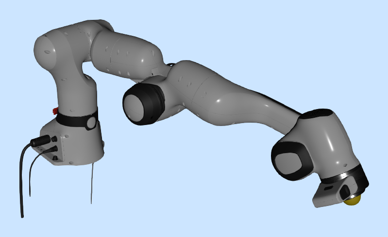
Each accepted update supplies two flange locations to compare. The local model at the preceding configuration predicts
\mathbf p_{\mathrm{pred}}^{(i)} =\varphi(\mathbf q^{(i-1)}) +\mathbf J(\mathbf q^{(i-1)}) (\mathbf q^{(i)}-\mathbf q^{(i-1)}). \tag{2.35}
The actual location in the kinematic model is obtained by evaluating forward kinematics at the new configuration. The prediction gap is
\lVert\mathbf p_{\mathrm{pred}}^{(i)}-\varphi(\mathbf q^{(i)})\rVert. \tag{2.36}
This measures the local model’s error for the accepted update. The task error instead measures distance from the actual flange to the target. Both are in meters, but they answer different questions.
In the Panda comparison, the first accepted update of run 2 has a prediction gap of 9.917 mm and a remaining task error of 14.614 mm. By update five, the gap is about 0.014 mm while the task error remains 0.610 mm. Run 3b reaches a much smaller prediction gap while retaining about 0.246 m of task error. Accurate prediction of a local update therefore does not imply task completion. Appendix B describes the replay and distinguishes rejected trial evaluations from accepted configurations.
Runs 3a and 3b request a displacement of 30 cm from the same stretched start along its weakest task direction. This particular flange target is unreachable by a geometric bound. The shoulder origin is at (0,0,0.333)\ \mathrm m, and the target is approximately (1.089,0,0.150)\ \mathrm m. The successive fixed distances from the shoulder origin through the joint origins to the flange are
0,\quad0.316,\quad0.0825,\quad0.393,\quad0,\quad0.088,\quad0.107\ \mathrm m.
Their sum is approximately 0.986\ \mathrm m. Joint rotations change the segment directions while preserving these lengths. The triangle inequality bounds shoulder-to-flange distance by their sum. The target is about 1.104\ \mathrm m from the shoulder, so every configuration has target error at least
1.104-0.986\approx0.118\ \mathrm m.
This upper bound on reach need not itself be attainable. It establishes unreachability of the target, without identifying the smallest possible task error.
With damping 0.001 and full steps, run 3a makes changes between about 0.9 and 4.2 rad and fails to settle within forty updates. Its final residual is about 1.61 m. Adding Armijo in run 3b produces forty accepted updates and 163 rejected trial evaluations. No search reaches the rejection floor, but the run exhausts its iteration budget. Its final measurements are
\lVert\mathbf r\rVert=0.246\ \mathrm m,\qquad \lVert\nabla f\rVert\approx7.5\times10^{-4}\ \mathrm{m^2/rad},
\lVert\mathbf s\rVert=0.003\ \mathrm{rad}.
The outcome is limit. The run is neither stalled by the
floor nor stationary to the stated tolerance. It is still changing
slowly.
An adaptive-damping run provides a numerical stationary reference with residual approximately 0.246 m and gradient norm about 1.2\times10^{-9}\ \mathrm{m^2/rad}. Run 3b’s final residual is only about 9.1\times10^{-7}\ \mathrm m larger, and its flange is about 0.6 mm from that reference flange. These comparisons are useful, but they do not prove that the reference is globally closest. The geometric bound above proves unreachability of this target, while the reference solve supplies evidence about a particular stationary branch.
The position-error cost has no term that enforces joint limits. The Panda model contains joint bounds, but evaluating its kinematics does not add those bounds to this optimization problem. Run 3a ends with joint 2 at about 4.06 rad, beyond its declared upper bound of about 1.76 rad. Nothing in (2.34) prevents that update.
The same issue can be studied exactly on the two-link arm. Both configurations that reach the original target require an elbow magnitude of about 80.4 degrees. Add a physical elbow stop at 60 degrees. A simple attempted repair is to compute an unconstrained step and then clip the elbow coordinate to its permitted interval. Repeating that operation gives
\mathbf q\approx\begin{bmatrix}-16.397^\circ\\60^\circ\end{bmatrix}, \qquad\lVert\varphi(\mathbf q)-\mathbf y^*\rVert=0.146\ \mathrm m.
Clipping returns the same configuration after each further proposed
update. This is a fixed point of the clipped iteration; it is not the
line-search status stalled defined in §2.5.
We can show that a better permitted configuration exists. With elbow magnitude at most 60 degrees, the shortest attainable tip radius is
\sqrt{l_1^2+l_2^2+2l_1l_2\cos60^\circ} =0.608\ \mathrm m.
The target radius is 0.539 m. Pointing the arm toward the target with the elbow at either stop leaves only 6.976\times10^{-2} m of error. The clipped fixed point therefore has approximately 4.40 times the squared-error cost of the best permitted configuration. Clipping can enforce this bound on a proposed answer without solving the constrained optimization problem.
An obstacle raises the same formulation issue: a position-error cost contains no requirement to keep the links away from a table or object. Damping bounds a local proposal in the manner of (2.20), but it does not create a collision constraint. Even collision-free endpoints would not establish that moving between them is safe.
The next part writes allowed joint values, obstacle clearance and exact task requirements into the optimization problem. That lets the solver choose a step with the constraints in view, and lets the stopping report distinguish task error from constraint violation.
The numerical example for this subsection is indexed in Appendix A (§2.6).
Answers. Positive damping adds curvature in the four null directions as well as the task-visible directions, making the normal matrix positive definite. A small prediction gap establishes that the local model accurately predicted that accepted update; target completion, feasibility and global optimality remain separate questions. The clipped result has substantially larger task cost than another allowed configuration, so respecting the bound alone does not establish a constrained minimum.
The task cost alone leaves geometric requirements unenforced. The next part writes those requirements as constraints and develops methods that account for them.
The unconstrained arm reached the target by bending its elbow about eighty degrees. Suppose the elbow may bend only sixty degrees in either direction. We now need the closest tip position among the allowed configurations. A configuration with a slightly smaller task error is unacceptable if it exceeds the joint range.
The clipping experiment at the end of §2.6 suggests a simple attempt. Compute a Gauss–Newton update, then replace any elbow angle outside the range by the nearest limit. That iteration settles near
\mathbf q_{\mathrm{clip}}= \begin{bmatrix}-16.397^\circ\\60^\circ\end{bmatrix}, \qquad \|\varphi(\mathbf q_{\mathrm{clip}})-\mathbf y^*\| \approx0.146\ \mathrm m.
The configuration respects the range, but its first joint remains free to move. At this point the cost gradient is approximately
\nabla f(\mathbf q_{\mathrm{clip}})= \begin{bmatrix}-0.073\\-0.044\end{bmatrix} \ \mathrm{m^2/rad}.
A small positive first-joint increment lowers the cost while leaving the elbow at its limit. For example, its first-order cost change for a one-milliradian first-joint increment is
\nabla f^\top \begin{bmatrix}0.001\\0\end{bmatrix} \approx-7.32\times10^{-5}\ \mathrm{m^2}.
Thus clipping has stopped at an allowed point that still has an allowed improvement. The update rule needs to account for the constraint while choosing the configuration. Section 3.4 derives the best allowed answer and its multiplier.
A constraint function reports whether a candidate is allowed. We use a nonpositive value for an inequality and zero for an equality. With a decision vector of dimension d, the problem becomes
\begin{aligned} \min_{\mathbf z\in\mathbb R^d}\quad&f(\mathbf z),\\ \text{subject to}\quad&g_i(\mathbf z)\le0, \qquad i=1,\ldots,m,\\ &h_j(\mathbf z)=0, \qquad j=1,\ldots,l. \end{aligned}\tag{3.1}
The numbers m and l count scalar inequalities and equalities. This is a nonlinear program. The cost ranks candidates; the constraints define the feasible set, which contains every allowed candidate. In this chapter the decision vector is one configuration. Motion optimization with KOMO will stack many configurations in the same form.
| Requirement | Function whose sign or zero is checked |
|---|---|
| Joint j does not exceed its upper limit. | g=q_j-q_j^{\max} |
| Joint j does not fall below its lower limit. | g=q_j^{\min}-q_j |
| A point stays outside a circular obstacle. | g=r_o-\|\mathbf p(\mathbf q)-\mathbf c_{\mathrm{obs}}\| |
| The tip reaches a specified position exactly. | \mathbf h=\varphi(\mathbf q)-\mathbf y^* |
Each component of the last row is a separate equality. An obstacle radius or clearance margin must include the geometry that the model claims to protect. The point constraint alone does not protect an entire robot link. The subscript “obs” identifies the obstacle center and keeps it distinct from the Armijo constant.
A hard equality and a squared task-error cost ask different questions. A task cost allows nonzero error at its minimum. A hard equality declares that error infeasible. If no allowed configuration satisfies the equality, the nonlinear program has no feasible solution. A local solver’s failure alone does not establish that geometric fact.
The first-order change in an inequality is
g(\mathbf q+\Delta\mathbf q) \approx g(\mathbf q)+\nabla g(\mathbf q)^\top\Delta\mathbf q.
At an upper elbow limit, the gradient points toward increasing elbow angle:
g_1=q_2-\frac{\pi}{3},\qquad \nabla g_1=\begin{bmatrix}0\\1\end{bmatrix}.
Changing the elbow by minus one degree changes the constraint by about -0.0175\ \mathrm{rad}, toward the allowed side. All solver calculations use radians, even when a table displays degrees.
For clearance, first differentiate distance with respect to the point position. Away from the obstacle center, define the outward unit vector and point Jacobian by
\hat{\mathbf n}= \frac{\mathbf p-\mathbf c_{\mathrm{obs}}} {\|\mathbf p-\mathbf c_{\mathrm{obs}}\|}, \qquad \mathbf J_p=\frac{\partial\mathbf p}{\partial\mathbf q}.
Moving the point outward increases distance, so it decreases the clearance constraint. Applying the chain rule gives
\nabla g=-\mathbf J_p^\top\hat{\mathbf n}, \qquad \frac{\partial g}{\partial\mathbf q}=-\hat{\mathbf n}^\top\mathbf J_p.
The first expression is a column gradient; the second is the corresponding Jacobian row. For a 0.1-meter obstacle and a point 0.15 meters from its center, the constraint value is minus 0.05 meters. Moving directly outward by 0.01 meters changes it to minus 0.06 meters. Reversing the sign of the constraint would declare the obstacle’s interior feasible.
The numerical example for this subsection is indexed in Appendix A (§3.1).
Why is clipping insufficient in this example? What sign should a feasible inward elbow change give? Does a small task-error cost establish feasibility of an exact target?
Answers. The clipped point has a feasible descent direction in its first joint. An inward elbow change decreases the active upper-limit function. A small cost establishes only small error; an exact target must satisfy its equality, to a stated numerical tolerance in an implementation.
Clipping can restore a coordinate bound while leaving an available cost decrease. To identify a constrained answer, we next examine the gradient balance at an active boundary.
We can understand an active joint limit through a simpler geometric problem. Choose the point inside a unit disc that lies closest to a target. These coordinates are dimensionless:
f(\mathbf z)=\tfrac12\|\mathbf z-\mathbf z_t\|^2, \qquad g(\mathbf z)=\|\mathbf z\|-1\le0.
Here \mathbf z_t is a fixed target. Its subscript labels the target and does not index time.
If the target lies inside the disc, it is already the answer. If the target lies outside, the answer lies on the boundary. An inequality is active at a point where its value is zero and inactive where its value is negative.
Figure 3.1 locates the optimum for targets inside and outside the disc.
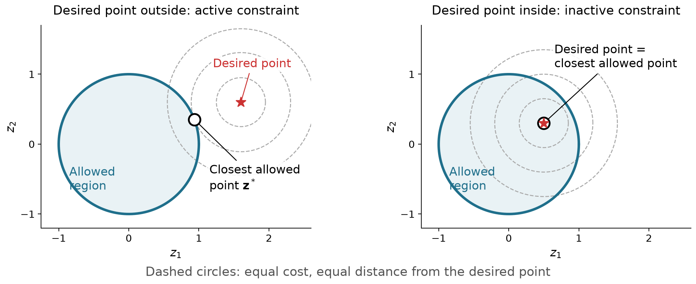
At the outside-target solution, the cost gradient does not vanish. Moving directly toward the target would lower the cost but leave the feasible set. The correct local condition must consider only feasible movements.
Assume a differentiable scalar inequality is active at a local minimum and has a nonzero gradient there. Suppress the evaluation point while deriving the balance. A strictly inward direction satisfies
\nabla g^\top\mathbf d<0.
For a sufficiently small positive scale this direction enters the feasible set. A local minimum therefore requires
\nabla f^\top\mathbf d\ge0.
The same inequality holds for a tangent direction by taking a limit of directions with a small inward component. A straight tangent step on a curved boundary need not itself be feasible, which is why this limiting argument is needed.
Split the cost gradient into a component parallel to the constraint gradient and a perpendicular component:
\nabla f=a\nabla g+\mathbf w_{\mathrm{tan}}, \qquad \mathbf w_{\mathrm{tan}}^\top\nabla g=0.
The tangent direction opposite the perpendicular component gives
\mathbf d=-\mathbf w_{\mathrm{tan}} \quad\Longrightarrow\quad \nabla f^\top\mathbf d=-\|\mathbf w_{\mathrm{tan}}\|^2.
A local minimum requires this derivative to be nonnegative. Consequently that perpendicular component must be zero. The cost gradient must be parallel to the constraint gradient. Now test the inward normal:
\mathbf d=-\nabla g \quad\Longrightarrow\quad \nabla f^\top\mathbf d=-a\|\nabla g\|^2\ge0.
The coefficient a must be nonpositive. Defining its negative as \lambda produces
\nabla f+\lambda\nabla g=\mathbf0, \qquad \lambda\ge0.\tag{3.2}
The coefficient is a Lagrange multiplier. The two negative-gradient arrows balance: the attempted downhill movement points out, and the constraint correction points in. This is an optimization balance; its arrows do not represent measured physical contact forces.
Figure 3.2 shows the opposing gradients at the boundary solution.
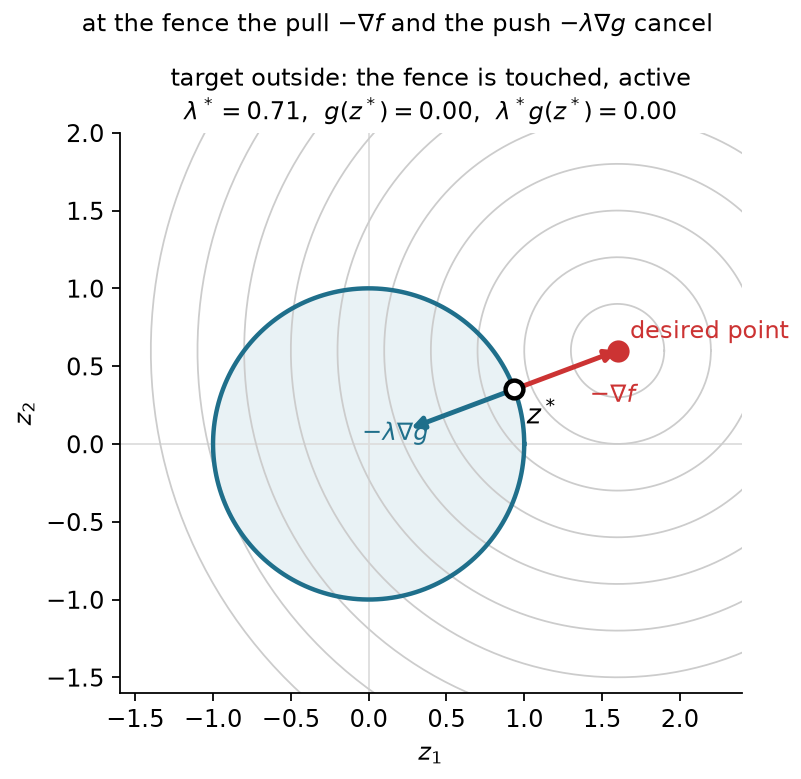
An inactive inequality leaves a neighborhood unconstrained. There the usual zero-gradient condition applies, and its multiplier can be zero. An active inequality can also have zero multiplier. A target exactly on the circle has zero cost gradient even though the boundary is touched.
Outside the disc, substitute the cost and constraint gradients into (3.2):
(\mathbf z^*-\mathbf z_t) +\lambda\frac{\mathbf z^*}{\|\mathbf z^*\|}=\mathbf0, \qquad \|\mathbf z^*\|=1.
Using the unit norm gives a scalar rescaling of the target:
(1+\lambda)\mathbf z^*=\mathbf z_t, \qquad 1+\lambda=\|\mathbf z_t\|.
Combine this result with the inside case:
\mathbf z^*= \frac{\mathbf z_t}{\max(1,\|\mathbf z_t\|)}, \qquad \lambda^*=\max(0,\|\mathbf z_t\|-1).
| Target | Closest feasible point | Multiplier | Constraint value |
|---|---|---|---|
| (2,0) | (1,0) | 1 | 0 |
| (1.2,0.9) | (0.8,0.6) | 0.5 | 0 |
| (0.5,0.3) | (0.5,0.3) | 0 | -0.417 |
The multiplier equals distance outside the disc for this half-squared-distance cost and this unit-length boundary gradient. Rescaling the constraint changes the multiplier. For example, doubling the constraint function leaves the feasible set unchanged but halves its multiplier so that (3.2) stays the same. Section 3.4 gives the more general interpretation as sensitivity of optimal cost.
Moving the target continuously through the unit circle changes which constraint is active. The multiplier remains continuous in this example and equals zero at the crossing. Appendix B gives the interactive comparison; Figures 3.1–3.2 and the table show the same geometry.
The numerical example for this subsection is indexed in Appendix A (§3.2).
Can an active inequality have zero multiplier? Why must an inequality multiplier be nonnegative? Would multiplying the constraint function by two double the multiplier?
Answers. Yes; a target on the circle supplies an example. The sign follows from testing an inward direction at a local minimum. Doubling the gradient halves the multiplier for the same balance; it does not change the feasible set.
An active inequality contributes a nonnegative normal correction. An equality rail permits corrections of either sign, which leads to the full constrained conditions.
An exact task restricts motion to a surface. A simple example is a point that must stay on a line while approaching a target. Both sides of the line are forbidden, so the multiplier needs to balance a cost that may pull toward either side.
At a regular point of a scalar equality, first-order feasible directions obey
h(\mathbf z^*)=0, \qquad \nabla h(\mathbf z^*)^\top\mathbf d=0, \qquad \nabla h(\mathbf z^*)\ne\mathbf0.
Both a tangent direction and its negative can be velocities of feasible curves through the point. At a local minimum neither can give a negative directional derivative. Therefore
\nabla f^\top\mathbf d\ge0, \qquad \nabla f^\top(-\mathbf d)\ge0 \quad\Longrightarrow\quad \nabla f^\top\mathbf d=0.
The cost gradient has no tangent component. It is a multiple of the equality gradient:
\nabla f+\kappa\nabla h=\mathbf0, \qquad \kappa\in\mathbb R.
The equality multiplier has no sign restriction. Unlike an inequality, an equality is imposed at every feasible point, so it has no complementarity condition.
Retain the disc example’s cost but replace its inequality by the normalized line
h(\mathbf z)=\frac{z_1+z_2-1}{\sqrt2}=0, \qquad \mathbf n=\nabla h= \frac1{\sqrt2}\begin{bmatrix}1\\1\end{bmatrix}.
Stationarity expresses the closest point as the target minus a normal correction:
\mathbf z^*=\mathbf z_t-\kappa\mathbf n.
Substitute into the line equation. Because the normal has unit length,
0=h(\mathbf z_t)-\kappa\mathbf n^\top\mathbf n =h(\mathbf z_t)-\kappa.
Thus the multiplier equals the target’s signed distance to the line:
\kappa^*=h(\mathbf z_t), \qquad \mathbf z^*=\mathbf z_t-h(\mathbf z_t)\mathbf n.
| Target | Multiplier | Closest point on the line |
|---|---|---|
| (1.6,0.6) | +0.849 | (1,0) |
| (-0.3,-0.4) | -1.202 | (0.55,0.45) |
Both signs are correct. If the line were instead an inequality with its nonpositive side allowed, the second target would already be feasible and its inequality multiplier would be zero.
Changing the line from an inequality boundary to an equality rail shows why only the equality multiplier can have either sign. The table gives both cases; Appendix B describes the interaction.
With several constraint functions, each scalar row has its own multiplier. For example, a position target in three dimensions supplies three equality rows. The constraint Jacobian stacks their transposed gradients, just as the task Jacobian stacks coordinate derivatives.
Assume the cost and constraints are continuously differentiable near a local minimum. A sufficient regularity assumption is that the equality gradients and the active inequality gradients are linearly independent there. This is the linear independence constraint qualification. Under it, multipliers exist that satisfy the following four conditions:
\begin{aligned} \mathbf0&=\nabla f(\mathbf z^*)+ \sum_{i=1}^m\lambda_i\nabla g_i(\mathbf z^*)\\ &\quad+\sum_{j=1}^l\kappa_j\nabla h_j(\mathbf z^*),\\ g_i(\mathbf z^*)&\le0,\qquad h_j(\mathbf z^*)=0,\\ \lambda_i&\ge0,\qquad\lambda_i g_i(\mathbf z^*)=0. \end{aligned}\tag{3.3}
They are the Karush–Kuhn–Tucker (KKT) conditions. Stationarity balances the gradients. Primal feasibility checks the original requirements. Dual feasibility checks the inequality-multiplier signs. Complementarity prevents an inactive inequality from contributing a nonzero multiplier. The equality multipliers remain unrestricted.
The one-boundary derivations explain the signs and geometry. The general many-constraint necessity result also requires a theorem about linear inequalities, usually expressed through Farkas’ lemma. Its proof is optional reference material here. Linear independence is sufficient; other constraint qualifications can apply when it fails.
These first-order conditions do not establish a minimum in a nonconvex problem. The arm pointing straight toward the reachable target and extending past it, near
\mathbf q=\begin{bmatrix}21.801^\circ\\0^\circ\end{bmatrix},
is the saddle from §2.1. Both sixty-degree elbow inequalities are inactive. The zero cost gradient and zero multipliers satisfy all four conditions, although a nearby bend can lower the cost.
The qualification also matters. The stretched arm at the exact outer-boundary target has a position Jacobian of rank one, so its two position-equality gradients are dependent. Locally its exact target can allow only the stretched configuration, yet a posture cost can have a gradient outside the equality gradients’ span. Then the point is a constrained minimum without multipliers that satisfy stationarity. This does not contradict the qualified KKT result.
Which multiplier may be negative? Why is there no complementarity test for an equality? Does passing all four tests establish a minimum?
Answers. An equality multiplier may have either sign. An equality must hold at every feasible point and has no inactive case. KKT conditions are necessary under a constraint qualification; the straight-arm saddle shows why they are not a general sufficiency test.
The four conditions describe a qualified constrained minimum through feasibility and gradient balance. We next use active constraints to compute that balance and interpret its coefficients.
The KKT balance gives a geometric description of all constraints acting at a candidate. A nonnegative weighted sum of vectors belongs to their cone. A weighted sum whose coefficients may have either sign belongs to their span. Stationarity says
-\nabla f\in \operatorname{cone}\{\nabla g_i:g_i=0\} +\operatorname{span}\{\nabla h_j\}.
The multipliers are precisely these weights. Complementarity determines which inequality weights can be nonzero. If an inequality has negative value, its multiplier must vanish. A zero multiplier alone does not tell us whether its constraint is touched.
The cost and multiplier terms can be combined into the Lagrangian:
L(\mathbf z,\boldsymbol\lambda,\boldsymbol\kappa) =f(\mathbf z)+\boldsymbol\lambda^\top\mathbf g(\mathbf z) +\boldsymbol\kappa^\top\mathbf h(\mathbf z). \tag{3.4}
Holding the multipliers fixed and differentiating with respect to the decision vector gives the stationarity equation. This scalar packages the balance; a constrained minimum need not minimize it over arbitrary configurations. The relevant curvature test for constrained optimality concerns feasible tangent directions. Section 3.6 will add squared terms to help an inner minimization handle the constraint-normal directions too.
Return to the task cost and both elbow limits:
\begin{aligned} f(\mathbf q)&=\tfrac12\|\varphi(\mathbf q)-\mathbf y^*\|^2, \qquad \mathbf y^*=\begin{bmatrix}0.5\\0.2\end{bmatrix}\ \mathrm m,\\ g_1(\mathbf q)&=q_2-b\le0,\qquad g_2(\mathbf q)=-b-q_2\le0,\qquad b=\pi/3. \end{aligned}
Without the range restriction, the cosine rule gives
\cos q_2= \frac{\|\mathbf y^*\|^2-l_1^2-l_2^2}{2l_1l_2} =\frac16, \qquad q_2\approx\pm80.406^\circ.
Each unconstrained solution violates one limit. On the allowed elbow interval, the tip radius is smallest at either endpoint. That smallest radius still exceeds the target radius, so both constrained solutions use an endpoint. Consider the positive-elbow branch first.
Expanding the trigonometric sums separates the first-joint rotation:
\varphi(\mathbf q)= \begin{bmatrix}\cos q_1&-\sin q_1\\\sin q_1&\cos q_1\end{bmatrix} \begin{bmatrix}l_1+l_2\cos q_2\\l_2\sin q_2\end{bmatrix}.
For a fixed elbow, the inner vector has a fixed length and angle. Denote that angle by \psi:
R(q_2)=\sqrt{l_1^2+l_2^2+2l_1l_2\cos q_2}, \qquad \psi(q_2)=\operatorname{atan2}(l_2\sin q_2,l_1+l_2\cos q_2).
The tip therefore travels on a circle as the first joint changes. Its closest point to the target has the target’s polar angle. At the upper limit,
\begin{aligned} R(b)&=\sqrt{0.37}=0.608\ \mathrm m,\\ \|\mathbf y^*\|&=\sqrt{0.29}=0.539\ \mathrm m,\\ q_1^*&=\operatorname{atan2}(0.2,0.5)-\psi(b) =-3.484^\circ,\\ q_2^*&=60^\circ. \end{aligned}
The tip and cost follow directly:
\begin{aligned} \varphi(\mathbf q^*)&\approx \begin{bmatrix}0.565\\0.226\end{bmatrix}\ \mathrm m, \\ \|\mathbf r\|&=6.976\times10^{-2}\ \mathrm m,\\ f^*&\approx2.433\times10^{-3}\ \mathrm{m^2}. \end{aligned}
Figure 3.3 compares the exact-target and elbow-limited configurations.
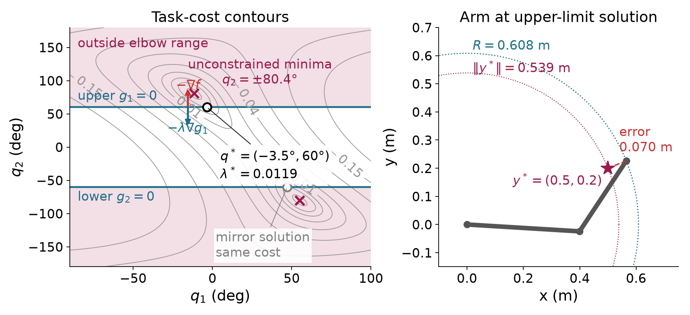
The upper-limit gradient acts only in the second joint. Thus stationarity requires a zero derivative in the free first joint and gives the multiplier from the derivative with respect to the second joint:
\begin{aligned} \nabla f(\mathbf q^*)&\approx \begin{bmatrix}0\\-1.192\times10^{-2}\end{bmatrix}\ \mathrm{m^2/rad}, \\ \lambda_1^*&=-\frac{\partial f}{\partial q_2} \approx1.192\times10^{-2}\ \mathrm{m^2/rad}. \end{aligned}
The lower inequality is inactive, so its multiplier is zero. Independently, differentiating the radial optimum gives the same number:
\begin{aligned} f^*(b)&=\tfrac12\bigl(R(b)-\|\mathbf y^*\|\bigr)^2,\\ R'(b)&=-\frac{l_1l_2\sin b}{R(b)},\\ \frac{df^*}{db} &=-\frac{\bigl(R(b)-\|\mathbf y^*\|\bigr)l_1l_2\sin b}{R(b)} =-\lambda_1^*. \end{aligned}
The negative-elbow solution is approximately
\mathbf q^*=\begin{bmatrix}47.086^\circ\\-60^\circ\end{bmatrix}.
It has the same cost, with the lower inequality active. Its constraint gradient has second component minus one, and its cost derivative has positive second component, so the lower multiplier has the same positive magnitude.
The clipped configuration from §3.1 lies on the same upper boundary but has about 4.4 times the optimal cost. Its nonzero first-joint derivative explains the failure without comparing solver labels.
If the active inequalities were known in advance, we could replace them by equalities, set the other multipliers to zero, and solve stationarity together with the active constraints. For active inequality set \mathcal A and l equalities, this gives d+|\mathcal A|+l equations in the decision vector and retained multipliers. The resulting nonlinear system can still have multiple solutions or fail to have one. Every candidate must pass the omitted inequalities and multiplier sign checks. There are potentially 2^m active-set choices, which motivates methods that discover activity while solving.
For a general constraint, relax its bound to a scalar parameter b:
g(\mathbf z)\le b.
Assume a smooth local solution branch with the same active set. At its active constraint, differentiating with respect to the bound yields
g(\mathbf z^*(b))=b \quad\Longrightarrow\quad \nabla g^\top\frac{d\mathbf z^*}{db}=1.
Combine the cost chain rule with stationarity:
\frac{df^*}{db} =\nabla f^\top\frac{d\mathbf z^*}{db} =-\lambda\nabla g^\top\frac{d\mathbf z^*}{db} =-\lambda.\tag{3.5}
Other active constraints with fixed bounds contribute zero because their derivatives along this branch vanish. An equality bound has the same derivation with its signed multiplier. The units of a multiplier are cost units divided by its constraint units.
For the upper elbow limit, a one-degree relaxation gives
\Delta f^*\approx -1.192\times10^{-2}\frac{\pi}{180} =-2.080\times10^{-4}\ \mathrm{m^2}.
Recomputing the optimum at sixty-one degrees gives
f^*(61^\circ)\approx2.228\times10^{-3}\ \mathrm{m^2}, \qquad \Delta f^*\approx-2.051\times10^{-4}\ \mathrm{m^2}.
The difference is the finite-change error of a local derivative. The two-sided problem also has a branch qualification: relaxing only the upper limit favors the positive branch. Tightening only that limit lets the global solution switch to the equally good negative branch. The globally selected cost has a kink at the tie, although each local branch has its own derivative.
In the disc explorer, the Sensitivity price readout applies the same rule to a radius increase. For the target (1.2,0.9), increasing the radius from 1 to 1.1 changes cost from 0.125 to 0.080. The multiplier predicts a change of minus 0.050, whereas the exact change is minus 0.045. This is again a finite change, not an exact derivative identity for every bound shift.
Optional reference on the Lagrangian. At the upper-elbow solution, shift the second joint down by one full revolution. FK and the objective return to the same values, but the multiplier term falls by
2\pi\lambda_1^*\approx7.489\times10^{-2}\ \mathrm{m^2}.
The Lagrangian is therefore unbounded below over unrestricted joint coordinates. This example explains why its stationary balance cannot be replaced by an unrestricted global minimization of the Lagrangian.
The numerical example for this subsection is indexed in Appendix A (§3.4). The same geometric test gives an unconstrained elbow of 56.49^\circ for a different target; that angle is inside the permitted range, so its limit is inactive.
Why is the lower-limit multiplier positive even though its gradient points toward decreasing elbow angle? What does a multiplier predict about a small relaxation? Why must a sensitivity check state its branch?
Answers. Its positive coefficient balances a positive second component of the cost gradient against the constraint gradient’s negative component. A small relaxation changes the optimal cost by approximately minus the multiplier times the relaxation. A different branch or active set can change that derivative or make the globally selected value nonsmooth.
A multiplier measures the local cost of changing a requirement. We next apply that interpretation to an exact target and a posture preference on the Panda.
The elbow example minimized task error because the exact target was impossible within the stated range. A redundant arm can pose a different question: among configurations that reach the target exactly and respect the constraints, which stays closest to a fixed reference posture?
The change is in the problem definition. The target residual becomes an equality, and posture deviation becomes the cost:
\begin{aligned} \min_{\mathbf q}\quad& \tfrac12(\mathbf q-\mathbf q_{\mathrm{ref}})^\top \mathbf D(\mathbf q-\mathbf q_{\mathrm{ref}}),\\ \text{subject to}\quad& \varphi(\mathbf q)-\mathbf y^*=\mathbf0,\\ &\mathbf q^{\min}-\mathbf q\le\mathbf0, \qquad \mathbf q-\mathbf q^{\max}\le\mathbf0,\\ &r_o-\|\mathbf p_p(\mathbf q)-\mathbf c_{\mathrm{obs}}\|\le0. \end{aligned}\tag{3.6}
The point index p selects the modeled collision points. The matrix \mathbf D is a fixed positive-definite posture weight. Its reference stays fixed during the solve. The proposed-step penalty of §2.3 instead measures an increment from the changing current iterate. These terms have different stationary conditions and different purposes.
The two-link arm with the sixty-degree range would make this exact-target program infeasible for the running target. Its reachable radii lie between 0.608 and 0.700 meters, while the target radius is 0.539 meters. We have a geometric proof in that example. A failed solve would not supply the proof.
A robot-modeling library supplies the kinematics and their
derivatives, and a numerical solver builds quadratic approximations of
the constrained problem. This method is called sequential quadratic
programming. The example uses the Drake library and the solver SNOPT.
Its objective has identity posture weights, its reference is the fixed
ready posture, and its task point is the flange origin,
panda_link8, expressed in world coordinates:
f(\mathbf q)=\tfrac12\|\mathbf q-\mathbf q_{\mathrm{ready}}\|^2.
The cost is in squared radians. Three target equalities are in meters. The model’s seven lower and seven upper joint bounds are in radians. In the obstacle run, the whole arm must remain outside a sphere. Drake’s Panda model describes the arm’s body by 44 collision spheres on links 1 to 8. Collision sphere p has center \mathbf p_p(\mathbf q) and radius r_p, and one inequality per sphere keeps it outside the obstacle:
r_o+r_p-\|\mathbf p_p(\mathbf q)-\mathbf c_{\mathrm{obs}}\|\le0.
The spheres approximate the robot’s surface, and self-collision is not modeled. A single sampled point is the case r_p=0, which constrains only that point.
Figure 3.4 shows the exact flange target and the forearm resting on the obstacle.
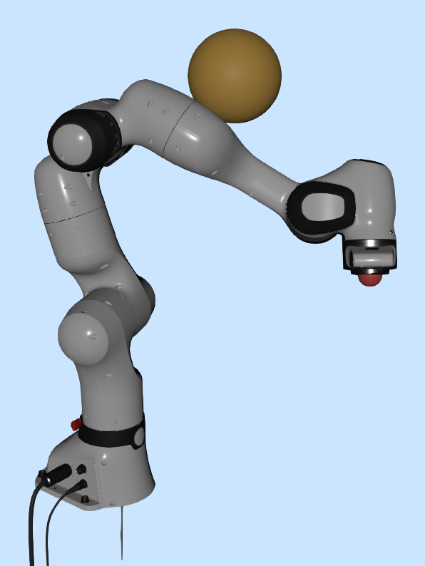
| Run | Target in meters | Active inequality | Posture cost in squared radians |
|---|---|---|---|
| 1 | (0.45,0.10,0.45), without sphere | None | 0.209 |
| 2 | (-0.20,0,0.60) | Joint 2 at its lower bound | 1.499 |
| 3 | Run 1 target, with sphere | Two collision spheres of link 5 at the obstacle | 0.364 |
For run 3 the sphere center and radius are
\mathbf c_{\mathrm{obs}}=(0.175,0.15,0.75)^\top\ \mathrm m, \qquad r_o=0.08\ \mathrm m.
The sphere sits above the elbow. Run 1’s answer for this target would push the forearm, link 5, 26.9 millimeters into it. With the clearance rows in place, the arm bends around the obstacle, and two collision spheres of link 5 end on its surface. Every other row is inactive; the nearest, on link 4, is 6.7 millimeters clear. The obstacle raises the posture cost from 0.209 to 0.364 because the arm must adopt a less preferred configuration.
Run 1 has no active inequality, but its target equality has nonzero multipliers:
\boldsymbol\kappa\approx (-2.071,-0.675,0.706)^\top\ \mathrm{rad^2/m}.
The equality is flange position minus target position. Increasing the target’s world x coordinate by one millimeter predicts
\Delta f^*\approx-\kappa_x(0.001) =+2.071\times10^{-3}\ \mathrm{rad^2}.
The independently resolved program changes cost by approximately 2.08\times10^{-3} squared radians. The sign says that moving this target farther in world x is locally more expensive in posture deviation.
Run 2 uses a start whose first joint is 0.01 radians above the ready posture. Its objective reference remains the unmodified ready posture. The answer is approximately
\mathbf q^*=\begin{bmatrix} 0.856\\-1.763\\0.422\\-2.214\\0.156\\0.529\\0.785 \end{bmatrix}\ \mathrm{rad}.
Joint 2 touches its lower bound. If \mathbf e_2 selects that coordinate, its inequality gradient is negative \mathbf e_2, so stationarity is
(\mathbf q^*-\mathbf q_{\mathrm{ready}}) +\mathbf J^\top\boldsymbol\kappa-\lambda\mathbf e_2=\mathbf0.
This is a seven-row linear system for four unknown multipliers when the configuration and active set are fixed. Solving it by least squares gives
\lambda\approx1.053\ \mathrm{rad}, \qquad \boldsymbol\kappa\approx(2.098,4.281,6.107)^\top \ \mathrm{rad^2/m}.
The residual norm of this fitted balance is approximately 3.5\times10^{-6}\ \mathrm{rad} in this run. Tightening the lower bound by 0.001 radians raises cost by approximately 1.05\times10^{-3} squared radians, matching the multiplier prediction. This perturbation reuses the answer as the start so that the comparison follows the same local branch.
Run 3’s two active distance-form multipliers are approximately 0.793 and 7.933\ \mathrm{rad^2/m}. The implementation obtains a raw multiplier for a squared-distance bound. At contact, differentiating squared distance gives an extra factor of twice the contact distance r_o+r_p. For the sphere with r_p=0.060 m, the raw value 2.832 times 0.28 gives 0.793. For the sphere with r_p=0.055 m, the raw value 29.383 times 0.27 gives 7.933. Both rows contain r_o, so growing the obstacle’s radius by one millimeter predicts a cost increase of (0.793+7.933)(0.001)=8.73\times10^{-3} squared radians. The re-solved program changes cost by 8.84\times10^{-3}. Comparing multipliers across formulations requires this scale conversion as well as a sign check. Drake’s equality duals have the opposite sign to our \boldsymbol\kappa; its raw upper-bound duals have the opposite sign to our \lambda. The numerical perturbations check the equality-dual sign and one active lower-bound sign. The upper-bound sign follows from the declared constraint convention; the obstacle value above uses the squared-distance scale conversion.
The run-2 target lies in the robot’s symmetry plane. From the exactly symmetric ready posture, SNOPT returns a different stationary configuration with cost 1.729. It passes the first-order checks but is a constrained saddle. The small asymmetric starting offset makes the lower-cost run reproducible. A mirrored answer has the same cost and the opposite sign of the y equality multiplier. The whole iteration determines the branch; a different small offset need not select the side suggested by its sign.
Optional reference. The implementation differentiates the Lagrangian gradient and restricts its Hessian to directions that preserve the active constraints. At the symmetric point, this reduced matrix has an eigenvalue near minus 1.40, identifying feasible negative curvature. At the asymmetric answer its eigenvalues are approximately 0.677, 1.000 and 1.090. This supports local minimality under the stated regularity conditions and the accuracy of the numerical derivatives. It is not a global-optimality result.
Changing the target changes the active link and may remove all active inequalities. An exact target inside the forbidden sphere is geometrically impossible. Appendix B compares these cases; Figure 3.4 and the solution table provide the fixed-target example.
The numerical example for this subsection is indexed in Appendix A (§3.5).
Why can a run with no active inequalities still have nonzero multipliers? Why does tightening the lower bound raise cost in run 2? Does a failed solve establish that the target is impossible?
Answers. The target equalities still contribute their signed multipliers. The positive lower-bound multiplier measures the local cost of that tightening. A failed local solve establishes only that this run did not find a feasible point. The target-inside-sphere case has a separate geometric contradiction.
The hard-target program defines the required configuration and its local prices. We next construct iterative methods that approach feasibility and learn those prices.
The Panda program specifies an answer without specifying how to find it. We now construct methods that reuse the unconstrained optimization machinery. An inner solve changes the decision vector for a fixed auxiliary objective. An outer update changes weights or multipliers before the next inner solve. The two-link elbow problem supplies the same numerical comparison for all three methods.
Write the positive part of a scalar inequality as
g^+=\max(g,0).
It is zero throughout the feasible side and positive outside. The squared penalty objective is
S(\mathbf z;\mu)=f(\mathbf z) +\mu\sum_i(g_i^+)^2+\mu\sum_j h_j^2, \qquad\mu>0. \tag{3.7}
For mixed physical units, rows need declared scaling or separate weights; the single weight here applies to the two elbow inequalities in radians. Its units are squared meters per squared radian because the elbow’s task cost is in squared meters. An equality is penalized on either side of zero. An inequality is penalized only where it is violated.
For one violated inequality, differentiate the inner objective:
\nabla S=\nabla f+2\mu g\nabla g.
At an inner stationary point, comparison with the KKT balance identifies an effective multiplier:
\widehat\lambda=2\mu g, \qquad g\approx\frac{\lambda^*}{2\mu} \quad\text{near an active solution with }\lambda^*>0.
The first equality defines the estimate at that inner point. The second uses the limiting constrained multiplier and is a local approximation. A finite smooth quadratic penalty generally needs a positive violation to supply the nonzero constraint gradient correction.
| Weight \mu | Elbow angle in degrees | Upper-bound violation in degrees | Multiplier estimate |
|---|---|---|---|
| 1 | 60.338 | 0.338 | 1.181\times10^{-2} |
| 10 | 60.034 | 3.410\times10^{-2} | 1.191\times10^{-2} |
| 100 | 60.003 | 3.414\times10^{-3} | 1.192\times10^{-2} |
| 1000 | 60.000 | 3.414\times10^{-4} | 1.192\times10^{-2} |
The calculations use radians inside the objective and update. Multiplying the weight by ten reduces the small violation by approximately ten. A well-solved inner problem can still violate the original constraint.
The penalty also changes curvature. For an included row, the exact extra Hessian term is
2\mu\nabla g\nabla g^\top+2\mu g\nabla^2g.
The elbow constraint is affine, so the second term vanishes. Increasing the weight makes the normal direction much stiffer while leaving tangent curvature largely unchanged. The Gauss–Newton Hessian model has condition numbers approximately 5.9, 55, 541 and 5400 along the table. Better feasibility is purchased with a harder inner linear system.
A fixed-posture objective plus a soft task term is a penalty relaxation of the exact-target program in §3.5. With isotropic task weighting, the two conventions agree when
\tfrac12\|\varphi-\mathbf y^*\|_{\mathbf K}^2 =\mu\|\varphi-\mathbf y^*\|^2, \qquad\mathbf K=2\mu\mathbf I.
This relation concerns a fixed posture objective. It does not turn the moving step penalty of §2.3 into a posture preference.
For a strictly feasible inequality, its negative value is a positive slack. A logarithm of that slack tends to minus infinity as the boundary is approached. Subtracting the logarithm creates a cost that grows without bound:
B(\mathbf z;\mu) =f(\mathbf z)-\mu\sum_i\log(-g_i(\mathbf z)), \qquad g_i(\mathbf z)<0. \tag{3.8}
The logarithm uses constraint values in the declared numerical units, or equivalently slack divided by a fixed reference unit. Changing that reference adds a constant to this inner objective. The parameter now has the objective’s units. Its schedule decreases toward zero, unlike the squared-penalty weight.
Differentiate one term carefully:
\nabla\log(-g)=\frac{-\nabla g}{-g}=\frac{\nabla g}{g}.
At an inner stationary point,
\nabla f-\sum_i\frac{\mu}{g_i}\nabla g_i=\mathbf0.
Define the positive multiplier estimate and multiply it by the constraint value:
\widehat\lambda_i=-\frac{\mu}{g_i}>0, \qquad \widehat\lambda_i g_i=-\mu.
This gives the stationarity balance and positive multiplier signs, while complementarity is relaxed by a known amount. The elbow stays inside its range:
| Barrier parameter \mu | Elbow angle in degrees | Upper-limit slack in degrees | Multiplier estimate |
|---|---|---|---|
| 10^{-2} | 28.833 | 31.167 | 1.838\times10^{-2} |
| 10^{-3} | 55.786 | 4.214 | 1.360\times10^{-2} |
| 10^{-4} | 59.527 | 0.473 | 1.212\times10^{-2} |
| 10^{-5} | 59.952 | 4.799\times10^{-2} | 1.194\times10^{-2} |
| 10^{-6} | 59.995 | 4.807\times10^{-3} | 1.192\times10^{-2} |
The method needs a strictly feasible start and rejects candidates outside that domain. A logarithmic inequality barrier cannot encode an equality, which has no strict interior in the full decision space. Interior-point methods keep equalities explicitly in their inner linear systems.
The positive gradient-outer-product contribution to barrier curvature is
\frac{\mu}{g_i^2}\nabla g_i\nabla g_i^\top =\frac{\widehat\lambda_i^2}{\mu} \nabla g_i\nabla g_i^\top.
It grows near an active constraint whose limiting multiplier is positive. An inactive constraint with a nonzero limiting slack instead contributes a term that tends to zero. In this example the model’s condition number first improves and then worsens: approximately 14.6, 3.0, 4.5, 38.9 and 384 over the full parameter schedule, including 10^{-5}.
Optional reference. Under suitable regularity, local minima of these inner objectives can follow a branch toward the constrained solution. This is a central path. Convex barrier theory provides stronger global statements and objective-gap bounds. Those bounds do not certify a nonconvex stationary branch as a minimum. Starting the barrier schedule at 0.1 can leave the arm at the straight configuration (21.80^\circ,0^\circ) with cost 0.0130\ \mathrm m^2, which is a saddle. The default start of 0.01 instead approaches the boundary solution near (-3.48^\circ,59.995^\circ). An inner stationary result therefore still needs interpretation.
A penalty creates the whole correcting gradient from the current violation. An augmented Lagrangian stores part of that correction in a multiplier. Start with one equality:
A(\mathbf z;\kappa,\mu) =f(\mathbf z)+\kappa h(\mathbf z)+\mu h(\mathbf z)^2.
During the inner solve, the multiplier and weight are fixed. At an inner stationary point, differentiation gives
\begin{aligned} \mathbf0 &=\nabla f+\kappa\nabla h+2\mu h\nabla h\\ &=\nabla f+(\kappa+2\mu h)\nabla h. \end{aligned}
The coefficient in parentheses is the current estimate of the multiplier needed for stationarity. Store it for the next inner solve:
\kappa_{\mathrm{new}}=\kappa+2\mu h.
The next solve starts with more of the required correction already present, so it needs less violation to create that correction through the penalty. For an inequality, project the updated estimate onto nonnegative values:
\lambda_{\mathrm{new}}=\max(0,\lambda+2\mu g). \tag{3.9}
This implementation includes an inequality row whenever it is violated or its stored multiplier is positive. Write this included set as \mathcal I at the current evaluation point. Its objective is
\begin{aligned} A&=f+\sum_{i\in\mathcal I}(\lambda_i g_i+\mu g_i^2) +\sum_j(\kappa_j h_j+\mu h_j^2),\\ \mathcal I&=\{i:g_i>0\text{ or }\lambda_i>0\}. \end{aligned} \tag{3.10}
This states the particular inequality construction used by this implementation; other augmented-Lagrangian implementations can use different projections inside the inner objective. Its inclusion test is reevaluated as the point changes. Rows with a positive multiplier stay included even if currently feasible. Rows with zero multiplier contribute only on their violated side.
For the elbow, use the same fixed weight throughout:
| Outer iteration | Upper multiplier before | Elbow violation in degrees | Upper multiplier after |
|---|---|---|---|
| 0 | 0 | 0.338 | 1.181\times10^{-2} |
| 1 | 1.181\times10^{-2} | 3.21\times10^{-3} | 1.192\times10^{-2} |
| 2 | 1.192\times10^{-2} | 3.02\times10^{-5} | 1.192\times10^{-2} |
| 3 | 1.192\times10^{-2} | 2.8\times10^{-7} | 1.192\times10^{-2} |
The lower-limit multiplier stays zero. The violation column preserves the small nonzero departures even when the displayed angle or multiplier has stabilized. The first inner solution is the weight-one penalty solution. Later solves retain the same weight but reduce violation because the multiplier supplies the gradient balance. For an included upper-limit row whose multiplier stays positive, the update gives
g=\frac{\lambda_{\mathrm{new}}-\lambda}{2\mu}.
Replacing the new multiplier by its limiting value in a shortfall prediction is an approximation. The update itself uses the current violation exactly.
Fixed-weight local convergence requires a sufficiently large weight and regularity and second-order sufficiency assumptions at the solution. It does not hold for every weight or every start, and it does not promise finite-step exact feasibility. The implementation checks numerical residuals after each outer update, as §3.7 explains.
With an included inequality row, complete the square in its constraint value:
\begin{aligned} \lambda g+\mu g^2 &=\mu\left(g^2+2g\frac{\lambda}{2\mu} +\frac{\lambda^2}{4\mu^2}\right) -\frac{\lambda^2}{4\mu}\\ &=\mu\left(g+\frac{\lambda}{2\mu}\right)^2 -\frac{\lambda^2}{4\mu}. \end{aligned}
The last term is constant during an inner solve. A switching row has zero multiplier, so its square-completion constant is zero on both sides. For the half-squared-residual convention, define
r_g=\sqrt{2\mu}\left(g+\frac{\lambda}{2\mu}\right), \qquad \mathbf J_{r_g}=\sqrt{2\mu}\nabla g^\top.
An equality gives the corresponding always-included row:
r_h=\sqrt{2\mu}\left(h+\frac{\kappa}{2\mu}\right), \qquad \mathbf J_{r_h}=\sqrt{2\mu}\nabla h^\top.
Stack these rows with the task or posture residuals representing the original objective. Their half-squared norm equals the augmented objective up to the constant just identified. Section 2.3’s damped Gauss–Newton system now solves this inner least-squares problem:
(\mathbf J_r^\top\mathbf J_r+\rho\mathbf I)\boldsymbol\delta =-\mathbf J_r^\top\mathbf r.
The matrix \mathbf J_r contains objective rows and included constraint rows. It is larger than the kinematic Jacobian. Damping \rho controls this local linear solve; penalty weight \mu controls the augmented objective. They are separate parameters. Armijo checks that objective with frozen multipliers. An outer multiplier update changes the objective and is not a joint step.
The one-limit Panda example uses half squared flange-position error as the cost and a software upper limit on joint 4:
f(\mathbf q)=\tfrac12\|\varphi(\mathbf q)-\mathbf y^*\|^2, \qquad g(\mathbf q)=q_4-(-2.2)\le0, \qquad \mu=1\ \mathrm{m^2/rad^2}.
Run A starts at the ready pose with target (0.65,0,0.35)\ \mathrm m. Its early inner updates violate the software bound while the stored multiplier is zero. The first multiplier update leaves the configuration fixed and stores the correcting balance. Later outer iterations reduce the violation at the same penalty weight. Run B has target (0.45,0.10,0.45)\ \mathrm m; its limit remains inactive and its multiplier stays zero. Appendix B provides the control sequence.
The run-A answer is local. This demonstration’s optimization model contains only the software upper limit, while joint angles are periodic. Subtracting a full turn from an unconstrained elbow solution can satisfy that one bound and reach the target outside the hardware range. The replay checks and labels hardware-range violations, but those ranges are not all constraints of this one-limit program. Its final residual is therefore not a proof of global unreachability. Section 3.8 restores the full joint box in a different program.
Figure 3.5 compares task error, violation and multiplier learning for an active and an inactive bound.
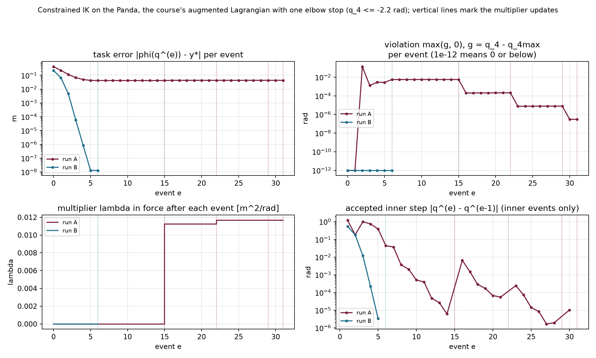
The numerical example for this subsection is indexed in Appendix A (§3.6).
Which quantity changes between inner solves in each method? Why can a penalty solve stop with nonzero violation? What stays fixed during an augmented-Lagrangian multiplier update?
Answers. A penalty increases its weight, a barrier decreases its parameter, and the fixed-weight augmented-Lagrangian loop updates its multipliers. A finite penalty needs violation to produce a nonzero correcting gradient. During a multiplier update the configuration stays fixed; the next inner objective changes.
The inner solve changes the configuration, while the outer update changes the stored gradient balance. Their result requires separate feasibility, stationarity and complementarity checks.
The elbow optimum has a nonzero cost gradient. Its norm is approximately 0.011918 square meters per radian because the active boundary balances a continuing preference to bend farther. A stopping rule based only on the objective gradient would reject this valid constrained result. Conversely, a zero objective gradient can occur at an infeasible point or a saddle.
The KKT conditions give separate quantities to measure. At a candidate and its current multipliers, define
\begin{aligned} v_g&=\max_i\max(g_i,0),\\ v_h&=\max_j|h_j|,\\ s_L&=\left\|\nabla f+ \sum_i\lambda_i\nabla g_i+ \sum_j\kappa_j\nabla h_j\right\|,\\ c_{\mathrm{KKT}}&=\max_i|\lambda_i g_i|. \end{aligned}\tag{3.11}
The first two measure primal infeasibility. The third measures Lagrangian stationarity. The last measures complementarity. Empty groups contribute zero. Dual feasibility additionally requires nonnegative inequality multipliers; the projected update enforces that sign in this loop.
Choose tolerances with the row units and scaling in view. A joint-bound violation in radians and a position-equality error in meters do not share a physical unit. They can be checked separately or scaled by declared reference values before forming a common maximum. Multipliers likewise change with constraint scaling. Numerical thresholds are implementation choices rather than universal physical accuracy guarantees.
For the two-link elbow code, the inequalities are in radians and the cost is in squared meters. Its thresholds are
v_g<10^{-9}\ \mathrm{rad},\qquad s_L<10^{-8}\ \mathrm{m^2/rad},\qquad c_{\mathrm{KKT}}<10^{-11}\ \mathrm{m^2}.
There are no equalities in this elbow example. The last two outer iterations show why all checks matter:
| Outer iteration | Feasibility v_g | Stationarity s_L | Complementarity c_{\mathrm{KKT}} |
|---|---|---|---|
| 3 | 4.9\times10^{-9} | 1.3\times10^{-11} | 5.9\times10^{-11} |
| 4 | 6.5\times10^{-11} | 5.0\times10^{-11} | 7.7\times10^{-13} |
At outer iteration 3, stationarity passes while feasibility and complementarity fail. The next outer iteration passes all three. The objective gradient remains approximately 0.0119 throughout this final stage.
For an included inequality, differentiating the augmented objective gives the coefficient
\lambda_i+2\mu g_i.
If no included coefficient is clamped by the multiplier update, the inner gradient at the current configuration equals the Lagrangian gradient with the updated multipliers. The equality coefficients always update without projection. Excluded inequality rows have zero multiplier and stay zero. Under these conditions,
\nabla A(\mathbf z;\boldsymbol\lambda,\boldsymbol\kappa) =\nabla L(\mathbf z; \boldsymbol\lambda_{\mathrm{new}},\boldsymbol\kappa_{\mathrm{new}}).
Projection can break this identity. Consider the scalar problem
f(z)=\tfrac12(z+2)^2,\qquad g(z)=z\le0, \qquad\lambda=1, \qquad\mu=1.
The positive stored multiplier keeps the inequality included. Its inner objective and derivative are
A(z)=\tfrac12(z+2)^2+z+z^2, \qquad A'(z)=3z+3.
The inner minimum is at minus one. Updating the multiplier then gives
z'=-1, \qquad\lambda_{\mathrm{new}}=\max(1+2(-1),0)=0.
The inner gradient is zero, but the updated Lagrangian gradient is
L'(z';\lambda_{\mathrm{new}}) =f'(-1)+0=1.
The point is feasible and complementary but fails stationarity. That is why the implementation measures the outer residuals after projection instead of assuming that a successful inner solve settles them.
Optional reference. This identity failure belongs to the inclusion rule in (3.10). A different inequality construction, the Powell–Hestenes–Rockafellar augmented-Lagrangian term, keeps the inner gradient equal to the Lagrangian gradient evaluated with the projected new multiplier.
| Outcome | What the implementation found |
|---|---|
| Solved | The declared feasibility, stationarity and complementarity tolerances pass, with valid multiplier signs. |
| Inner stationary | The fixed inner objective has a small gradient; the outer constraints still need their own checks. |
| Stalled | A search failed to accept its proposed direction under its safeguards, so the failed candidate was not taken. |
| Limit | The chosen inner or outer iteration budget was exhausted. |
A small accepted joint increment is an additional observation. It does not replace any outer residual. A precision-based inner stop likewise reports a configured threshold for predicted inner improvement; §3.8 will show this separately from a rejected line search.
Even a solved KKT system can be a saddle, as the arm examples established. These checks also concern the stated geometry at the returned configuration. They do not establish a global minimum, unmodeled collision clearance, or valid motion between configurations.
| Construction | What its inner result controls | What remains to check or improve |
|---|---|---|
| Squared penalty | Stationarity of the penalized objective | Active constraints generally retain finite-weight violation. |
| Log barrier | Strict feasibility and approximate stationarity with positive multiplier estimates | Complementarity products remain at minus the barrier parameter. |
| Augmented Lagrangian | Stationarity of an objective with fixed stored multipliers | Feasibility, complementarity and post-projection stationarity require outer updates and explicit tests. |
These distinctions survive a change of library. RAI is a robotics
library whose Python package is named robotic; its KOMO
interface constructs optimization problems from robot features. Compare
implementations only after matching features, scales, geometry, time
conventions and initial guesses. Then compare their reported residuals
and objective values separately.
The numerical example for this subsection is indexed in Appendix A (§3.7).
Why does a nonzero objective gradient not invalidate the elbow optimum? When can an exact inner stationary point fail the updated stationarity test? Does a solved status establish a safe motion?
Answers. Its active constraint gradient balances the cost gradient. Projecting an included multiplier to zero can change that balance. A solved status reports the declared numerical tests for the modeled configuration; motion between configurations requires additional variables and validation.
The outer residuals determine whether the declared constrained tests pass. The final replay follows how joint and multiplier updates bring those residuals down.
We can now solve §3.5’s hard-target problem with the inner and outer loop we have derived. The target becomes an equality residual, and the objective is the distance from a fixed posture. This change lets us watch the same solver machinery serve a different task definition.
The final replay keeps the Panda model’s full joint box and leaves out the sphere. Its program is
\begin{aligned} f(\mathbf q)&=\tfrac12\|\mathbf q-\mathbf q_{\mathrm{ref}}\|^2,\\ \mathbf h(\mathbf q)&=\varphi(\mathbf q)-\mathbf y^*=\mathbf0,\\ \mathbf g(\mathbf q)&= \begin{bmatrix}\mathbf q^{\min}-\mathbf q\\ \mathbf q-\mathbf q^{\max}\end{bmatrix}\le\mathbf0. \end{aligned}
There are three equality rows in meters and fourteen inequality rows in radians. The task point remains the flange origin in world axes. The reference is the ready posture throughout both runs. The initial guess can differ from that reference.
The two groups have different units, so the implementation uses separate fixed penalty weights:
\mu_h=1000\ \mathrm{rad^2/m^2}, \qquad \mu_g=100.
The second weight is dimensionless. Each penalty term then has the squared-radian units of the posture objective. The augmented objective is
\begin{aligned} A(\mathbf q)=f(\mathbf q) &+\boldsymbol\kappa^\top\mathbf h +\mu_h\|\mathbf h\|^2\\ &+\sum_{i\in\mathcal I} (\lambda_i g_i+\mu_g g_i^2). \end{aligned}\tag{3.12}
Let \mathbf a_i denote the column gradient of joint-bound row i. It is a signed coordinate vector. Differentiating (3.12) gives
\begin{aligned} \nabla A &=(\mathbf q-\mathbf q_{\mathrm{ref}}) +\mathbf J^\top(\boldsymbol\kappa+2\mu_h\mathbf h)\\ &\quad+\sum_{i\in\mathcal I} (\lambda_i+2\mu_g g_i)\mathbf a_i. \end{aligned}
The posture residual has identity Jacobian. The target residual has the position Jacobian, and each bound is affine. Completing the squares as in §3.6 therefore gives the inner Gauss–Newton matrix and damped system:
\begin{aligned} \mathbf H_{\mathrm{model}} &=\mathbf I+2\mu_h\mathbf J^\top\mathbf J +2\mu_g\sum_{i\in\mathcal I}\mathbf a_i\mathbf a_i^\top,\\ (\mathbf H_{\mathrm{model}}+\rho\mathbf I)\boldsymbol\delta &=-\nabla A,\qquad\rho=10^{-3}. \end{aligned}
The identity posture term already supplies positive curvature. The damping adds a small numerical regularization. Armijo starts at scale one for each proposal and evaluates the augmented objective with the stored multipliers held fixed.
After an inner solve, the configuration stays fixed while the outer update changes the stored multipliers:
\boldsymbol\kappa_{\mathrm{new}} =\boldsymbol\kappa+2\mu_h\mathbf h, \qquad \lambda_{i,\mathrm{new}} =\max(0,\lambda_i+2\mu_g g_i).
The stopping checks then use the updated values. The thresholds are a maximum equality-component error of 10^{-6}\ \mathrm m, maximum positive bound violation of 10^{-6}\ \mathrm{rad}, Lagrangian-gradient norm of 10^{-6}\ \mathrm{rad} and complementarity residual of 10^{-8}\ \mathrm{rad^2}. These thresholds differ from the two-link example’s tighter numerical choices. The displayed Euclidean task distance and the maximum equality-component test are also different norms; the report names both.
Run A has target (0.45,0.10,0.45)\ \mathrm m. The initial posture cost is zero because the initial guess equals the reference posture. The flange still misses the target by approximately 0.224 meters. A feasible answer must increase posture cost to reduce that equality violation.
The first accepted joint update raises posture cost to about 0.150 squared radians and lowers task distance to about 6.5 centimeters. After eight accepted inner updates, the distance is about 1.14 millimeters. The following multiplier update keeps the configuration fixed and stores
\boldsymbol\kappa=(-2.056,-0.671,0.702)^\top \ \mathrm{rad^2/m}.
Starting from zero, this value is twice the equality weight times the current residual. The next inner objective therefore carries the correcting gradient that the first penalty solve lacked. Appendix B describes the replay controls.
| Outer iteration | Accepted inner updates | Task distance in meters | Posture cost |
|---|---|---|---|
| 0 | 8 | 1.14\times10^{-3} | 0.207 |
| 1 | 5 | 7.83\times10^{-6} | 0.209 |
| 2 | 3 | 5.50\times10^{-8} | 0.209 |
Run A uses sixteen accepted joint updates and three multiplier updates, with no rejected trial. Every joint-bound multiplier remains zero. Its final equality multipliers match §3.5’s run 1. A positive limiting multiplier magnitude divided by twice the weight predicts the initial penalty shortfall only approximately: the final multiplier norm predicts about 1.15 millimeters, while the actual first inner solve leaves 1.14 millimeters. The update rule itself uses the current residual exactly.
Run B uses the target behind the robot,
\mathbf y^*=(-0.20,0,0.60)^\top\ \mathrm m.
Its first joint starts 0.01 radians above the ready posture, while the cost reference stays at the ready posture. The initial posture cost is therefore 5\times10^{-5}\ \mathrm{rad^2}, and the initial target distance is about 0.507 meters. The offset and branch qualifications are the same as in §3.5.
The first accepted update crosses joints 2 and 4’s lower bounds and raises posture cost to about 1.85 squared radians. The step’s inclusion set contains no bound row because its model was built at the preceding feasible configuration with zero multipliers. On the following update, the violated lower-bound rows enter the model even though their stored multipliers are still zero.
After the last inner joint update of outer iteration zero, joint 2 remains about 0.302 degrees beyond its lower bound. The next event stores its first multiplier, about 1.054 radians, while holding the configuration fixed. Five outer iterations, fifty-four accepted joint updates and three rejected trials lead to the final result. Joint 2 reaches its lower bound within tolerance, its multiplier is approximately 1.053 radians, and posture cost is 1.499 squared radians.
The equality multipliers are approximately
\boldsymbol\kappa=(2.098,4.281,6.107)^\top \ \mathrm{rad^2/m}.
The intermediate iterates may violate the joint box even though it is a hard requirement of the final problem. These numerical iterates are not executable robot commands. The inclusion label identifies rows used to construct that step; it does not assert that the resulting point has no other violation.
Run B’s inner solves end at a configured numerical precision threshold:
-\nabla A^\top\boldsymbol\delta <10^{-13}\max(1,|A|)
in the script’s declared numerical objective units. This test occurs before backtracking. It identifies a predicted improvement too small for the chosen inner computation, rather than a line-search rejection. The outer residual checks still decide whether the constrained problem is solved. At outer iteration 3, feasibility passes while stationarity and complementarity fail; the final outer update brings all tests below their thresholds.
Figure 3.6 compares feasibility and multiplier histories in the hard-target runs.
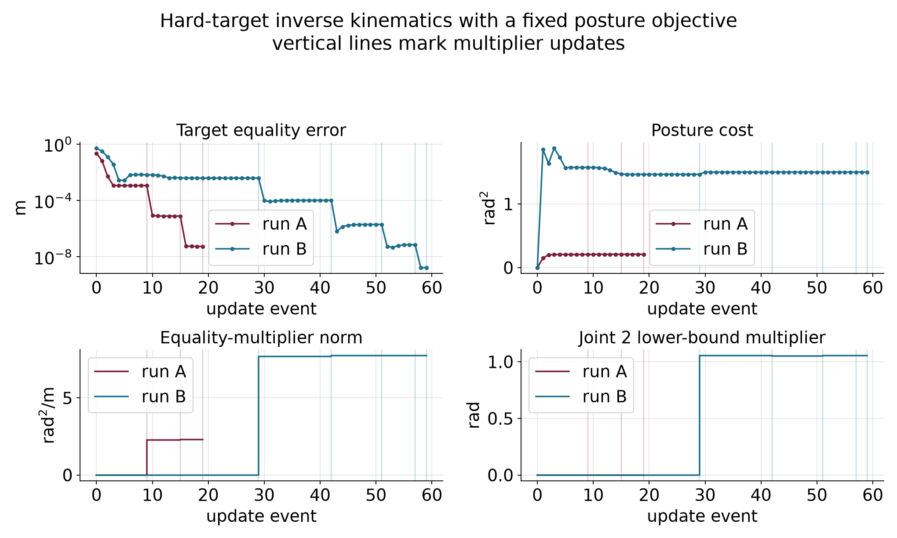
The figure and the tables provide a static fallback. The ghost arm shows the preceding configuration; it does not show a linear prediction. An optional arrow represents an equality-multiplier estimate. At convergence, the negative equality multiplier gives the local cost sensitivity to moving the target. Its units are squared radians per meter, so it is not a physical force.
The numerical example for this subsection is indexed in Appendix A (§3.8).
The two solvers and this loop agree on the reported local branches when their formulations and tolerances are matched. The symmetry-plane saddle and the mirror minimum remain possible outcomes from other starts. Solver agreement does not establish a global optimum.
Why does run A’s cost initially rise? Can a joint-bound row enter the inner model with zero multiplier? What distinguishes a multiplier update from the preceding joint update?
Answers. The cost measures posture deviation, so reaching the exact target requires leaving its zero-cost reference. A violated row is included even with zero stored multiplier. A joint update changes the configuration with multipliers frozen; a multiplier update changes the multipliers with the configuration frozen.
The replay connects local steps, multiplier updates and stopping reports in one configuration problem. We next identify the additional variables needed to turn such answers into motion.
The final Panda example connects each part of this chapter to a quantity we can inspect. Its input consists of a kinematic model, a fixed reference posture, an initial guess, an exact target and joint bounds. Its output is a candidate configuration, multiplier estimates and numerical stopping evidence. Those outputs answer a single-configuration question.
The posture cost ranks configurations. Its gradient tells us how a small joint change alters that preference. The target Jacobian predicts how the same change alters equality error. Bound gradients describe which coordinate changes cross a limit. Gauss–Newton constructs a local step for the augmented objective, and Armijo evaluates the actual objective before accepting it. An outer update changes the multipliers, and the separate KKT residuals test the resulting constrained candidate.
For the behind-robot run, that process returns the lower-bound configuration from §§3.5 and 3.8, with posture cost approximately 1.499 squared radians. The target error, joint-bound violation, Lagrangian-gradient norm and complementarity residual pass their declared tolerances. A positive joint-2 multiplier explains the local cost of tightening its lower bound. The equality multipliers explain the local cost of moving the target. The start and the local branch remain part of the result’s interpretation.
Neither the accepted optimizer iterates nor the two endpoint configurations specify a safe physical motion. The run-B optimizer visits configurations that violate joint limits on its way to a feasible answer. Even if every stored iterate were feasible, interpolation between them could violate a nonlinear constraint. No time law, velocity bound, acceleration bound or tracking controller has been chosen by this configuration solve.
The arm’s two exact IK branches give a small illustration. With no sixty-degree elbow restriction, the target at (0.5,0)\ \mathrm m has the two solutions
\mathbf q^a\approx \begin{bmatrix}-36.870^\circ\\90^\circ\end{bmatrix}, \qquad \mathbf q^b\approx \begin{bmatrix}36.870^\circ\\-90^\circ\end{bmatrix}.
Both satisfy the target equality. Their straight joint-coordinate midpoint is the zero configuration, whose tip is at (0.7,0)\ \mathrm m. Thus endpoint feasibility does not preserve even this target equality throughout the interpolation. An obstacle constraint can fail between endpoints for the same reason that a nonlinear feature need not interpolate linearly.
To choose a motion, we will make a sequence of configurations the decision variable. Costs can then discourage rapid changes, and constraints can be placed at appropriate points in the sequence. Motion optimization with KOMO will explain knot spacing, temporal differences, sparse feature dependencies, actual RAI/KOMO execution and validation between knots. Sampling-based planning will provide another way to find candidate paths. The future forces, dynamics and control part will explain how a path becomes a commanded and observed motion.
Before accepting a constrained-IK result, identify the task point and frame, the cost being minimized, the hard requirements, the initial guess and the measured stopping residuals. Then distinguish a rejected proposal, an accepted joint update and a multiplier update. Finally, state which motion and execution questions still require additional models.
Answers. In the final replay the task point is the Panda flange in world coordinates, the cost is fixed-posture deviation, and the hard requirements are its position equality and the model’s joint box. Feasibility, stationarity, complementarity and multiplier signs are checked on the resulting local candidate. A rejected proposal does not replace the current configuration. An accepted joint update changes it with multipliers frozen. A multiplier update holds it fixed. The result still needs a path, validation along that path, timing and a model of execution.
The nonlinear-program form and solver machinery carry over. Trajectory optimization stacks configurations and adds features that couple neighboring knots.
These are local numerical methods. A stopping report describes the chosen problem, scaling and tolerances. A geometric reachability argument or second-order test can establish a stronger conclusion in a particular example, but that conclusion must be derived separately. Agreement among local solvers is useful evidence about the reported branch.
The constrained examples state which joint limits and obstacle features they include. Point-to-obstacle checks do not protect an entire link. Feasible configurations do not certify the path segments between them. The repeated solver guesses are computation steps rather than physical time samples. Motion optimization, path validation, command timing, feedback and contact require the additional models developed in the later readings.
This appendix collects the implementations and commands for the detailed calculations. Commands assume the course repository and the Python environment described in its setup guide. NumPy suffices for the small arm and bowl examples; the Panda examples use Drake. Each entry retains the function names needed to inspect the implementation.
The supplied local_step.py is complete and requires Python 3 and NumPy. Run it from the repository root:
source .venv/bin/activate
cd lectures/03-reading-optimization-planning-and-control
python code/local_step.pyThe function phi implements (1.1), jac
implements its position Jacobian, and example computes
(1.2)–(1.9) in order. It uses np.linalg.solve for (1.4),
then evaluates phi at the proposed configuration. The
printout includes the matrix, joint update, both tip positions,
residuals, distances and costs. No plotting or robotics package is
needed. The separate figure script uses the same example
result.
Run the supplied bowl_derivatives.py from the repository root:
chapter_dir=lectures/03-reading-optimization-planning-and-control
.venv/bin/python "$chapter_dir/code/bowl_derivatives.py"The script prints the cost, contour intersections, coordinate probes,
gradient, Hessian, quadratic-model check and saddle counterexample. Its
function example loads the same f,
grad and hess functions used by Deck 04 from
descent.py.
The two reused figures were generated from those functions by the deck’s
make_vocabulary_figures.py.
The function check_derivatives checks the analytic
gradient and Hessian against central finite differences. These checks
use only cost evaluations on either side of a point, so they do not use
the supplied analytic derivatives to produce the numerical estimates.
They also verify the quadratic identity at several points, check the
saddle Hessian and confirm the opposite cost changes there. A separate
coupled quadratic checks the mixed-partial calculation with a nonzero
expected entry; the bowl’s zero mixed entries alone would not exercise
that case. The script needs Python 3 and NumPy. It does not regenerate
either figure.
Run gradient_descent.py from the repository root:
chapter_dir=lectures/03-reading-optimization-planning-and-control
.venv/bin/python "$chapter_dir/code/gradient_descent.py"The function example uses the deck’s f,
grad, hess and gd_fixed functions
from descent.py. The
script prints every update in the twelve-step comparisons and the
exact-scale cost crossing. The function closed_form_path
constructs coordinate powers independently of the numerical update.
check_updates compares the two computations, checks the
qualitative cases and verifies the 45-update crossing with exact
fractions. The script also checks starts with a zero coordinate, for
which that coordinate stays zero even if its factor would magnify a
nonzero value. It writes no files and leaves the shared figure
unchanged.
The script needs Python 3 and NumPy.
Run the supplied armijo.py:
chapter_dir=lectures/03-reading-optimization-planning-and-control
.venv/bin/python "$chapter_dir/code/armijo.py"The function backtrack records every proposed scale,
point, evaluated cost, threshold and decision. run_armijo
repeats accepted gradient steps with the growth rule.
example returns the chapter, app and floor examples. The
fraction_run calculation independently expands the
quadratic with exact rational arithmetic, and
check_examples compares it with the numerical searches and
checks the failure paths. The shared bowl functions come from the deck’s
descent.py.
The check also compares the six updates with that file’s floor-free
armijo_backtracking and gd_armijo routines.
Both versions of the floor counterexample use the chapter’s own
backtrack function.
The script needs Python 3 and NumPy. It produces no figures or other output files.
Run jacobian_transpose.py from the repository root:
chapter_dir=lectures/03-reading-optimization-planning-and-control
.venv/bin/python "$chapter_dir/code/jacobian_transpose.py"It reuses §1.1’s FK and Jacobian and §1.4’s safeguarded backtracking
function. The deck’s gauss_newton_ik.py
independently prints the same first update. Its armijo
helper and the chapter’s helper use a floor of 10^{-6}; the interactive module uses 10^{-8}. The deck’s separate
run_gd function has no floor safeguard. These are distinct
implementation policies. None affects this first search, because its
initial trial passes. We will state the policy again when it changes a
difficult target’s stopping outcome in §2.5.
The functions hess and grad, and examples
(c–d) in descent.py,
reproduce the bowl and saddle calculations. The function
run_newton with hess_exact in gauss_newton_ik.py
reproduces the arm’s stationary endpoint. Run these files with Python
and NumPy. The scalar full-step counterexample is independently
reproducible with this code:
def f(z):
return 0.1 * z**4 - z**2 - z + 5
z = 1.45
gradient = 0.4 * z**3 - 2 * z - 1
curvature = 1.2 * z**2 - 2
direction = -gradient / curvature
for alpha in (1.0, 0.5, 0.25):
trial_cost = f(z + alpha * direction)
bound = f(z) + 0.01 * alpha * gradient * direction
print(alpha, trial_cost, bound, trial_cost <= bound)In code, np.linalg.lstsq(J, -r, rcond=None) directly
solves the linear least-squares problem and selects this minimum-norm
solution. It avoids forming the normal matrix, whose condition number is
the square of the Jacobian’s condition number when the Jacobian has full
column rank. The numerical function gn_step forms the
normal equations to make their entries visible; its undamped direct
solve therefore requires a nonsingular normal matrix.
The functions phi, jac, grad,
hess_exact and gn_step in gauss_newton_ik.py
reproduce the matrices and step. Its printed example (f) reports the
full-step acceptance test; the last line of example (g) prints the exact
and Gauss–Newton Hessian eigenvalues at the starting configuration. The
existing opening
prediction figure and staged demonstration in §1.1 show the same
linear prediction and nonlinear outcome. The interpretation now includes
the least-squares problem that selected the update.
The function gn_step and printed example (g) in gauss_newton_ik.py
produce the three first steps, the fixed-damping runs and the adaptive
example. Function armijo tests the proposed steps against
the actual objective. The iteration comparison in §2.5 uses the existing
ik_iterates.png figure to show these different rates on the
same target.
The following code runs from the Deck 04 code directory
and imports the existing phi and jac functions
from gauss_newton_ik.py.
The same file’s printed example (n) verifies the two inverse forms for
isotropic damping.
import numpy as np
from gauss_newton_ik import phi, jac
q = np.deg2rad([30.0, 45.0])
target = np.array([0.5, 0.2])
K = np.diag([4.0, 1.0])
D = np.diag([0.05, 0.1])
r = phi(q) - target
J = jac(q)
step = np.linalg.solve(J.T @ K @ J + D, -J.T @ K @ r)
predicted = r + J @ step
actual = phi(q + step) - target
print("step, radians:", step)
print("predicted and actual residual:", predicted, actual)
print("task costs:", 0.5 * r @ K @ r, 0.5 * actual @ K @ actual)Use run_gn, stationary and
armijo in gauss_newton_ik.py.
Running the whole file prints the regular case (f), the reach-boundary
case (j), the unreachable target with floor comparisons (k), and the
reachable stationary start (p). Specify linesearch=True and
the desired floor when reproducing a protected run. The
printed attempted update at a stall is one larger than the number of
accepted updates in its history.
The functions build and make_fk in gn_ik_panda.py
construct the model and its flange kinematics. The function
gauss_newton_ik implements the updates. Running the file
with the course’s Drake environment prints the three target comparisons.
Its record_runs function distinguishes accepted updates
from rejected trials, and --selftest independently
recomputes their predictions and FK results. The
--replay --app mode opens the paused replay. The Drake guide describes the supported
environment and launcher.
The two-link clipping example is printed as example (m) in gauss_newton_ik.py. It uses the same target and starting configuration as the earlier sections.
Run constrained_ik.py. Its example (f) repeats the clipped iteration and evaluates the free-joint derivative. The same file supplies the constrained solution used below.
The function disc_problem in constrained_ik.py
evaluates the solution and prints its stationarity and complementarity
checks.
The functions constrained_ik_by_hand,
report_ik and sensitivity in constrained_ik.py
print both branches, their gradients, the clipped comparison and the
one-degree price check. The printed example also includes a target whose
unconstrained elbow is only 56.49 degrees; there the limit is
inactive.
Run ik_nlp_panda.py
with the course Python environment. Its solve_ik,
report and print_mode functions implement the
program, report active constraints and test multiplier sensitivities.
The --meshcat option opens the interaction described
above.
The functions penalty_method,
barrier_method and augmented_lagrangian in constrained_ik.py
implement the elbow tables. The complete Panda loop is
al_ik in constrained_ik_panda.py.
Its print mode reports the updates and an independently solved local
comparison.
Run check_solvers.py
with the course Python environment. It includes the clamped-multiplier
counterexample and checks that rejected trials leave the accepted
iterate unchanged. The outer loop in constrained_ik.py
prints the elbow residuals.
The supplied implementation is al_ik_nlp in ik_nlp_al_panda.py. Run
it without options to print both outer histories, KKT checks,
same-program SNOPT and IPOPT comparisons, multiplier sensitivities and
local second-order checks. Its --selftest mode recomputes
the recorded states and compares them with the saved numerical
reference. The --replay --app option opens the paused
interaction.
The visits below are optional ways to inspect the chapter’s numerical
claims. Their static figures and tables provide the same mathematical
comparisons when an interaction is unavailable. Browser modules use the
relative links where provided. Launcher routes beginning with
http://127.0.0.1:8765/ refer to a local instance of the
course demonstration launcher. They are access instructions for that
environment, not public web addresses. Panda launcher routes use the
Drake environment. The presenter notes remain the classroom sequence’s
source.
Open the staged
local-step demonstration. It runs in a browser without a server or
additional libraries. In a local course checkout with the demo launcher
running, the same view is available at
http://127.0.0.1:8765/modules/gauss-newton-ik/?view=local-step.
This view evaluates one configuration update. It does not animate physical motion or run the later iterative solver.
The optional explorer visit makes the effect of the scale visible while keeping the cost and update rule fixed. It uses Deck 04 page 8’s sequence:
The link supplies 0.08 exactly. Moving the logarithmic slider manually to the nearby setting gives about 0.0794, which has the same qualitative behavior. Figure 1.4 and the factor table supply the comparison if the demo is unavailable. The figure’s Newton panel remains a preview for §2.1.
Use Deck 04 page 11’s visit to see the proposed and accepted scales separately:
Each accepted update lowers the cost. On this bowl, that keeps the point within the initial cost contour, so the iterates cannot diverge as they did with a fixed scale of 0.11. The path still zigzags because the direction remains the negative gradient. Backtracking adapts the length of each move; it does not remove the mismatch between the two coordinate curvatures.
The app uses the same bowl but starts at (−2.5, 0.8) and uses an Armijo fraction of one ten-thousandth. Its initial cost is 12.65, its directional slope is −281, and its threshold is therefore
12.65-0.0281\alpha.
These differ from the chapter table’s initial values and fraction. The first six accepted scales happen to agree for these two setups. Other starts need not give the same sequence. The visit shows how halving and regrowth respond to evaluated costs. Its Armijo loop tests at most 25 trial scales and has no scale floor. If none passes, it returns the next halved scale with its condition flags; that fallback is not guaranteed to pass. The six searches in this visit pass within the loop. The visit therefore cannot show the chapter’s floor rejection, which the numerical example in Appendix A checks separately. Figure 1.5 and the two tables supply the observation if the browser is unavailable. The Newton comparisons on Deck 04 page 13 remain a preview for Part 2.
The accepted update improves the task but leaves substantial error. The same table supplies a static fallback if the module is unavailable. Repeated updates recompute a local gradient on one fixed cost landscape.
Deck 04 page 18 uses the explorer’s
quartic example. This link requires the course demonstration server.
The live function has a maximum at the origin; it differs from the
saddle and the scalar quartic above. The app’s coordinates called
x and y are our two decision coordinates, and
its regularization label λ means our coefficient \rho.
The comparison changes the curvature model while keeping the start fixed. It establishes that regularization can repair an uphill direction. With line search still off, it does not establish that every later full step lowers the cost. If the module is unavailable, use the saddle table and the scalar Armijo table as the static comparison of these two safeguards.
The two-link Gauss–Newton module implements the same kinematics and allows individual updates. It uses a line-search floor of 10^{-8}, while the script’s default is 10^{-6}. Match the floor when comparing stopping counts. The module shows accepted iterations; a rejected next attempt does not add a stored configuration.
stalled outcome after nine
accepted updates and compare the tip with the closest point. Click the
damping slider’s label, then press the right-arrow key four times from
its initial 10^{-3} setting to reach
10^{-2}. Moving this slider selects
damped Gauss–Newton. Disable Armijo and rerun to observe the stationary
outcome after 29 updates.The conclusion is about both the task and the algorithm: a regular solution, a singular boundary solution and an unreachable target produce different local models and stopping outcomes. If the module is unavailable, the tables and two reused figures provide the same comparisons. The module’s default target differs from these selected presets, so its default residual should not be substituted into their tables.
The existing paused Panda replay opens on run 2 at its initial configuration. It requires the course launcher and Drake. A solid robot shows the current accepted configuration, and a faded ghost shows the preceding one. The teal marker is the predicted flange, the maroon marker is the actual flange, and the gold sphere is the target.
The local model must be evaluated against the actual kinematics after a finite step. Agreement of those two flange locations does not establish that the task is solved. The existing replay plots provide a static fallback showing task error, accepted step norm and prediction gap separately for each run. Their horizontal index counts optimizer updates, not elapsed physical time.
Open the disc explorer through the course demo server. It computes a closed-form solution immediately; there is no iterative optimizer to start.
The active/inactive label changes at the boundary, while the multiplier changes continuously in this example. The displayed condition checks follow the closed-form construction; their passing does not validate an unrelated solver. The table and force diagram provide a static fallback.
For the interactive comparison, open the straight-fence
explorer. Predict the multiplier before changing Straight
fence to Rail. Its value stays approximately
0.849. Then select far on the other side and observe
the equality multiplier become approximately minus 1.202. Switching back
to Straight fence makes the inequality multiplier zero.
The table provides the same comparison without the browser. These values
are independently printed by example (a′) of
constrained_ik.py.
Open the Panda constrained-IK demonstration. The page shows the robot beside the program, the cost, the active rows with their multipliers and each link’s clearance. It begins at run 3.
The demonstration compares solutions from two starts and displays the better feasible candidate it finds. Two starts do not exhaust all local solutions. Each target defines a separate IK problem; the displayed changes do not plan a collision-free motion between answers. The figure and table provide the static fallback.
Open the one-limit Panda replay.
It starts paused at the ready pose with run A, whose target is (0.65,0,0.35)\ \mathrm m. Unlike the two-link elbow stop, this bound limits opening of the Panda elbow.
The faded arm shows the preceding configuration. This replay has no separate linear-prediction marker. The accepted pose change illustrates a joint update; the fixed-pose event illustrates an outer multiplier update.
Open the hard-target Panda replay. It begins paused in run A.
Predict what changes in a joint update. Press Step once. The arm moves while the multipliers stay fixed. Posture cost rises to about 0.150 squared radians, and task distance falls to about 6.5 centimeters.
Select event 8, the last joint update in outer iteration zero. The distance has settled near 1.14 millimeters. This slider move skips intervening joint updates; it does not constitute one multiplier update.
Press Step once. The configuration stays fixed, and the stored equality multiplier becomes approximately
\boldsymbol\kappa=(-2.0556,-0.6709,0.7023)^\top \ \mathrm{rad^2/m}.
Starting from zero, this value equals twice the equality weight times the current residual exactly. Predict whether the next inner objective still prefers the same shortfall.
Continue through the next outer iterations. The distance falls to about 7.83 micrometers and then 0.055 micrometers. At event 19, the third multiplier update, all declared residual tests pass.
Section 1.1 continues §7.6 of the kinematics essentials and the closing bridge of Deck 03. It uses the same lengths, start, target and residual convention as the corresponding detailed derivations. The calculation is repeated here so that the new chapter can be read independently.
Section 1.2 follows Deck 04’s pages 3–5, from the bowl and its coordinate slices to the local cost model. Its figures are the original deck assets, and its code uses the deck’s numerical functions. Coordinate differences lead to the first-order model, and a line restriction explains directional curvature. The stationary-point discussion distinguishes necessary conditions, a saddle and a sufficient test for a strict local minimum. The two-solution reminder reconnects Chapter 01’s geometry.
Section 1.3 follows Deck 04 pages 6–9 and notes §§3.1, 4.1–4.2 and 5(a). It reuses the deck’s step-size figure and numerical iterations. It develops the fixed-scale bowl calculation, including the unit-curvature range, the worst-coordinate criterion and the exact 45-update count. The figure’s Newton panel is a preview for §2.1.
Section 1.4 follows Deck 04 pages 10–13 and notes §§3.2, 4.3 and 5(b). Its Armijo figure and bowl functions are reused directly. The chapter adds a fully recorded trial loop and a bowl-based floor counterexample. Section 1.5 returns to the arm with the Jacobian-transpose gradient, following Deck 04 pages 14–15. Its helper independently checks that gradient and the first accepted update, while preserving the different numerical floors of the supplied tools.
The backtracking test traces to Larry Armijo’s 1966 paper, Minimization of functions having Lipschitz continuous first partial derivatives, Pacific Journal of Mathematics 16(1), 1–3. Its Corollary 2 gives a halving search with a sufficient-decrease test. It is optional historical reading; §1.4 supplies the argument needed here, including this example’s growth rule.
Part 2 follows Deck 04 pages 17–38 and its notes §§4–5. It derives
Newton, Gauss–Newton, damping and weighted IK before examining
convergence and stopping. The two-link computations use the lecture’s gauss_newton_ik.py.
The Panda replay uses the original Drake implementation,
with its accepted updates and rejected trials kept distinct. Numerical
stationary references are comparisons with particular solves, not global
certificates.
Part 3 follows Deck 05 pages 2–27 and the corresponding the
corresponding detailed derivations. Disc and rail geometry lead to
KKT conditions, multiplier sensitivity and constrained IK. The lecture’s
constrained_ik.py
and check_solvers.py
provide the small computations. The existing Panda programs supply the
hard-target example and both augmented-Lagrangian replays. Section 3.9
closes the configuration problem before Deck 06 introduces
configuration-space paths and then trajectory optimization.
The detailed Wolfe conditions and bracket-and-zoom search extend the line-search acceptance rules. Their algorithms remain optional in the Optimization I notes §9 and Deck 04 backup pages 40–41; the main deck adds a brief conceptual comparison. The chapter’s Armijo construction does not rely on them.